The invention of the transistor (Shockley, Brattain, Bardeen at Bell Labs) and the subsequent development of the Integrated Circuit by Jack Kilby (1960, Texas Instruments) revolutionized electronics. Over past decades, Silicon CMOS emerged as dominant fabrication process due to packing density, low static power, and batch economic scalability.
"An IC is an ensemble of active and passive devices formed on and within a single-crystal semiconductor substrate and interconnected by a metallization pattern." — Sze & Lee (p. 505)
Discrete circuits join packaged devices with physical wires or PCB traces. ICs replace external wiring with monolithic on-chip thin-film conductors. Three decisive advantages won the market:
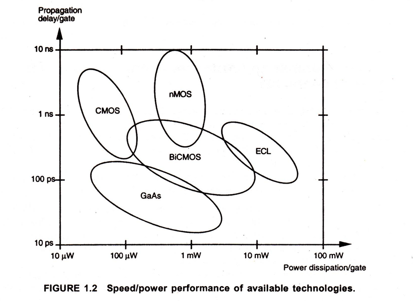
Microwave, photonics, and ultra-high-power applications still demand discrete components: IMPATT diodes as microwave generators, injection laser diodes as optical emitters, and thyristors as high-voltage industrial switches.
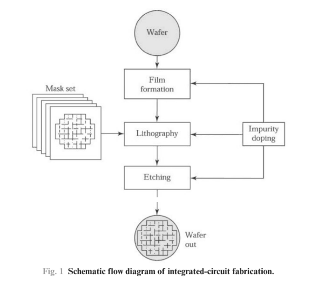
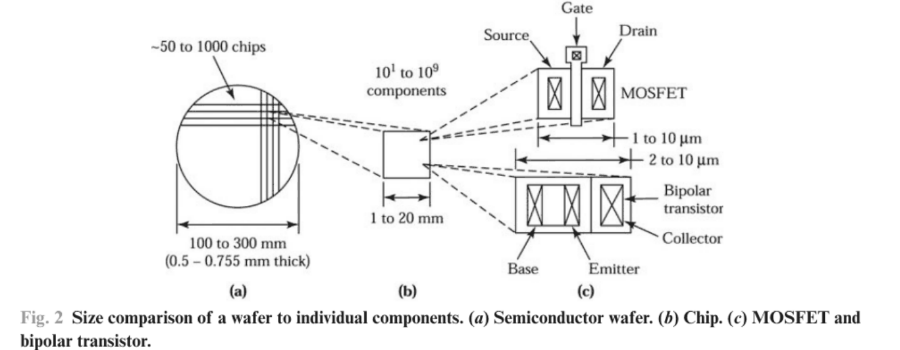
An IC cannot do everything a discrete circuit can. Six primary bottlenecks:
"The Y-chart shows a design in three domains — behavioral, structural and physical — with the level of abstraction falling as one moves toward the centre."
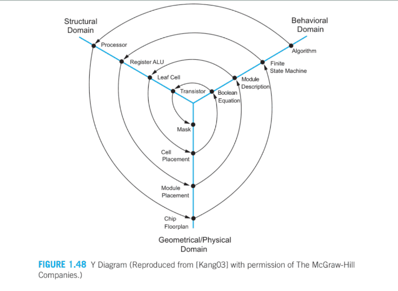
The design process spirals iteratively inward across these axes: a behavioral specification maps to a structural block, which maps to floorplan coordinates, then repeats at finer granularity.
| Abstraction Level | Core Role | Real-World Example (x86 / Adder) |
|---|---|---|
| 1. Architecture | Defines functional external contract, instruction set (ISA), register set, and memory model. | x86 Instruction Set Architecture specification. |
| 2. Microarchitecture | Partitions architecture into execution pipelines, registers, caches, and functional execution units. | 80386, Pentium, Core, Atom, AMD Athlon, Phenom (tradeoffs in transistor count, power, frequency). |
| 3. Logic | Constructs functional blocks using gates, boolean expressions, and state elements. | 32-bit Integer Adder designed via Ripple Carry, Carry Lookahead, or Carry Select. |
| 4. Circuit | Implements logic gates with specific transistor configurations tailored for power or speed. | Carry lookahead adder built with Static CMOS, Domino logic, or Pass Transistors. |
| 5. Physical | Geometric layout, silicon layers, routing tracks, and pad placement. | Polysilicon, diffusion, contact cuts, and metallization masks. |
Short & Fat: Extremely deep expertise in a narrow layer (e.g., pure circuit device physics).
Tall & Skinny: Broad understanding spanning multiple abstraction layers. Digital VLSI strongly favors the tall, skinny engineer because decisions in one domain radically impact others (e.g., changing a cache circuit from 2 clock cycles to 1 cycle shifts the entire optimal microarchitecture).
"The design flow starts from the algorithm in the behavioral domain, is mapped to architecture and floorplan, and ends in mask layout; top-down and bottom-up approaches must be combined."
Top-Down: High-level system requirements decompose into sub-blocks (Specification → Architecture → Logic → Circuits). Ensures architectural intent is maintained.
Bottom-Up: Physical limitations dictate feasibility (Transistor sizing → Standard cell libraries → Macro placement → Parasitic extraction). Feeds real delay, power, and noise numbers back to higher levels.
Managing chips with billions of transistors requires structured design principles:
Tree structure dividing chip into Cores → Units → Functional Blocks → Leaf Cells → Transistors. Simplifies verification through black-box interfaces.
Minimize distinct block types. Once designed and verified, reuse identical cells across datapath and memory arrays.
Enforce strict, well-defined I/O interfaces so changes within one block do not trigger unintended cross-talk or timing violations.
Confine interactions both physically and temporally. Keep communicating cells adjacent to avoid long high-capacitance wiring.
| Generation | Component Count per Chip | Historical Era |
|---|---|---|
| SSI (Small Scale Integration) | ≤ 100 components | Early 1960s (Basic logic gates) |
| MSI (Medium Scale Integration) | ≤ 1,000 components | Late 1960s (Adders, counters, muxes) |
| LSI (Large Scale Integration) | ≤ 100,000 components | 1970s (Early 8-bit microprocessors) |
| VLSI (Very Large Scale Integration) | ≤ 10,000,000 components | 1980s–1990s (Complex 32-bit CPUs) |
| ULSI (Ultra Large Scale Integration) | > 10,000,000 components | Modern multi-core processors, SoCs |
One pMOS and one nMOS make an inverter. Put them in series and parallel and you get NAND, NOR and compound gates. Add transmission gates and feedback and you get multiplexers, latches and flip-flops. Weste & Harris build all of this in nine pages; read them once slowly.
Every MOS transistor is built as a vertical three-layer sandwich: a conducting Gate, an insulating dielectric layer of Silicon Dioxide (\(\text{SiO}_2\), glass, typically only a few hundred molecules thick), and the single-crystal silicon wafer (known as the Substrate, Body, or Bulk).
The gate acts as an electrostatic control valve, establishing an electric field that dictates carrier flow between Source and Drain (which are physically symmetrical and interchangeable):
Built in a p-type body with n-type source/drain pockets. Body is tied to GND (0 V), reverse-biasing the p-n junctions.
Built in an n-type body (or n-well) with p-type source/drain pockets. Body is tied to \(V_{DD}\).
Logic 1 is designated as \(V_{DD}\) (Power), and Logic 0 as GND / \(V_{SS}\) (0 V). Historically standardized at 5.0 V in the 1970s and 1980s, supply voltages have scaled down to 3.3 V, 2.5 V, 1.8 V, 1.5 V, 1.2 V, 1.0 V, and 0.8 V in modern sub-micron processes to prevent oxide breakdown and curb dynamic switching power (\(P \propto C V_{DD}^2 f\)).
In digital abstraction, we view transistors as simple voltage-controlled electronic switches:
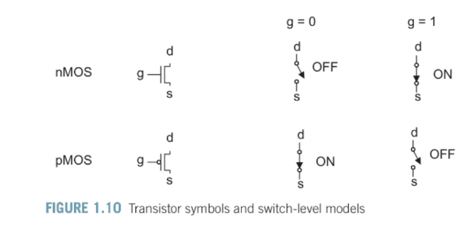
| Transistor Type | Substrate / Well | Source / Drain | Gate = 0 (GND) | Gate = 1 (\(V_{DD}\)) | Carriers |
|---|---|---|---|---|---|
| nMOS | p-type substrate (tied to GND) | n+ diffusion pockets | OFF (Open switch) | ON (Closed switch) | Electrons (Higher mobility \(\mu_n\)) |
| pMOS | n-well / n-substrate (tied to \(V_{DD}\)) | p+ diffusion pockets | ON (Closed switch) | OFF (Open switch) | Holes (Lower mobility \(\mu_p\)) |
"A static CMOS gate has an nMOS pull-down network between output and GND and a complementary pMOS pull-up network between output and VDD; exactly one of them conducts for every input." — Weste & Harris §1.4.3, pp. 9–11
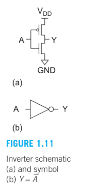
| Input A | pMOS Pull-Up | nMOS Pull-Down | Output Y |
|---|---|---|---|
| 0 | ON (Conducting to \(V_{DD}\)) | OFF (Open circuit) | 1 (\(V_{DD}\)) |
| 1 | OFF (Open circuit) | ON (Conducting to GND) | 0 (GND) |
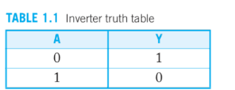
In classical nMOS or bipolar gates, current continually leaked from power to ground whenever the gate output was in a low state. In static CMOS, for every valid steady-state input (0 or 1), one network is strictly non-conducting. There is never a direct resistive path from \(V_{DD}\) to GND. Static power dissipation is virtually zero (limited only to picoamp leakage), enabling chips to pack billions of transistors without instantly incinerating.
In general, every static CMOS logic gate is constructed by joining an nMOS pull-down network (PDN) to a complementary pMOS pull-up network (PUN):
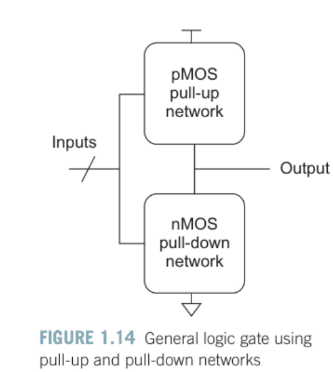
Both networks attempt to exert a logic level at the output node. For any combination of inputs, the gate can reside in one of four operating states:
| Pull-Up Network: OFF | Pull-Up Network: ON | |
|---|---|---|
| Pull-Down Network: OFF |
Z (High-Z) Floating output node |
1 (Logic High) Connected to \(V_{DD}\) |
| Pull-Down Network: ON |
0 (Logic Low) Connected to GND |
X (Crowbarred) Contention / Short-circuit |
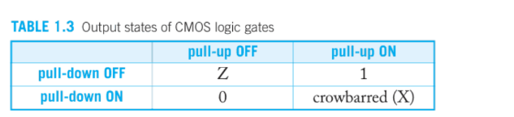
Occurs when both PUN and PDN are OFF. The output wire is electrically disconnected from both supply rails and floats, holding its voltage solely on parasitic capacitance.
Applications: Crucial for multiplexers, shared tristate buses (allowing multiple drivers to share one wire by enabling only one at a time), and dynamic memory/latches.
Occurs when both PUN and PDN are simultaneously ON. A direct, low-resistance short-circuit path forms between \(V_{DD}\) and GND, causing a massive surge of "crowbar" short-circuit current.
Hazards: Produces an indeterminate output voltage (typically near \(V_{DD}/2\)), causes massive static power dissipation, and risks thermal destruction of thin oxide gates. In static CMOS logic, complementary design strictly guarantees State X is prevented.
Combinational CMOS gates are constructed by connecting transistors in series and parallel. The conduction rules differ fundamentally between nMOS and pMOS:
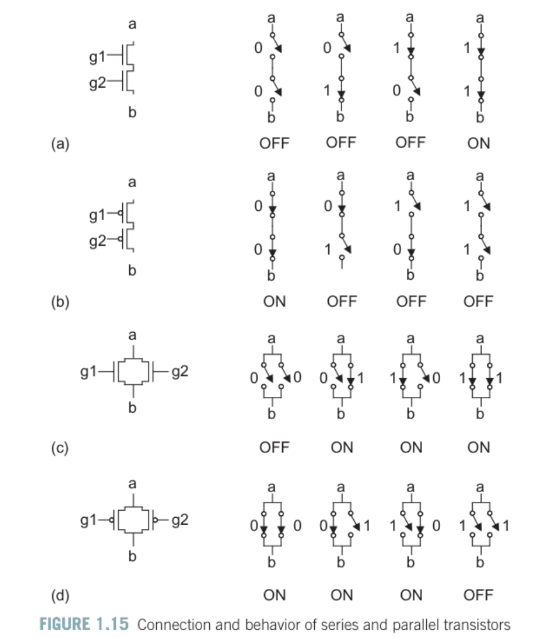
11.01, 10, and 11.00.00, 01, and 10.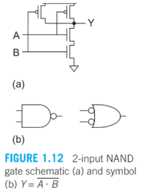
| Input A | Input B | Pull-Down Network (nMOS Series) | Pull-Up Network (pMOS Parallel) | Output Y |
|---|---|---|---|---|
| 0 | 0 | OFF (Both nMOS OFF → open to GND) | ON (Both pMOS ON → dual path to \(V_{DD}\)) | 1 |
| 0 | 1 | OFF (nMOS A is OFF → series path broken) | ON (pMOS A is ON → connects \(V_{DD}\)) | 1 |
| 1 | 0 | OFF (nMOS B is OFF → series path broken) | ON (pMOS B is ON → connects \(V_{DD}\)) | 1 |
| 1 | 1 | ON (Both nMOS ON → conducting to GND) | OFF (Both pMOS OFF → isolated from \(V_{DD}\)) | 0 |
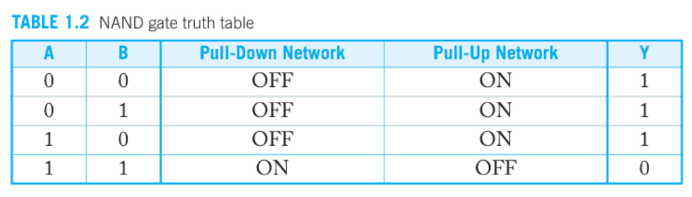
Extending NAND to 3 inputs requires adding a third transistor to both networks: 3 nMOS in series in the pull-down network, and 3 pMOS in parallel in the pull-up network.
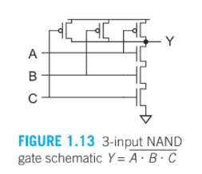
Output \(Y\) pulls down to 0 (GND) if and only if all three inputs are high (\(A=1, B=1, C=1\)). If any single input drops to 0, that transistor breaks the series pull-down path while its complementary parallel pMOS immediately connects the output to \(V_{DD}\) (1).
A 2-input NOR gate performs the complementary dual function of the NAND gate: nMOS transistors are in parallel to pull the output low when either input is high, and pMOS transistors are in series to pull the output high only when both inputs are low.
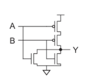
| A | B | Pull-Down Network (nMOS Parallel) | Pull-Up Network (pMOS Series) | Output Y |
|---|---|---|---|---|
| 0 | 0 | OFF (Both nMOS OFF) | ON (Both pMOS ON → path to \(V_{DD}\)) | 1 |
| 0 | 1 | ON (nMOS B pulls to GND) | OFF (pMOS B is OFF → path broken) | 0 |
| 1 | 0 | ON (nMOS A pulls to GND) | OFF (pMOS A is OFF → path broken) | 0 |
| 1 | 1 | ON (Both nMOS conduct to GND) | OFF (Both pMOS OFF → path broken) | 0 |
A 3-input NOR gate incorporates 3 series pMOS transistors in the pull-up network and 3 parallel nMOS transistors in the pull-down network.
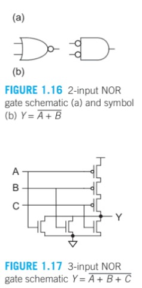
In digital VLSI standard cell libraries, NAND gates vastly outnumber NOR gates. Why?
A compound gate performs a complex Boolean function within a single inverting stage of logic by combining series and parallel switch structures. This drastically reduces transistor count, silicon area, and parasitic delay compared to cascading discrete gates.
"Transistors that appear in series in the pull-down network must appear in parallel in the pull-up network; transistors that appear in parallel in the pull-down network must appear in series in the pull-up network."
The AOI22 (AND-OR-INVERT-22) gate executes the NOR of two 2-input AND terms. The derivation proceeds systematically:
Take the uninverted Boolean expression \( (A \cdot B) + (C \cdot D) \) defining when output \(Y\) pulls down to 0 (GND):
Apply DeMorgan's dual (conduction complements) using inverted-polarity pMOS switches:
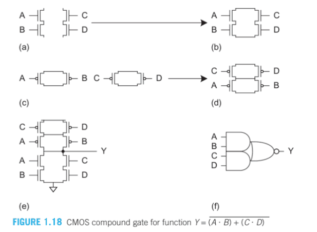
An AOI22 gate functions as a high-speed 2-to-1 inverting multiplexer simply by wiring input \(C = \overline{A}\) (where \(A\) acts as the select signal \(S\)):
Y = \(\overline{(S \cdot B) + (\overline{S} \cdot D)}\) → If \(S = 0 \Rightarrow Y = \overline{D}\); If \(S = 1 \Rightarrow Y = \overline{B}\).
This delivers a single-stage, fully-restored inverting multiplexer in just 8 transistors.
Building the same function \( Y = \overline{(A \cdot B) + (C \cdot D)} \) using discrete library gates requires two AND gates, one OR gate, and an inverting stage:
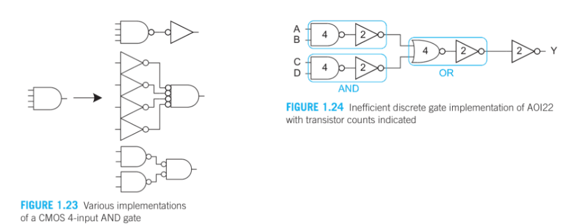
| Design Metric | Compound CMOS Gate (Fig 1.18) | Discrete Gate Chain (Fig 1.24) | Engineering Advantage |
|---|---|---|---|
| Transistor Count | 8 Transistors (4 nMOS, 4 pMOS) | 20 Transistors (10 nMOS, 10 pMOS) | 60% Area Reduction |
| Logic Delay Stages | 1 Inverting Stage | 4 Cascaded Stages (NAND→Inv→NOR→Inv) | Drastically Faster Propagation |
| Internal Switching Nodes | 0 intermediate nodes | 3 internal wires switching | Much Lower Dynamic Power (\(P \propto C V^2 f\)) |
| Routing & Wire Parasitics | Compact monolithic cell layout | Heavy interconnect wiring between 4 gates | Minimal Parasitic Capacitance |
The strength of an electrical signal is measured by how closely it approximates an ideal voltage source capable of sourcing or sinking current. The power supply rails (\(V_{DD}\) and GND) provide the strongest 1s and 0s.
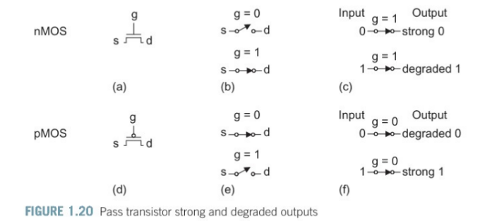
Passes a Strong 0, but a Degraded / Weak 1.
When pulling up, the source rises. As \(V_s\) approaches \(V_{DD} - V_{tn}\), gate-to-source voltage drops to \(V_{gs} = V_t\), abruptly choking off channel conduction. Output never exceeds \(V_{DD} - V_{tn}\).
Passes a Strong 1, but a Degraded / Weak 0.
When pulling down, as \(V_s\) drops toward \(|V_{tp}|\), gate-to-source potential shrinks to \(|V_{tp}|\), cutting off conduction. Output cannot pull below \(|V_{tp}|\).
| Device Type | Control Gate | Input Voltage | Output Voltage | Signal Quality |
|---|---|---|---|---|
| nMOS | \(g = 1\) (\(V_{DD}\)) | 0 V (GND) | 0 V (GND) | Strong 0 |
| nMOS | \(g = 1\) (\(V_{DD}\)) | \(V_{DD}\) | \(V_{DD} - V_{tn}\) | Degraded / Weak 1 |
| pMOS | \(g = 0\) (GND) | 0 V (GND) | \(|V_{tp}|\) | Degraded / Weak 0 |
| pMOS | \(g = 0\) (GND) | \(V_{DD}\) | \(V_{DD}\) | Strong 1 |
By connecting an nMOS and a pMOS transistor in parallel, the weaknesses of each device cancel out: the nMOS efficiently passes 0s while the pMOS efficiently passes 1s, achieving an ideal switch with full rail-to-rail swing.
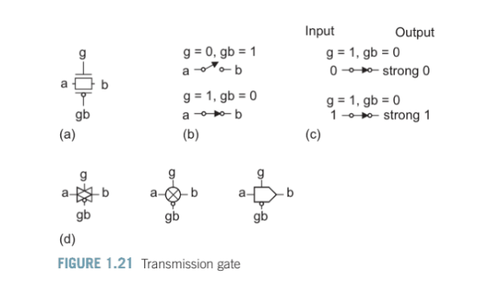
Because nMOS activates with a high gate voltage while pMOS activates with a low gate voltage, a transmission gate requires both the control input \(g\) and its complement \(gb = \overline{g}\). This dual-polarity driving requirement is termed double-rail logic.
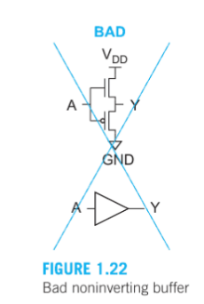
Engineers are sometimes tempted to create a noninverting buffer by flipping transistors upside down (connecting nMOS to \(V_{DD}\) and pMOS to GND). This circuit is fundamentally flawed:
In standard static CMOS gates (Fig 1.14), nMOS transistors only connect to GND and pMOS transistors only connect to \(V_{DD}\). Therefore, static CMOS gates are fully restored logic gates: logic levels are continuously refreshed to the true power rails without degradation.
How to Build Noninverting Functions: Noninverting functions (such as AND, OR, and Buffers) must ALWAYS be constructed by cascading multiple inverting stages (e.g., AND = NAND + Inverter).
From high-impedance isolation to restoring multiplexer synthesis. Weste & Harris §1.4.7–1.4.8.
A tristate buffer functions as an electronically controlled switch. Imagine EN is the master ON/OFF button:
"State 'Z' does NOT mean 0! It means disconnected."
It represents an electrically isolated, high-impedance state where the output wire floats freely and only holds residual charge on parasitic capacitance.
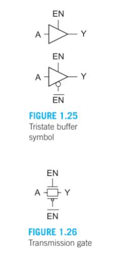
| EN | \(\overline{\text{EN}}\) | Input A | Output Y | Operating State |
|---|---|---|---|---|
| 0 | 1 | 0 | Z | Disconnected (High-Z) |
| 0 | 1 | 1 | Z | Disconnected (High-Z) |
| 1 | 0 | 0 | 0 | Enabled (Strong GND) |
| 1 | 0 | 1 | 1 | Enabled (Strong \(V_{DD}\)) |
Imagine a normal physical switch connecting two wires, A and Y:
| EN | \(\overline{\text{EN}}\) | Physical Switch State |
|---|---|---|
| 0 | 1 | OFF (Open Circuit) |
| 1 | 0 | ON (Conducting Channel) |
A tri-state buffer actively copies the input logic level to regenerate a new output.
A transmission gate physically makes or breaks a direct conductive path between the two wires.
• Door open: Signal travels freely from room A to room Y.
• Door closed: Signal cannot travel from A to Y.
• Crucial Limit: The door does not amplify, clean, or repair the person walking through it.
A buffer receives an incoming signal, looks at it, and restores a weak or noisy logic signal to a fresh, clean full-rail 0 or 1.
One-line memory trick: Transmission gate = door; buffer = signal cleaner.
A transmission gate passes the signal but does not clean it up. If the input voltage is weak or noisy, the output remains weak or noisy too. Furthermore, cascading multiple transmission gates causes the delay to skyrocket quadratically (\(t_{pd} \propto N^2\)) due to distributed \(RC\) resistance.
Remember: Buffer = restores signal. Transmission gate = passes signal.
Let's forget textbook jargon for a second and trace the real electrical charges:
Suppose input \(A\) carries a degraded voltage of \(0.7\text{ V}\).
When the transmission gate turns ON, its parallel nMOS and pMOS transistors create a physical conducting channel between node A and node Y.
What happens next? Charge simply flows through that channel, and output Y settles to approximately the same voltage as A (\(Y \approx 0.7\text{ V}\)), depending on the load and channel resistance.
"The transistor doesn't ask, 'Is this supposed to be a logic 1? Should I push it to 1 V?' It simply provides a passive path for charge to flow."
That's the crucial part: there is no active mechanism inside the transmission gate that corrects Y toward a valid digital logic level.
Now imagine feeding that exact same \(0.7\text{ V}\) voltage into a CMOS inverter stage. Its input voltage controls two separate gates:
The input voltage determines which transistor conducts strongly. If the input is recognized as HIGH, the nMOS turns ON and pulls the output hard towards GND. If recognized as LOW, the pMOS pulls it hard towards \(V_{DD}\).
Where does the clean output voltage come from? From the power supply, NOT from magically strengthening the incoming signal!
The input controls the process; the power supply provides the energy. (One inverter reverses polarity; two stages form a non-inverting restoring buffer.)
| Feature | Transmission Gate | Active Buffer |
|---|---|---|
| Electrical Role | Connects two nodes. Output voltage passively follows input through a conductive path. | Controls a brand-new output. Input gate controls switches that actively pull from rails. |
| Voltage Correction | Does NOT correct voltage to a clean logic level. | Actively regenerates full rail voltages (\(0\text{ V}\) and \(V_{DD}\)). |
| The Question to Ask | "Does this circuit merely let the input voltage reach the output, or does it use the input to control a separate pull-up/pull-down stage that creates a new output voltage?" | |
Restoration is NOT a feedback mechanism! It is pure transistor switching and power rail replenishment:
Suppose the input carries a weak logic HIGH of \(0.7\text{ V}\) in a \(1.0\text{ V}\) system:
Boundary Condition: A buffer can clean up a valid but imperfect signal, but cannot fix voltages that fall outside noise margins into intermediate forbidden zones.
A buffer is like a support player on a football pitch:
Transmission gate: passes the ball along as-is.
Buffer: receives the pass, traps it, and unleashes a fresh, powerful shot.
Think of the tri-state inverter as an inverter with a master switch. It can either invert the input or disconnect the output completely.
Input \(A\) can be 0 or 1, but output \(Y = Z\). The output is completely disconnected from both rails.
The circuit behaves like a normal inverter: \(Y = \overline{A}\). Strong and actively restored from the power rails!
| Input A | Enable EN | Output Y | Operating Mode |
|---|---|---|---|
| 0 | 1 | 1 | Active Inversion (\(V_{DD}\)) |
| 1 | 1 | 0 | Active Inversion (GND) |
| X (0 or 1) | 0 | Z | Disconnected (High-Z) |
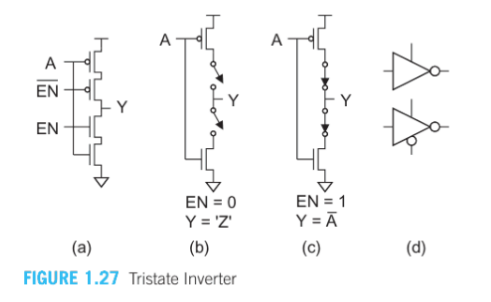
Imagine the transistor stack has two paths leading directly to output junction \(Y\):
\(V_{DD} \rightarrow\) two pMOS transistors \(\rightarrow Y\)
Role: Can pull node \(Y\) up to strong logic 1 (\(V_{DD}\)).
\(Y \rightarrow\) two nMOS transistors \(\rightarrow\) GND
Role: Can pull node \(Y\) down to strong logic 0 (GND).
Now, the position of each control pin matters:
Why use both EN and \(\overline{EN}\)? Because pMOS turns ON with a LOW gate signal, while nMOS turns ON with a HIGH gate signal. Dual-rail enable ensures both paths open simultaneously when enabled!
Then \(\overline{EN} = 1\).
• The extra pMOS is OFF.
• The extra nMOS is OFF.
Both paths are broken, regardless of the value of input \(A\).
Therefore, neither the supply nor ground can drive node \(Y\):
\[ \boxed{Y = Z} \]
That's how the circuit disconnects its output.
Then \(\overline{EN} = 0\).
• The extra pMOS is ON.
• The extra nMOS is ON.
The master switch enables both paths. Now input A decides which path conducts:
Notice how A controls the inversion, while EN controls whether the circuit operates at all.
"A controls the answer; EN controls whether an answer is allowed out."
That's the whole purpose of a tri-state inverter: it can output an inverted 0 or 1, or output neither and leave the connection free for another device.
Unlike static CMOS gates (such as NAND, NOR, and AOI), the tristate inverter deliberately violates the conduction complements rule. When \(EN = 0\), both pull-up and pull-down networks are deliberately turned OFF simultaneously to produce the floating high-impedance state 'Z'.
Historically, wide processor buses were shared using tristates. In modern sub-micron chips, tristate buses are largely replaced with static multiplexers to eliminate bus contention crowbar currents (if two drivers switch simultaneously) and floating bus receiver leakage.
Let's break this down from the beginning. Multiplexers are key building blocks in CMOS memory elements and data manipulation structures.
Figure 1.29 shows an Inverting Multiplexer (MUX), implemented using transistors in (a) and (b), and represented using a logic symbol in (c).
The key idea is simple: choose one input, then invert it.
Imagine you have two data inputs, \(D_0\) and \(D_1\), but only one output wire, \(Y\).
A select signal \(S\) decides which input gets through:
The ordinary (non-inverting) multiplexer follows this rule:
| Select S | Selected Data Input | Output of Ordinary MUX |
|---|---|---|
| 0 | \(D_0\) | \(D_0\) |
| 1 | \(D_1\) | \(D_1\) |
Notice that the output is simply whichever input is selected. There is no inversion yet.
Look carefully at part (c) of Figure 1.29. There is a small circle at output \(Y\). That circle is called an inversion bubble. It means the output is complemented, or NOT-ed.
So the circuit performs two sequential operations:
| Select S | \(\overline{S}\) | \(D_1\) | \(D_0\) | Selected Input | Output Y |
|---|---|---|---|---|---|
| 0 | 1 | X | 0 | \(D_0 = 0\) | 1 |
| 0 | 1 | X | 1 | \(D_0 = 1\) | 0 |
| 1 | 0 | 0 | X | \(D_1 = 0\) | 1 |
| 1 | 0 | 1 | X | \(D_1 = 1\) | 0 |
Remember: \(S = 0\) selects \(D_0\), while \(S = 1\) selects \(D_1\). The output is always the opposite of the selected data bit.
For an ordinary 2-to-1 multiplexer, the standard Boolean sum-of-products expression is:
\(M = \overline{S} \cdot D_0 + S \cdot D_1\)
Let's decode what each symbol means:
Since your circuit is an inverting multiplexer, the entire output expression is complemented:
\[ \boxed{Y = \overline{\overline{S} \cdot D_0 + S \cdot D_1}} \]
That boxed expression is the master equation to write in any exam!
Change the inputs below and watch how the select signal routes and flips the bit:
They are transistor-level implementations.
Instead of drawing the MUX as a single abstract logic symbol, they use physical MOS transistors to perform the selection and inversion electrically.
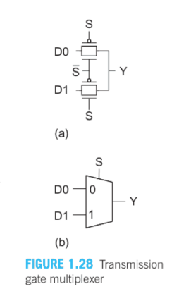
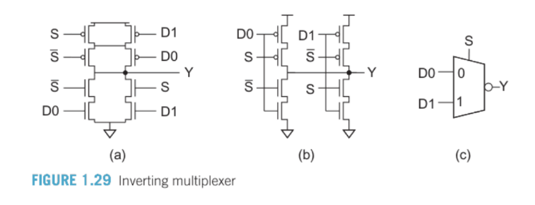
The transistor networks use complementary select signals \(S\) and \(\overline{S}\) (always having opposite values: \(S=0 \implies \overline{S}=1\); \(S=1 \implies \overline{S}=0\)). This complement is required to activate the chosen data path while completely isolating the other.
The transistor arrangement determines whether the selected data bit makes \(Y\) high or low. In this inverting MUX, a selected 0 produces output 1, and a selected 1 produces output 0.
Notice that the schematics of (a) and (b) in Figure 1.29 are nearly identical! The only distinction is that the pull-up network has been slightly simplified and permuted in Figure 1.29(b). This optimization is valid because select signal \(S\) and its complement \(\overline{S}\) are mutually exclusive.
| Implementation Style | Transistor Count | Restoring? | Key Characteristics & Trade-offs |
|---|---|---|---|
| 1. Transmission Gate MUX (Fig 1.28) | 4T (+2T for \(\overline{S}\)) | No (Nonrestoring) | Smallest silicon area, but signal is not refreshed and delay degrades quadratically (\(N^2\)) when cascaded. |
| 2. AOI22 Compound MUX (Fig 1.29a) | 8T (+2T for \(\overline{S}\)) | Yes (Full Restoring) | Clean full-rail drive; implements \(Y = \overline{(S \cdot D_1) + (\overline{S} \cdot D_0)}\). Requires more internal routing wire. |
| 3. Ganged Tristate MUX (Fig 1.29b) | 8T (+2T for \(\overline{S}\)) | Yes (Full Restoring) | Industry Favorite: Re-orders the pull-up stack; requires less internal wiring, offers lower parasitic output capacitance, and switches faster than AOI22. |
• \(S = 0 \Rightarrow D_0\) is selected.
• \(S = 1 \Rightarrow D_1\) is selected.
The output bubble at \(Y\) means NOT.
The selected input is inverted: \(0 \rightarrow 1\), \(1 \rightarrow 0\).
\[ \boxed{Y = \overline{\overline{S} \cdot D_0 + S \cdot D_1}} \]
Combinational vs regenerative circuits, bistable operating points, metastability physics, SR/JK latches, master-slave flip-flops, CMOS TG & tristate D-latches, and static sequencing constraints (setup, hold, time borrowing, and clock skew). Kang & Leblebici Chapter 8, Weste & Harris Chapters 1 & 10.
"In combinational logic, transistors are like obedient light switches — turn on the input, and the output responds immediately without memory. But cross-couple two inverters back-to-back, and something miraculous happens: positive feedback creates a memory element! Their voltage transfer curves cross at three points: two deep valleys (stable logic 0 and logic 1 where loop gain is zero) and one razor-sharp hill crest in between (the metastable point \(V_m\) where gain is maximum). If data arrives too late and misses the setup aperture, the circuit balances on the peak of that hill like a marble on a knife-edge — lingering in an illegal voltage state before noise randomly knocks it down!"
In combinational circuits (non-regenerative), output voltages at any instant are strictly determined as direct Boolean functions of current input voltages (neglecting propagation delay). In sequential circuits (regenerative), outputs depend on both current inputs and the historical sequence of past inputs, enabled by a feedback loop containing a memory element.
| Attribute | Combinational Logic Circuits | Sequential Logic Circuits |
|---|---|---|
| Memory Capability | No memory; outputs are memoryless and stateless. | Has memory; stores previous states and historical sequences. |
| Feedback Mechanism | Strictly feedforward (non-regenerative; no output-to-input loop). | Regenerative feedback loops (direct or indirect) between output and input. |
| Clock Synchronization | Asynchronous; output updates as soon as inputs propagate. | Synchronous (clocked latches/FFs) or asynchronous (level/edge gating). |
| Primitive Elements | NAND, NOR, Inverters, AOI/OAI, multiplexers. | Bistable latches, flip-flops, registers, counters, SRAM cells. |
| Timing Dependencies | Governed by gate propagation delay \(t_{pd}\) and hazards (glitches). | Governed by setup time \(t_{setup}\), hold time \(t_{hold}\), and clock period \(T_c\). |
Based on temporal behavior and stable equilibrium states, regenerative circuits are classified into three distinct categories:
• Possess two stable operating states (Logic 0 and Logic 1).
• Preserves state indefinitely as long as DC supply voltage is maintained.
• Examples: Latches, flip-flops, registers, static RAM (SRAM) memory cells. By far the most critical class in digital VLSI.
• Possess only one stable operating state.
• When triggered by an external pulse, the circuit enters a quasi-stable state for a predefined duration, then autonomously returns to its single stable point.
• Examples: One-shot pulse generators, glitch filters, delay generators.
• Possess no stable operating states.
• The circuit continuously oscillates back and forth between two quasi-stable states without ever settling into a fixed DC operating point.
• Examples: CMOS ring oscillators, multivibrators, on-chip clock generators.
Consider two identical CMOS inverters connected in a closed cross-coupled loop (Kang Fig. 8.2(a)): $$v_{o1} = v_{i2} \quad \text{and} \quad v_{o2} = v_{i1}$$ Superimposing the Voltage Transfer Characteristic (VTC) of Inverter 1 (\(v_{o1}\) vs \(v_{i1}\)) and Inverter 2 (\(v_{i1}\) vs \(v_{o1}\)) reveals exactly three intersection points (Kang Fig. 8.2(b)):
\(v_{o1} = V_{OH} \approx V_{DD}, \quad v_{o2} = V_{OL} \approx 0\text{ V}\).
At this point, the voltage gain of both inverters is essentially zero:
$$|A_{v1}| = \left|\frac{dv_{o1}}{dv_{i1}}\right| \ll 1, \quad |A_{v2}| = \left|\frac{dv_{o2}}{dv_{i2}}\right| \ll 1 \implies A_{loop} = A_{v1} \cdot A_{v2} < 1$$
Small voltage disturbances are attenuated; potential energy is at a minimum (\(E_{pot} = 0\)).
\(v_{o1} = V_{OL} \approx 0\text{ V}, \quad v_{o2} = V_{OH} \approx V_{DD}\).
Identical to Point A by symmetry. Voltage gain is zero, loop gain is far below unity (\(A_{loop} \ll 1\)), and potential energy is at a local minimum. The state is firmly locked.
\(v_{o1} = v_{o2} = V_m\) (the inverter switching threshold voltage).
At this point, both inverters operate in the high-gain transition region:
$$|A_{v1}| > 1, \quad |A_{v2}| > 1 \implies \mathbf{A_{loop} = A_{v1} \cdot A_{v2} \gg 1}$$
Any microscopic noise perturbation is exponentially amplified, immediately driving the circuit into stable Point A or Point B. Potential energy is at a global maximum!
• The Bistability Principle: A circuit has two stable equilibrium states when its loop gain is less than unity (\(A_{loop} < 1\)) at both states, accompanied by potential energy minima. To force the circuit to transition from one stable state to the other, an external voltage trigger must be applied that temporarily drives the loop gain larger than unity (\(A_{loop} > 1\)).
• The Metastable State (Weste & Harris §10.6.1): When a latch goes opaque, its internal nodes are connected back-to-back (\(A = B\)). If the data signal transitions inside the forbidden setup/hold aperture (\(t_m\)), the internal nodes can become trapped at \(A = B = V_m\). Because \(V_m\) is electrically self-consistent, the voltages could theoretically remain there indefinitely.
• The Ball-on-a-Hill Analogy (Weste Fig. 10.42(d)): Stable states are like two valleys on either side of a hill. The metastable state is the exact knife-edge apex. A ball balanced at the top is in equilibrium; however, thermal noise or stray electrons will eventually cause the ball to roll down into either the 0-valley or 1-valley.
• Resolution Delay \(t_{DQ}\) (Weste Fig. 10.43): As the arrival time of data approaches the critical metastable time \(t_m\) (\(t_{DC} \to t_m\)), the clock-to-Q delay grows exponentially:
$$t_{DQ} = \tau_s \ln\left(\frac{V_{DD}}{\Delta V_0}\right) \propto -\tau_s \ln|t_{DC} - t_m|$$
where \(\tau_s\) is the small-signal time constant of the cross-coupled inverter pair.
"The two-inverter bistable element from Tab 1 holds a bit forever, but it has no external steering wheel — you can't tell it when to switch! To give it an external trigger, we insert pull-down or pull-up transistors that can overpower the feedback. Put parallel nMOS switches at the bottom, and you get the active-HIGH NOR-based SR Latch (positive logic). Put series nMOS or parallel pMOS switches at the top, and you get the active-LOW NAND-based SR Latch (negative logic). Each has a forbidden state where both outputs collapse to the same voltage!"
The basic CMOS SR latch consists of two cross-coupled CMOS NOR2 gates with two triggering inputs: \(S\) (Set) and \(R\) (Reset), and two complementary outputs: \(Q\) and \(\overline{Q}\).
The circuit contains four nMOS transistors (\(M_1, M_2, M_3, M_4\)) and four complementary pMOS transistors:
• Set State (\(S = V_{OH}, R = V_{OL}\)): Parallel nMOS \(M_1\) and \(M_2\) are turned ON. Node \(\overline{Q}\) is pulled down to \(V_{OL} = 0\text{ V}\). This \(0\text{ V}\) turns ON the pMOS pull-up of the opposite NOR gate, charging \(Q \to V_{OH} = V_{DD}\). Both \(M_3\) and \(M_4\) are cut OFF.
• Reset State (\(S = V_{OL}, R = V_{OH}\)): nMOS \(M_3\) and \(M_4\) turn ON, pulling node \(Q \to V_{OL} = 0\text{ V}\). This turns ON the pMOS pull-up of the first gate, charging \(\overline{Q} \to V_{OH} = V_{DD}\). Both \(M_1\) and \(M_2\) are cut OFF.
• Hold State (\(S = V_{OL}, R = V_{OL}\)): Both external trigger transistors \(M_1\) and \(M_4\) are cut OFF. Feedback holds the state: if \(Q=1\), \(M_2\) conducts keeping \(\overline{Q}=0\); if \(Q=0\), \(M_3\) conducts keeping \(Q=0\).
• Not-Allowed State (\(S = V_{OH}, R = V_{OH}\)): Both trigger transistors \(M_1\) and \(M_4\) conduct simultaneously, forcing \(\mathbf{Q = \overline{Q} = 0}\). This violates complementarity! Furthermore, when both inputs are simultaneously released back to \(0\), the circuit enters a metastable race, randomly falling into \(0\) or \(1\).
| \(S\) | \(R\) | \(Q_{n+1}\) | \(\overline{Q}_{n+1}\) | Operation | Conducting Transistor States |
|---|---|---|---|---|---|
| \(0\) (\(V_{OL}\)) | \(0\) (\(V_{OL}\)) | \(Q_n\) | \(\overline{Q}_n\) | Hold | \(M_1, M_4\) OFF; \(M_2\) ON (if \(Q=1\)) or \(M_3\) ON (if \(\overline{Q}=1\)) |
| \(1\) (\(V_{OH}\)) | \(0\) (\(V_{OL}\)) | \(1\) | \(0\) | Set | \(M_1, M_2\) ON; \(M_3, M_4\) OFF |
| \(0\) (\(V_{OL}\)) | \(1\) (\(V_{OH}\)) | \(0\) | \(1\) | Reset | \(M_1, M_2\) OFF; \(M_3, M_4\) ON |
| \(1\) (\(V_{OH}\)) | \(1\) (\(V_{OH}\)) | \(0\) | \(0\) | Not Allowed | \(M_1, M_4\) both ON (violates \(Q \neq \overline{Q}\)) |
Inverting the logic produces the cross-coupled NAND2 SR latch. Because a NAND gate produces a \(1\) whenever any input is \(0\), the NAND SR latch responds to Active-LOW inputs (\(\overline{S}\) and \(\overline{R}\)) — also referred to as Negative Logic.
| Attribute | NOR-Based SR Latch (Positive Logic) | NAND-Based SR Latch (Negative Logic) |
|---|---|---|
| Active Input Polarity | Active-HIGH (\(S=1\) sets, \(R=1\) resets) | Active-LOW (\(\overline{S}=0\) sets, \(\overline{R}=0\) resets) |
| Quiescent Hold State | \(\mathbf{S = 0, \quad R = 0}\) | \(\mathbf{\overline{S} = 1, \quad \overline{R} = 1}\) |
| Forbidden Input Condition | \(S = 1, R = 1 \implies \mathbf{Q = \overline{Q} = 0}\) | \(\overline{S} = 0, \overline{R} = 0 \implies \mathbf{Q = \overline{Q} = 1}\) |
| Schematic Symbol | Plain input pins \(S\) and \(R\) | Input pins marked with inversion bubbles (\(\overline{S}\), \(\overline{R}\)) |
| Depletion-Load Option | Requires pull-down nMOS with depletion load | Cross-coupled depletion-load NAND (Kang Fig. 8.13); higher static DC power than CMOS |
"The SR latch has an annoying flaw: what if both inputs accidentally hit 1? The output goes crazy! The JK latch fixes this genius-style: it feeds back the outputs \(Q\) and \(\overline{Q}\) to the inputs so that when \(J = K = 1\), it cleanly toggles! But wait — if the clock stays high too long, the latch races around, oscillating like a broken alarm. The cure? Build a Master-Slave Flip-Flop! Master catches the input while the clock is high, and locks the door; Slave releases the output only when the clock falls. Master and slave never open together, completely killing the oscillation hazard!"
Unclocked latches respond to inputs immediately at any delay-dependent instant. Synchronous systems add a gating clock (\(\text{CK}\)). When \(\text{CK} = 0\), the input gates are locked and the latch holds state. When \(\text{CK} = 1\), inputs are sampled.
• CMOS AOI Realization (Kang Fig. 8.16): Rather than using two separate AND2 and two NOR2 gates (which requires 16 transistors), CMOS implements the clocked NOR SR latch using two cross-coupled AND-OR-Invert (AOI21) gates, drastically slashing transistor count to just 12 transistors.
• Glitch Sensitivity: The circuit is strictly level-sensitive while \(\text{CK} = 1\). Any noise spike on \(S\) or \(R\) during this window can corrupt the stored bit.
The JK latch removes the forbidden state by cross-feeding the outputs back into the input gating logic: $$S = J \cdot \overline{Q}, \quad R = K \cdot Q$$
In an SR latch, the input condition \(S = R = 1\) is strictly forbidden because it forces \(Q = \overline{Q}\) and creates an unpredictable race condition when clock falls. In a JK latch, feedback from the complementary outputs ensures that when \(\mathbf{J = K = 1}\), the latch toggles (\(Q_{n+1} = \overline{Q}_n\)). Every single input combination is valid and deterministic (Kang Table 8.3).
| \(Q_n\) | \(J\) | \(K\) | \(Q_{n+1}\) | \(\overline{Q}_{n+1}\) | Operation Mode |
|---|---|---|---|---|---|
| 0 | 0 | 0 | 0 | 1 | Hold (\(Q_{n+1} = Q_n\)) |
| 1 | 0 | 0 | 1 | 0 | |
| 0 | 0 | 1 | 0 | 1 | Reset (\(Q_{n+1} = 0\)) |
| 1 | 0 | 1 | 0 | 1 | |
| 0 | 1 | 0 | 1 | 0 | Set (\(Q_{n+1} = 1\)) |
| 1 | 1 | 0 | 1 | 0 | |
| 0 | 1 | 1 | 1 | 0 | Toggle (\(Q_{n+1} = \overline{Q}_n\)) |
| 1 | 1 | 1 | 0 | 1 |
When \(J = K = 1\) during an active clock pulse (\(\text{CK} = 1\)), the output toggles. But because the latch is level-sensitive, the toggled output immediately feeds back to the inputs, toggling it again! The output oscillates continuously with frequency \(f_{osc} = 1 / (2 t_{pd})\) as long as \(\text{CK} = 1\).
• Theoretical Constraint: To toggle exactly once per cycle (acting as a toggle switch), the clock pulse width \(t_{pw}\) must be strictly smaller than the latch propagation delay:
$$t_{pw} < t_{pd}$$
• Practical Difficulty: Because gate delays vary wildly with PVT corners (typically \(50\text{--}200\text{ ps}\)), designing a clock pulse that is guaranteed narrower than \(t_{pd}\) without failing is virtually impossible in digital VLSI.
The race-around problem is permanently eliminated by cascading two stages clocked on opposite clock phases:
• Phase 1 (\(\text{CK} = 1\)): The Master stage is enabled and samples primary inputs \(J\) and \(K\), setting internal nodes \(Q_m\) and \(\overline{Q}_m\). Meanwhile, the inverter on \(\text{CK}\) holds the Slave stage disabled (\(\overline{\text{CK}} = 0\)). The slave isolates the primary output \(Q_s\), holding its previous value.
• Phase 2 (\(\text{CK} = 0\)): The Master stage is disabled (\(\text{CK} = 0\)), freezing its state and ignoring all further changes on \(J\) and \(K\). Simultaneously, the Slave stage becomes active (\(\overline{\text{CK}} = 1\)), transferring the stored master values \(Q_m\) to primary outputs \(Q_s\).
• Non-Transparency Property: Because the master and slave are never transparent at the same time, there is no direct combinational path from inputs \(J, K\) to outputs \(Q_s\). This breaks the continuous feedback loop, guaranteeing that when \(J=K=1\), the flip-flop toggles exactly once per clock cycle.
• The "One's Catching" Hazard: Because the master latch is level-sensitive while \(\text{CK} = 1\), a temporary noise spike or glitch on the \(J\) line (or \(K\) line) will flip the master latch. Once set, the master cannot be cleared during that clock phase, and the erroneous bit propagates to the slave on the falling clock edge. This vulnerability motivates the move to true edge-triggered flip-flops.
"Direct CMOS gates like AOI latches are fine, but they use too many transistors. In advanced VLSI, we build latches directly with CMOS Transmission Gates (TGs)! A TG D-latch uses just two inverters and two transmission gates: input TG opens the door when clock is high (transparent loading), and feedback TG closes the holding circle when clock is low. Cascading two such stages on opposite clocks creates the famous negative-edge-triggered master-slave D flip-flop — advancing data by exactly one clock cycle and making timing analysis clean and race-free!"
A transmission gate alone does not remember anything. An inverter alone does not remember anything either.
Together, inverters and feedback create a bi-stable holding state, while transmission gates decide when that state is allowed to change.
\(D \rightarrow\) Input Inverter \(\rightarrow\) Input TG1 (controlled by \(CLK\)) \(\rightarrow\) Node X.
When \(CLK=1\), TG1 opens the door and forces new external data onto node X.
\(Q \rightarrow\) Feedback Inverter \(\rightarrow\) Feedback TG2 (controlled by \(\overline{CLK}\)) \(\rightarrow\) Node X.
When \(CLK=0\), TG2 closes the feedback loop, locking node X into a continuous self-reinforcing circle.
Figure: TG1 and TG2 are clocked on opposite phases (\(CLK\) and \(\overline{CLK}\)). They take turns controlling Node X.
Because the two transmission gates are controlled in strictly opposite clock phases:
| Clock Phase | Input Gate (TG1) | Feedback Gate (TG2) | What Physically Happens |
|---|---|---|---|
| Transparent Phase (\(CLK=1\)) | ON | OFF | New input \(D\) dictates node X. Feedback is cut off so there is zero competition. |
| Hold Phase (\(CLK=0\)) | OFF | ON | Input \(D\) is disconnected. Feedback loop closes, preserving and reinforcing \(Q\). |
If both routes were enabled at the same time, the input inverter and feedback inverter would fight each other directly at node X, producing invalid intermediate voltages and heavy crowbar power dissipation. Modern ICs enforce non-overlapping clocks to ensure TG1 turns OFF before TG2 turns ON!
• Built with two CMOS inverters and two transmission gates.
• Input TG is enabled by \(CK\); loop TG is enabled by \(\overline{CK}\).
• Setup & Hold Requirements (Kang Fig. 8.28): Input \(D\) must be valid and stable for a brief duration before (\(t_{setup}\)) and after (\(t_{hold}\)) the negative clock transition during which the input TG closes and the loop TG completes the feedback ring. Violating these timing specs leads directly into metastability!
• Contains two clocked tristate inverters and one standard inverter.
• Operation: When \(CK = 1\), the first tristate inverter drives input \(D\) into the core while the second tristate inverter is in High-Z. When \(CK = 0\), the input buffer enters High-Z while the second tristate completes the two-inverter regenerative holding loop.
• Eliminates separate pass-gate routing, achieving a compact standard-cell layout.
A clocked CMOS D-latch (Kang Figs. 8.26–8.29) is a level-sensitive memory element. When the clock is active (\(CK = 1\)), the latch is completely transparent — any logic changes on \(D\) propagate directly to output \(Q\). When \(CK = 0\), the input switch opens and the internal bistable loop locks the captured state. Because it is level-sensitive, it cannot prevent race-through across multiple cascaded logic stages during an active clock phase.
Cascading two D-latches with complementary clocks creates the fundamental industrial storage element of digital VLSI:
• Circuit Topology: Consists of two cascaded stages — a Master D-latch and a Slave D-latch, requiring four inverters and four transmission gates (or equivalent tristates):
• Master Stage: Input TG clocked by \(CK\), feedback TG clocked by \(\overline{CK}\). (Positive level-sensitive).
• Slave Stage: Input TG clocked by \(\overline{CK}\), feedback TG clocked by \(CK\). (Negative level-sensitive).
• Step-by-Step Operation Across Clock Phases:
• When \(CK = 1\): Master input TG is ON, loop TG is OFF; the master latch is transparent, following input \(D\) (\(Q_m = D\)). Meanwhile, the slave input TG is OFF and slave loop TG is ON; the slave holds the previous output value \(Q_s\). Changes at \(D\) are strictly prevented from reaching \(Q_s\).
• At Negative Transition (\(CK: 1 \to 0\)): Master input TG turns OFF, freezing and storing the exact state of \(D\) present at that instant. Concurrently, slave input TG turns ON, transferring the master's captured bit \(Q_m\) cleanly to the output \(Q_s\).
• When \(CK = 0\): Master remains opaque and disconnected from \(D\); slave loop holds the captured bit at \(Q_s\).
• Conclusion: The output updates strictly at the negative (falling) clock edge. This is a robust negative edge-triggered D flip-flop!
• Elimination of Race-Through Hazards: A level-sensitive latch is transparent for the entire duration of the active clock phase. If combinational logic between two latches is fast, a data signal can race through multiple successive pipeline stages in a single clock cycle, corrupting the system state.
• Clean Cycle-by-Cycle Advancement: An edge-triggered flip-flop samples its input strictly at the infinitesimal clock edge and remains completely opaque for the remainder of the clock period. This guarantees that data tokens advance by exactly one register stage per clock cycle.
• Deterministic Static Timing Analysis: Flip-flop pipelines sharply delineate cycle boundaries, making max-delay (setup) and min-delay (hold) timing closure straightforward and robust against race conditions (Kang §8.4–8.5, Weste §10.2.1).
Assume \(D = 1\) and the latch enters the transparent phase (\(CLK = 1\)):
\[ D = 1 \quad\longrightarrow\quad X = 0 \quad\longrightarrow\quad Q = 1 \]
So far, that's pure signal routing: two inversions cancel out, preserving the original bit.
Now clock falls: \(CLK = 0\). Watch how the loop locks the bit:
\[ Q = 1 \xrightarrow{\text{Inv3}} 0 \xrightarrow{\text{TG2}} X = 0 \xrightarrow{\text{Inv2}} Q = 1 \]
The cycle endlessly reinforces the stored state!
"The feedback inverter does not send the original current circulating around in a circle forever! Rather, the output voltage controls the gates of the transistors, and the power supply (\(V_{DD}\) / GND) continuously replenishes charge to maintain the node voltages."
If \(D = 0\), the exact mirror image occurs:
\[ D = 0 \quad\longrightarrow\quad X = 1 \quad\longrightarrow\quad Q = 0 \]
During hold, Inv3 turns \(Q=0\) into \(1\), TG2 passes \(1\) back to node X, and Inv2 keeps driving \(Q = 0\). Fully symmetrical and stable!
An edge-triggered D flip-flop is built by connecting two D latches in series (Master-Slave structure) driven by opposite clock phases:
Result: At the exact rising edge \(0 \rightarrow 1\), the Master closes and hands its captured bit to the Slave, which opens and drives \(Q\). Neither latch is ever transparent at the same time, producing true edge-triggered isolation!
"Imagine a canal with two watertight gates (locks) like in the Panama Canal. Boats (data tokens) must pass from one reservoir to the next without crashing! If both gates opened at once, the water would rush through uncontrollably and destroy everything (that is a hold-time race condition!). In two-phase latch sequencing, one gate is always tightly closed when the other is open. In flip-flop sequencing, we use a single hard edge. If your combinational logic is too slow, you miss the gate closing (Setup Violation — fix it by slowing the clock!). But if your logic is too fast and runs into the next stage during the hold aperture, you cause a Hold Violation — a fatal silicon death that NO clock change can ever cure!"
Combinational logic blocks must be partitioned and synchronized to ensure tokens advance in orderly cycles without racing ahead. Weste & Harris define three primary sequencing methods (Fig. 10.2):
• Uses one edge-triggered flip-flop at each clock cycle boundary (period \(T_c\)).
• Tokens advance sharply on the rising edge. Early-arriving tokens must wait idly until the next rising edge.
• Characteristics: Imposes a "hard edge"; simple timing models; no race hazards if minimum delay is met.
• Divides each full clock cycle into two half-cycles using back-to-back latches clocked by non-overlapping phases \(\phi_1\) and \(\phi_2\).
• Like canal locks: at any given time, at least one clock is low and its latch opaque, preventing one token from catching up to another.
• Characteristics: Enables time borrowing; highly tolerant to clock skew.
• Eliminates one latch per cycle; applies a brief pulse (\(t_{pw}\)) to the remaining transparent latch.
• If pulse width \(t_{pw}\) is strictly shorter than logic delay, tokens advance exactly one cycle per pulse.
• Characteristics: Lowest power and lowest sequencing overhead, but sensitive to pulse-width distortion.
| Parameter | Name | Physical Description |
|---|---|---|
| \(t_{pd}\) | Logic Propagation Delay | Maximum time from inputs switching to all outputs reaching valid stable logic levels. |
| \(t_{cd}\) | Logic Contamination Delay | Minimum time from inputs switching until any output first begins to change. |
| \(t_{pcq}\) | Clock-to-Q Propagation Delay | Maximum time from clock triggering edge until latch/flip-flop output \(Q\) is valid. |
| \(t_{ccq}\) | Clock-to-Q Contamination Delay | Minimum time from clock triggering edge until latch/flip-flop output \(Q\) first starts to change. |
| \(t_{pdq}\) | Latch D-to-Q Propagation Delay | Propagation delay through a transparent latch from input \(D\) to output \(Q\). |
| \(t_{setup}\) | Setup Time | Minimum time that data \(D\) must remain stable before the capturing clock edge. |
| \(t_{hold}\) | Hold Time | Minimum time that data \(D\) must remain stable after the capturing clock edge. |
Data departs launching flip-flop \(F_1\) on the rising clock edge, propagates through \(F_1\) (\(t_{pcq}\)), traverses the combinational logic path (\(t_{pd}\)), and must settle at receiving flip-flop \(F_2\) at least \(t_{setup}\) before the next rising edge:
$$T_c \ge t_{pcq} + t_{pd} + t_{setup} \quad (10.1)$$
Solving for maximum allowable logic delay:
$$\mathbf{t_{pd} \le T_c - (t_{pcq} + t_{setup})} \quad (10.2)$$
where \(\mathbf{(t_{pcq} + t_{setup})}\) represents the unavoidable sequencing overhead introduced by the flip-flops.
• Remedy for Setup Failure: If \(t_{pd}\) is too large, data misses setup time. This failure can be cured by simply increasing the clock period \(T_c\) (slowing down the operating frequency) or pipelining the combinational logic.
When the clock rises, data begins to change at \(Q_1\) after contamination delay \(t_{ccq}\) and arrives at \(D_2\) after logic contamination delay \(t_{cd}\). However, \(D_2\) must NOT change until at least \(t_{hold}\) after the clock edge, otherwise \(F_2\) will capture the newly updated data instead of holding the old data:
$$t_{ccq} + t_{cd} \ge t_{hold} \implies \mathbf{t_{cd} \ge t_{hold} - t_{ccq}} \quad (10.7)$$
CRITICAL CHIP-KILLER DISTINCTION:
Notice that clock period \(T_c\) does NOT appear anywhere in the hold inequality (EQ 10.7)!
A hold-time failure CANNOT be fixed by slowing down the clock! Even at \(1\text{ Hz}\), the new data will still arrive too fast and destroy the old state. A fabricated chip with a hold violation is completely non-functional and must be re-masked and refabricated at catastrophic cost.
• Remedy for Hold Failure: Insert delay elements (pairs of inverters or buffers) along the fast combinational logic path to intentionally increase \(t_{cd}\).
"In flip-flop pipelines, the clock edge is like a strict train schedule — if your logic finishes early, you sit idle on the platform wasting precious cycle slack; if you're one picosecond late, you miss the train completely! Transparent latches are much smarter: they allow a heavy logic stage to 'borrow time' from a lighter downstream stage, seamlessly balancing pipeline workloads. But real silicon chips suffer from clock skew: clock trees don't arrive everywhere at the exact same picosecond. Skew taxes your maximum frequency like an unwanted toll, and inflates hold time requirements!"
In a flip-flop system, the clock imposes a hard edge: computation cannot cross the cycle boundary. If data arrives early, the remaining cycle time is lost. If it arrives late, the system fails.
When using transparent latches, data can depart the first latch on the rising edge, but does not have to set up until the falling edge of the receiving latch's clock. If one half-cycle has too much logic, it can borrow time into the next half-cycle (Weste Fig. 10.12(a)).
Because data does not have to set up until the falling edge of the receiving latch's clock, one phase can borrow up to half a cycle of time from the next (less setup time and nonoverlap delay): $$\mathbf{t_{borrow} \le \frac{T_c}{2} - (t_{setup} + t_{nonoverlap})} \quad (10.10)$$ • Self-Bypass Loops (Weste Fig. 10.12(b)): Time borrowing can accumulate across multiple pipeline stages. However, in execution self-bypass loops (such as an ALU computing an operation and feeding the result back for a dependent instruction in the very next cycle), the entire loop must strictly complete within the cycle time \(T_c\).
In physical silicon, clock distribution networks suffer from spatial interconnect RC differences, buffer variations, and thermal gradients. The arrival time of clock edges varies by an uncertainty termed Clock Skew (\(t_{skew}\)) (Weste Fig. 10.15).
• Scenario: Launching flip-flop \(F_1\) receives its clock late; receiving flip-flop \(F_2\) receives its clock early.
• Available computation time is reduced by \(t_{skew}\):
$$\mathbf{t_{pd} \le T_c - (t_{pcq} + t_{setup} + t_{skew})} \quad (10.12)$$
• Clock skew acts as a direct timing penalty, cutting into allowable logic delay and forcing a longer cycle period \(T_c\).
• Scenario: Launching flip-flop \(F_1\) receives its clock early; receiving flip-flop \(F_2\) receives its clock late.
• Data changes early at \(D_2\); required contamination delay is increased:
$$\mathbf{t_{cd} \ge t_{hold} - t_{ccq} + t_{skew}} \quad (10.13)$$
• Clock skew directly widens the hold-time hazard window, requiring heavier delay padding!
Unlike flip-flop systems where skew directly subtracts from allowable logic delay, transparent latch-based systems are skew-tolerant for max delay (Weste Fig. 10.16): $$\mathbf{t_{pd} \le T_c - 2t_{pdq}} \quad (10.14)$$ Because data can arrive at any point while the latch is transparent, clock skew does not cut into the total cycle time available for computation! However, clock skew still degrades min-delay and borrowing slack: $$t_{cd1}, t_{cd2} \ge t_{hold} - t_{ccq} - t_{nonoverlap} + t_{skew} \quad (10.15)$$ $$t_{borrow} \le \frac{T_c}{2} - (t_{setup} + t_{nonoverlap} + t_{skew}) \quad (10.16)$$
A digital synchronous system is conceived by the architect using one or more logical clocks — idealized signals with zero skew used in RTL descriptions (e.g., a single clk for flip-flops, or complementary phases \(\phi_1, \phi_2\) for two-phase latches). However, due to mismatched wire lengths, process variations (\(V_t\), channel length), supply gradients, and thermal hot spots, physical clock networks deliver distorted, delayed waveforms called physical clocks.
• Logical Clock: Mathematical abstraction with zero skew. Used in HDLs (Verilog/VHDL) for RTL synthesis and functional simulation.
• Physical Clock: The real, noisy signal arriving at the gate terminal of each storage element across silicon. Suffers from systematic spatial skew and cycle-to-cycle temporal jitter.
• Single Global Clock Distribution: Distributing multiple low-skew clock trees across an entire die is physically intractable. Modern chips route one global clock (using H-trees, grids, or resonant meshes) and synthesize local phases using local clock gaters placed adjacent to the leaf cells.
Located right next to clocked storage elements, local gaters produce specialized physical waveforms driven over very short wires:
Clock Skew is formally defined as the difference between the nominal (intended) and actual interarrival time between a pair of physical clocks:
$$\mathbf{t_{skew} = t_{actual} - t_{nominal}}$$
• Flip-Flop Example (Fig. 13.18(a)): Two flip-flops \(F_1\) and \(F_2\) should receive logical clk simultaneously (\(t_{nominal} = 0\)). Due to clock routing buffers and wire resistance, \(clk_1\) arrives 25 ps before \(clk_2\). Thus, the clock skew between \(F_1\) and \(F_2\) is exactly 25 ps.
• Two-Phase Latch Example (Fig. 13.18(b)): Three latches receive physical clocks \(\phi_{1a}, \phi_{1b}, \phi_{2a}\). The nominal interarrival time between rising edges of \(\phi_1\) and \(\phi_2\) is \(T_c/2\). If \(\phi_{1a}\) and \(\phi_{1b}\) differ by 5 ps, and \(\phi_{2a}\) arrives 15 ps late relative to nominal \(T_c/2\), the measured physical skews are 5 ps, 15 ps, and 10 ps respectively.
• Intentional Delay (Useful Skew) vs. Unintentional Skew: Designers often deliberately insert delay buffers into clock paths feeding timing-critical flip-flops to "steal" cycle time from non-critical adjacent paths (useful skew). Skew is formally classified as either intentional (engineered for performance) or unintentional (unwanted variation due to PVT mismatch).
In Static Timing Analysis (STA), students and engineers frequently confuse Skew and Jitter. They represent fundamentally distinct physical noise mechanisms:
| Parameter | Clock Skew (\(t_{skew}\)) | Clock Jitter (\(t_{jitter}\)) |
|---|---|---|
| Physical Nature | Spatial variation across different physical locations on the die at the same nominal clock edge. | Temporal variation in cycle period or edge timing at a single physical point over consecutive cycles. |
| Dominant Causes | Interconnect RC mismatch, clock buffer sizing, process variations (\(V_t\), \(L\)), static on-chip thermal gradients. | Power supply noise (\(L \frac{di}{dt}\), IR drops), substrate crosstalk, thermal phase noise in PLL/VCO circuits. |
| Time Scale | Static or very slowly drifting (temperature/aging drift over seconds or hours). | Dynamic and high-frequency (varies from cycle to cycle or picosecond to picosecond). |
| Impact on Setup (Max-Delay) | Robs allowable computation delay: \(t_{pd} \le T_c - (t_{pcq} + t_{setup} + t_{skew})\). | Shrinks usable cycle period: must subtract cycle-to-cycle period jitter \(t_{jitter}\). |
| Impact on Hold (Min-Delay) | Severe hazard: Increases required contamination delay: \(t_{cd} \ge t_{hold} - t_{ccq} + t_{skew}\). | Zero / Negligible impact: Hold checks evaluate data launched and captured on the exact same clock edge; period jitter cancels out! |
| Post-Silicon Remedy | Cannot be fixed if hold time is violated. For setup, slow down the clock frequency. | Improve power decoupling capacitors (decap cells) and optimize PLL loop bandwidth. |
Combining all spatial and temporal clock uncertainties into the flip-flop timing budget yields the complete industry-standard STA constraints: $$\mathbf{T_c \ge t_{pcq} + t_{pd} + t_{setup} + t_{skew} + t_{jitter}} \quad \text{[Max-Delay / Setup Constraint]}$$ $$\mathbf{t_{cd} \ge t_{hold} - t_{ccq} + t_{skew}} \quad \text{[Min-Delay / Hold Constraint]}$$ Notice that \(t_{jitter}\) appears only in the setup equation, because setup evaluates consecutive clock edges separated by \(T_c\), whereas hold evaluates a single clock edge launching data into an adjacent register simultaneously!
"In introductory digital logic, a latch is drawn as two cross-coupled NAND gates. But on a physical VLSI chip with billions of transistors, gates are bulky, power-hungry, and slow! Real CMOS engineers build latches using pass transistors, transmission gates, and tristate feedback loops. The battle in latch design is fighting physics: charge leakage on dynamic nodes, threshold drops from nMOS pass transistors, charge kickback from capacitive loads, and catastrophic clock overlap races where data shoots straight through master and slave! Here is the evolution from fragile dynamic switches to standard-cell Artisan latches, race-free C²MOS, and ultra-high-speed pulsed latches (Partovi ETL)."
Weste & Harris Figure 10.17 traces the historical evolution of CMOS transparent latches from the simplest single-transistor dynamic sampling switch to modern fully buffered industrial cells:
• Structure: A single nMOS transistor gated by \(CLK\) driving a storage capacitance node \(Q\).
• Four Fatal Limitations:
• Structure: Replaces the single nMOS with a full CMOS transmission gate (parallel nMOS + pMOS gated by \(CLK\) and \(\overline{CLK}\)).
• Cure for Threshold Drop: pMOS pulls rail-to-rail to \(V_{DD}\), and nMOS pulls down to \(GND\). Full voltage swing restored.
• Remaining Flaw: Still a dynamic node — when \(CLK=0\), both transistors are OFF and the storage node floats.
• Structure: Adds an inverter between the internal storage node and the output load.
• Load Decoupling: Isolates the fragile internal storage capacitance from variable external capacitive loading and routing capacitance.
• Prevents Kickback: Output noise or capacitive coupling cannot corrupt the floating internal charge.
• Structure: Places an inverter at the input before the transmission gate.
• Isolates Input Pin: Presents a clean, constant gate capacitance to the driving stage and eliminates clock feedthrough (charge kickback from \(CLK\) into the input datapath).
• Structure: A weak feedback inverter or high-resistance polysilicon resistor is cross-coupled around the forward inverter.
• Static Retention: Continuously trickle-charges the storage node, overcoming subthreshold junction leakage indefinitely. The circuit is now fully static.
• Ratioed Sizing: When writing new data, the input transmission gate must overpower ("fight") the weak feedback inverter.
• Structure: Replaces the weak inverter with a clocked tristate inverter in the feedback loop.
• Non-Ratioed Zero-Fighting Operation:
• Industry Standard: The workhorse cell found in ASIC standard-cell libraries (TSMC, GlobalFoundries, Artisan/ARM).
• Topology: Input inverter + Transmission Gate + Forward inverter + Clocked Tristate feedback inverter + Output buffer inverter.
• Why so popular? Fully buffered at input (constant pin capacitance), fully buffered at output (immune to external loads), and non-ratioed static feedback (robust across all PVT corners).
• Structure: Removes the output inverter buffer, producing \(\overline{Q}\) directly.
• Area & Power Savings: Saves 2 transistors and reduces propagation delay by one gate stage whenever the downstream logic can absorb the inversion.
• Structure: Cross-coupled inverters without any feedback disconnect switch. Write transistors (either single nMOS pass gates or pulldown differential stacks) simply overdrive the weak pull-ups ("jambing" new data in).
• Advantages: Eliminates clock wiring to the feedback path, saving interconnect area and clock power.
• Trade-off: Highly ratioed design — write drivers must be sized substantially stronger than the feedback inverters (\(W/L\)) across all process corners. Burns static contention current during switching.
• Structure: Dual-rail differential pass-transistor latch with cross-coupled pMOS pull-ups.
• Operation: Differential inputs \(D\) and \(\overline{D}\) pass through clocked nMOS gates to pull down one of two nodes; cross-coupled pMOS pull-ups regenerate and hold the complementary high node.
• Use Case: Ultra-fast execution pipelines where differential logic is already available.
The Clocked CMOS (\(C^2\text{MOS}\)) Latch replaces transmission gates with a specialized 4-transistor series clocked inverter stack (pMOS \(P_1, P_2\) in series with nMOS \(N_1, N_2\)):
• Transparent Phase (\(CLK = 1, \overline{CLK} = 0\)): Both clocked transistors are fully ON. The circuit acts as a standard inverting amplifier: if \(D=1\), pulldown discharges output to 0; if \(D=0\), pullup charges output to \(V_{DD}\).
• Hold Phase (\(CLK = 0, \overline{CLK} = 1\)): Both clocked transistors are OFF. Output floats in high-impedance (or is held statically by weak feedback).
• Key Advantage — Race Immunity: Unlike transmission-gate latches where slow clock edges create bidirectional conduction paths, a \(C^2\text{MOS}\) latch is strictly unidirectional. Under single-phase clocking, cascaded \(C^2\text{MOS}\) master-slave latches are immune to internal clock skew and overlap race conditions!
• Terminal Swapping (Transistor Ordering):
A classic edge-triggered flip-flop cascades two level-sensitive transparent latches with inverted clock polarities:
• Phase 1 (\(CLK = 0\)): Master Latch is transparent (tracks \(D\) and loads internal node \(M\)); Slave Latch is opaque / hold (isolates output \(Q\)).
• Phase 2 (\(CLK = 1\)): Master Latch closes (latches sampled \(D\) onto \(M\)); Slave Latch becomes transparent (transfers \(M\) to output \(Q\)).
• Result: Data \(D\) is captured strictly on the rising clock edge. At no point in time does a direct open path exist from \(D\) to \(Q\).
• High-performance transmission gate master-slave flip-flop designed by Motorola/IBM for the PowerPC 603 RISC processor.
• Uses local clock inverter to generate internal \(\overline{CLK}\), feedforward transmission gates, and feedback tristate inverters on both master and slave stages.
• Known for excellent low-power operation, low data pin capacitance, and fully static state retention.
In real circuits, complementary clocks \(CLK\) and \(\overline{CLK}\) are generated locally via an inverter. Because an inverter has a non-zero propagation delay \(t_{inv}\), the two signals do NOT switch instantaneously:
• (1-1 Overlap): When \(CLK\) rises from 0 to 1, \(\overline{CLK}\) remains at 1 for \(t_{inv}\). During this brief window, both \(CLK = 1\) and \(\overline{CLK} = 1\)!
• (0-0 Overlap): When \(CLK\) falls from 1 to 0, \(\overline{CLK}\) remains at 0 for \(t_{inv}\). During this brief window, both \(CLK = 0\) and \(\overline{CLK} = 0\)!
• Catastrophic Race Through: In a transmission-gate flip-flop, 1-1 overlap turns the nMOS of the master and the pMOS of the slave ON simultaneously! If the overlap duration exceeds the contamination delay of the master, new data shoots straight through both latches to output \(Q\) in a single cycle! This is an unrecoverable functional failure.
• Proposed by Goncalves & De Man to completely eliminate race conditions caused by clock overlap without requiring non-overlapping clock generators.
• Couples alternating dynamic logic blocks (precharge-high / evaluate-low) with \(C^2\text{MOS}\) latch stages.
• Rule: The output of a dynamic block evaluated on \(CLK\) must be latched by a \(C^2\text{MOS}\) stage clocked on \(CLK\). Overlap conduction is prevented because the pullup and pulldown paths cannot be active simultaneously.
• Distributes two distinct clock phases \(\phi_1\) and \(\phi_2\) with guaranteed non-overlap time:
$$t_{nonoverlap} = t_{rising,\phi 2} - t_{falling,\phi 1} > t_{skew}$$
• Eliminates race through because master and slave switches are never conductive at the same time.
• Cost: Dead time \(t_{nonoverlap}\) wastes usable cycle period unless time borrowing is employed.
In high-frequency microprocessors (e.g., Intel Itanium 2, AMD K6/K7, Alpha 21264), the sequencing overhead of standard master-slave flip-flops (\(t_{pcq} + t_{setup} \approx 20\text{--}30\%\) of cycle time) is unacceptable. Designers replace the master-slave pair with a Pulsed Latch:
A local pulse generator takes the global clock and creates a very narrow pulse of duration \(t_{pulse}\) (~100–200 ps) on the active edge. This brief pulse drives a single transparent latch:
• Acts as a Flip-Flop: Because the pulse is so brief, the latch is transparent only for an instant, behaving to the external circuit like an edge-triggered register.
• Halved Sequencing Overhead: Eliminates the slave latch completely! Clock-to-Q delay is reduced to a single latch propagation delay:
$$\mathbf{t_{overhead} = t_{pdq} \ll t_{pcq,flip-flop} + t_{setup}}$$
• Time Borrowing Capability: Logic is permitted to finish after the clock edge, borrowing up to:
$$\mathbf{t_{borrow} \le t_{pulse} - t_{setup}}$$
• Negative Setup Time: Because data can arrive after the rising clock edge (as long as it sets up before the falling edge of the pulse), setup time is formally negative (\(t_{setup} < 0\))!
• The Fatal Trade-Off — Severe Hold Time Penalty:
$$\mathbf{t_{cd} \ge t_{hold} - t_{ccq} + t_{pulse}}$$
Because the latch stays transparent for duration \(t_{pulse}\), any fast combinational path arriving during the pulse will overwrite the captured data! Designers must insert extensive delay buffers on short paths.
• Clock Chopper (NAND + Inverter Delay Chain): Computes \(\text{Pulse} = \text{CLK} \cdot \overline{\text{CLK}}_{delayed}\). Pulse width equals the delay through an odd chain of inverters (typically 3 inverters).
• Naffziger Itanium 2 Pulse Generator: Symmetrical differential pulse generator with precise control over rise/fall tracking across temperature.
• NEC RISC Pulse Generator: Low-power pass-gate based chopper.
• Early-Triggered Latch (ETL) developed by Hamid Partovi (AMD K6 / Sun UltraSPARC).
• Integrates the pulse generator and storage latch into a single unified dynamic stage.
• Precharges an internal node high during \(CLK=0\). On rising clock edge, a brief evaluate window enables differential pulldowns based on input \(D\), driving a cross-coupled keeper.
• Delivers the lowest known \(D\)-to-\(Q\) delay in commercial microprocessor design!
Practical registers must be initialized to a known state on power-up, system boot, or fault recovery. Reset/set circuits are classified as either asynchronous or synchronous:
• Behavior: State forces to 0 (or 1) immediately when \(RESET\) asserts, regardless of the clock state.
• Circuit Implementation:
• Behavior: Reset takes effect only on the active clock edge.
• Circuit Implementation:
When a register should update only under certain conditions (Enable \(EN = 1\)), two circuit strategies exist:
• Operation: A 2:1 multiplexer precedes the \(D\) input. When \(EN = 1\), it passes new data \(D\); when \(EN = 0\), it recirculates old output \(Q\).
• Pros: Safe, robust, no clock tree modifications.
• Cons:
• Operation: Stops the clock input to the flip-flop when \(EN = 0\). Uses an Integrated Clock Gating (ICG) cell composed of an active-low transparent latch driving an AND gate.
• Glitch Prevention: The latch holds \(EN\) stable while \(CLK = 1\), ensuring that gating transitions never clip or glitch the clock pulse.
• Power Impact: Eliminates clock switching capacitance \(C_{clk}\), saving up to 70% of total chip dynamic power in idle modules!
In ultra-high-speed pipelined designs, every picosecond counts. Instead of placing a combinational gate (such as an AND, OR, or 2:1 Multiplexer) in front of a latch — paying both the gate propagation delay \(t_{pd,gate}\) AND the latch setup time \(t_{setup}\) — engineers incorporate the logic directly into the first stage of the latch!
• DEC Alpha 21164 MUX-Latch (Fig. 10.27): The 64-bit 300 MHz DEC Alpha 21164 microprocessor replaced the input transmission gate of the latch with two parallel transmission gates selected by control signals \(S\) and \(\overline{S}\).
• Performance Advantage: The 2:1 multiplexer logic function is evaluated simultaneously with the latch sampling window. The effective propagation delay through the combined MUX-Latch is identical to an ordinary latch alone! The multiplexer delay is effectively "free" (\(t_{pd,mux} \to 0\)), slashing pipeline latency.
"Module 2 is the beating heart of digital VLSI circuits: from the static inverter's knife-edge bistability and dynamic power equations to the complex timing choreography of setup, hold, time borrowing, and clock skew. Here are the 8 fundamental principles distilled directly from Dr. Subhajit Das's notes, followed by rigorous model solutions to all master exam questions (2A.9 through 2C.15) for complete exam mastery!"
Comprehensive solutions to all short-answer, analytical, and derivation problems from Dr. Subhajit Das's Module 2 exam syllabus:
Question: Define clock skew and clock jitter. Distinguish between their physical causes and temporal/spatial characteristics.
Answer:
• Clock Skew (\(t_{skew}\)): The spatial difference in the arrival time of a nominally simultaneous clock edge at two different physical locations on a chip: \(t_{skew} = t_{actual} - t_{nominal}\). Caused by mismatched interconnect wire lengths, buffer delay differences, and static on-chip process/temperature gradients. It is spatially dependent and relatively constant over cycles.
• Clock Jitter (\(t_{jitter}\)): The temporal variation in the clock period or edge transition time at a single physical point over successive cycles. Caused by high-frequency dynamic noise: power supply ripple (\(L \frac{di}{dt}\)), capacitive substrate crosstalk, and thermal phase noise in PLL/VCO loops. It is temporally dynamic and cycle-varying.
Question: State the setup and hold time constraints for edge-triggered flip-flops in the presence of clock skew.
Answer:
• Setup (Max-Delay) Constraint:
$$\mathbf{t_{pd} \le T_c - (t_{pcq} + t_{setup} + t_{skew})}$$
When launching flip-flop receives clock late and capturing flip-flop receives clock early, skew directly robs available logic delay time.
• Hold (Min-Delay) Constraint:
$$\mathbf{t_{cd} \ge t_{hold} - t_{ccq} + t_{skew}}$$
When launching flip-flop receives clock early and capturing flip-flop receives clock late, data changes early, requiring greater logic contamination delay to avoid corrupting previous data.
Question: Why are pulsed latches faster than master-slave flip-flops? What is their primary disadvantage?
Answer:
• Why Faster: A pulsed latch uses a single transparent latch clocked by a narrow pulse (\(t_{pulse} \approx 100\text{--}200\text{ ps}\)) instead of two full latches in series. This eliminates one full latch propagation delay, cutting sequencing overhead in half (\(t_{overhead} \approx t_{pdq}\) vs \(t_{pcq} + t_{setup}\)). It also permits time borrowing and negative setup times.
• Primary Disadvantage: Severe min-delay (hold time) hazard: \(t_{cd} \ge t_{hold} - t_{ccq} + t_{pulse}\). Because the latch remains transparent during the pulse width, fast downstream data can race through, forcing designers to add extensive padding delay buffers on short paths.
Question: Draw and explain the circuit of a robust transmission-gate D-latch with feedback tristate inverter (Artisan style).
Answer:
• Circuit Topology: Consists of an input inverter \(I_1\), a forward transmission gate \(TG_1\), a forward storage inverter \(I_2\), a clocked feedback tristate inverter \(TFB\), and an output buffer inverter \(I_3\).
• Operation:
Question: Contrast synchronous vs asynchronous reset implementations in CMOS flip-flops.
Answer:
• Asynchronous Reset: Overrides internal storage nodes immediately without waiting for clock (implemented with NOR/NAND feedback gates or parallel nMOS pulldowns). Essential for power-on reset and emergency fault shutdown when clocks may not be running. Requires careful STA verification of recovery/removal times.
• Synchronous Reset: Evaluated only on the active clock edge (implemented by gating \(D\) with \(\overline{RESET}\) via AND gate or MUX). Immune to glitches on reset lines, but adds a gate delay to the data setup path and cannot initialize circuits without an active clock.
Question: Explain why transparent latch systems are tolerant of clock skew for max-delay.
Answer:
In flip-flop systems, clock skew between adjacent registers directly subtracts from allowable cycle computation time because data must settle strictly before the rigid clock edge. In transparent latch systems, latches remain transparent for half a clock cycle. If clock skew delays the opening of a latch or advances the launching clock, data can arrive at any point during the transparent window without failing. The slack automatically adjusts across boundaries via time borrowing, yielding:
$$\mathbf{t_{pd} \le T_c - 2t_{pdq}}$$
which contains no \(t_{skew}\) term for max delay (Weste Eq. 10.14)!
Question: Derive the maximum allowable propagation delay and minimum contamination delay for a 2-phase non-overlapping clock transparent latch system.
Answer:
Consider a pipeline with two latches \(L_1\) (clocked by \(\phi_1\)) and \(L_2\) (clocked by \(\phi_2\)) with non-overlap time \(t_{nonoverlap}\):
1. Cycle Time Formulation: A full cycle consists of two phases: \(T_c = t_{hi,\phi 1} + t_{nonoverlap} + t_{hi,\phi 2} + t_{nonoverlap}\).
2. Max-Delay Constraint: Over a full cycle, data traverses both logic stages and two latches:
$$T_c \ge t_{pd1} + t_{pd2} + 2t_{pdq} \implies \mathbf{t_{pd} \le T_c - 2t_{pdq}}$$
3. Min-Delay (Hold) Constraint: Data launched from \(L_1\) on rising edge of \(\phi_1\) must not arrive at \(L_2\) until \(\phi_2\) falls (plus hold time):
$$t_{ccq} + t_{cd} \ge t_{hold} - t_{nonoverlap} \implies \mathbf{t_{cd} \ge t_{hold} - t_{ccq} - t_{nonoverlap}}$$
A positive non-overlap time \(t_{nonoverlap}\) relaxes hold time constraints!
Problem: A microprocessor flip-flop path has \(t_{pcq} = 80\text{ ps}\), \(t_{setup} = 50\text{ ps}\), \(t_{hold} = 30\text{ ps}\), and \(t_{ccq} = 40\text{ ps}\). The combinational logic has \(t_{pd} = 600\text{ ps}\) and \(t_{cd} = 120\text{ ps}\). Clock skew is \(t_{skew} = 70\text{ ps}\) and cycle-to-cycle clock jitter is \(t_{jitter} = 40\text{ ps}\).
(a) Calculate the minimum clock period \(T_{c,min}\) and maximum clock frequency \(f_{max}\).
(b) Verify whether the circuit satisfies hold time constraints. If not, calculate required delay padding.
Solution:
(a) Setup Check / Clock Period:
$$T_c \ge t_{pcq} + t_{pd} + t_{setup} + t_{skew} + t_{jitter}$$
$$T_{c,min} = 80 + 600 + 50 + 70 + 40 = \mathbf{840\text{ ps}}$$
Maximum Operating Frequency:
$$f_{max} = \frac{1}{T_{c,min}} = \frac{1}{840\text{ ps}} \approx \mathbf{1.19\text{ GHz}}$$
(b) Hold Check / Min-Delay:
$$t_{cd} \ge t_{hold} - t_{ccq} + t_{skew}$$
Required \(t_{cd} = 30 - 40 + 70 = \mathbf{60\text{ ps}}\).
Actual \(t_{cd} = 120\text{ ps}\). Since \(120\text{ ps} \ge 60\text{ ps}\), hold time is satisfied with a 60 ps positive slack. No delay buffers required!
• 2C.8 (C²MOS Race Immunity): In a master-slave \(C^2\text{MOS}\) flip-flop, the master conducts only when \(CLK=0\) and slave conducts only when \(CLK=1\). Even with slow clock transitions, the pullup and pulldown paths cannot be simultaneously active, guaranteeing complete immunity to internal clock overlap races.
• 2C.9 (Internal Clock Overlap Hazard): Caused by local inverter delay generating \(\overline{CLK}\). During 1-1 or 0-0 overlap, both latches become transparent, causing data shoot-through. Solved by 2-phase non-overlapping clocking or NORA dynamic logic.
• 2C.10 (Partovi Early-Triggered Latch): High-speed pulsed latch that merges pulse generator and precharge sense amplifier. Yields negative setup time and minimal \(D\)-to-\(Q\) latency.
• 2C.11 (DEC Alpha 21164 MUX-Latch): Merges a 2:1 multiplexer into the input stage of the latch, eliminating the multiplexer gate delay from the critical path.
• 2C.12 (Jamb Latch Ratioing): Uses weak cross-coupled inverters without feedback disconnect switches. Input driver must be sized \(W/L \ge 2\text{--}3\times\) stronger than feedback inverters to reliably overpower the stored state across all PVT corners.
• 2C.13 (Clock Gating Glitch Prevention): Simple AND-gated clocks glitch if enable toggles during clock high. An Integrated Clock Gating (ICG) cell uses an active-low latch before the AND gate to hold enable steady while the clock is high, preventing clock glitches.
• 2C.14 (Time Borrowing Upper Bound): In 2-phase systems, maximum time borrowing is limited to \(t_{borrow} \le \frac{T_c}{2} - (t_{setup} + t_{nonoverlap})\). Self-bypass execution loops cannot borrow across iterations; their total latency must strictly satisfy \(t_{loop} \le T_c\).
• 2C.15 (Sequencing Comparison): Flip-Flops (easiest STA, highest sequencing overhead, zero borrowing); Transparent Latches (moderate overhead, skew-tolerant, robust borrowing); Pulsed Latches (lowest overhead, ultra-fast, severe hold time risk).
The graph shows a significant decrease in the size of the chip in recent years which implicitly indicates the advancements in the VLSI technology.
The MOS Transistor means, Metal-Oxide-Semiconductor Field Effect Transistor which is the most basic element in the design of a large scale integrated circuits(IC).
These transistors are formed as a ``sandwich'' consisting of a semiconductor layer, usually a slice, or wafer, from a single crystal of silicon; a layer of silicon dioxide (the oxide) and a layer of metal. These layers are patterned in a manner which permits transistors to be formed in the semiconductor material (the ``substrate''); a diagram showing a MOSFET is shown below in Figure
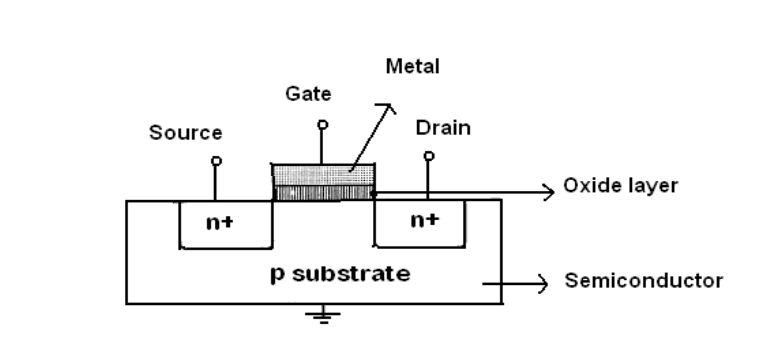
Silicon dioxide is a very good insulator, so a very thin layer, typically only a few hundred molecules thick, is used. In fact , the transistors which are used do not use metal for their gate regions, but instead use polycrystalline silicon (poly). Polysilicon gate FET's have replaced virtually all of the older devices using metal gates in large scale integrated circuits. (Both metal and polysilicon FET's are sometimes referred to as IGFET's (insulated gate field effect transistors), since the silicon dioxide under the gate is an insulator.
MOS Transistors are classified as n-MOS, p-MOS and c-MOS Transistors based on the fabrication.
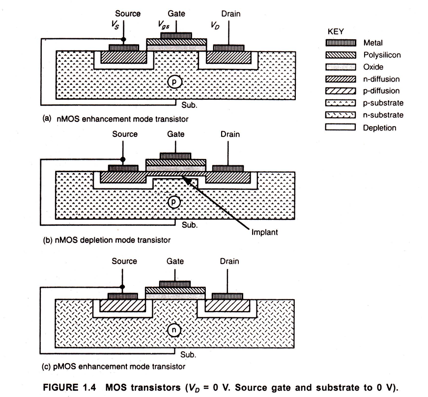
In an enhancement mode device a polysilicon gate is deposited on a layer of insulation over the region between source and drain. In the diagram below channel is not established and the device is in a non-conducting condition, i.e \( V_D = V_S = V_{gs} = 0 \). If this gate is connected to a suitable positive voltage with respect to the source, then the electric field established between the gate and the substrate gives rise to a charge inversion region in the substrate under the gate insulation and a conducting path or channel is formed between source and drain.
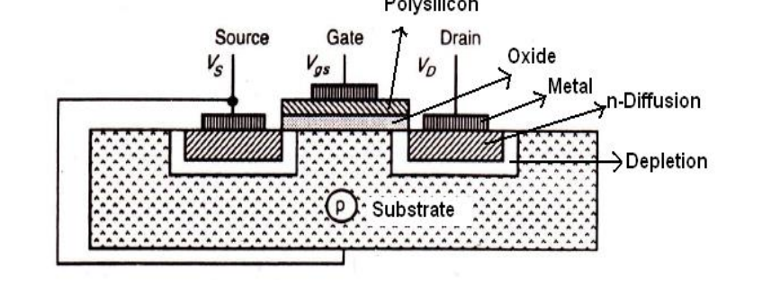
To understand the enhancement mechanism, let us consider the enhancement mode device. In order to establish the channel, a minimum voltage level called threshold voltage \( (V_t) \) must be established between gate and source. Fig. (a) Shows the existing situation where a channel is established but no current flowing between source and drain \( (V_{ds} = 0) \).
Let us now consider the conditions when current flows in the channel by applying a voltage \( V_{ds} \) between drain and source. The \( \text{IR drop} = V_{ds} \) along the channel. This develops a voltage between gate and channel varying with distance along the channel with the voltage being a maximum of \( V_{gs} \) at the source end. Since the effective gate voltage is \( V_g = V_{gs} - V_t \), (no current flows when \( V_{gs} < V_t \)) there will be voltage available to invert the channel at the drain end so long as \( V_{gs} - V_t \sim V_{ds} \). The limiting condition comes when \( V_{ds} = V_{gs} - V_t \). For all voltages \( V_{ds} < V_{gs} - V_t \), the device is in the non-saturated region of operation which is the condition shown in Fig. (b) below.
Let us now consider the situation when \( V_{ds} \) is increased to a level greater than \( V_{gs} - V_t \). In this case, an IR drop equal to \( V_{gs} - V_t \) occurs over less than the whole length of the channel such that, near the drain, there is insufficient electric field available to give rise to an inversion layer to create the channel. The .channel is, therefore, 'pinched off as shown in Fig. (c). Diffusion current completes the path from source to drain in this case, causing the channel to exhibit a high resistance and behave as a constant current source. This region, known as saturation, is .characterized by almost constant current for increase of \( V_{ds} \) above \( V_{ds} = V_{gs} - V_t \). In all cases, the channel will cease to exist and no current will flow when \( V_{gs} < V_t \). Typically, for enhancement mode devices, \( V_t = 1 \text{ volt} \) for \( V_{DD} = 5 \text{ V} \) or, in general terms, \( V_t = 0.2 V_{DD} \).
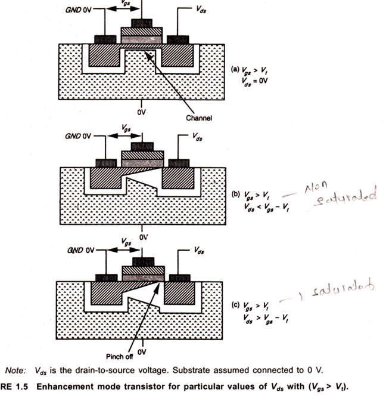
N-MOS Depletion mode mosfets are built with P-type silicon substrates, and P-channel versions are built on N-type substrates. In both cases they include a thin gate oxide formed between the source and drain regions. A conductive channel is deliberately formed below the gate oxide layer and between the source and drain by using ion-implantation. By implanting the correct ion polarity in the channel region during fabrication determines the polarity of the threshold voltage (i.e. \( -V_t \) for an N channel transistor, or \( +V_t \) for an P-channel transistor). The actual concentration of ions in the substrate-to-channel region is used to adjust the threshold voltage \( (V_t) \) to the desired value.
\( V_{td} \) is typically \( < - 0.8 V_{DD} \), depending on the implant and substrate bias, but, threshold voltage differences apart, the action is similar to that of the enhancement mode transistor.
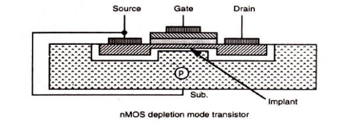
| Feature | Enhancement Mode | Depletion Mode |
|---|---|---|
| Channel Status at \( V_{gs} = 0 \) | Not established (Non-conducting) | Deliberately formed (Conducting) |
| Fabrication Complexity | Simpler (No ion implant needed) | Harder (Requires precise ion implantation) |
| Threshold Voltage (\( V_t \)) | Positive (e.g., \( V_t = 0.2 V_{DD} \)) | Negative (e.g., \( V_{td} < -0.8 V_{DD} \)) |
| Action to Turn OFF | Remove gate voltage (\( V_{gs} < V_t \)) | Apply negative gate voltage (\( V_{td} \)) |
Think of a MOS Transistor as a garden hose carrying water (current) from the faucet (Source) to the sprinkler (Drain), with your hand acting as the Gate.
This section breaks down how chip fabrication engineers “set” the threshold voltage \(V_T\) of a MOSFET by controlling the dopant ions near the channel. Let’s build it from zero.
For a MOSFET, the channel is the conducting path that forms between Source and Drain when the Gate voltage is sufficient.
So the channel's carrier type determines whether the transistor is N-channel or P-channel.
During fabrication, engineers physically put dopant atoms into the silicon. This is called ion implantation. Think of silicon as a huge grid of silicon atoms. Engineers shoot selected impurity ions into a very specific region.
| Dopant | Creates | Effect |
|---|---|---|
| Boron | P-type | Adds holes |
| Phosphorus/Arsenic | N-type | Adds electrons |
\(V_T\) = Threshold Voltage. It's approximately the minimum Gate-to-Source voltage needed to create a strong conducting channel.
For example, suppose an NMOS has \( V_T = 0.7V \):
Start with a P-type substrate. So near the surface we already have lots of holes (+). Now apply a positive gate voltage. The positive gate repels holes and attracts electrons toward the surface. Eventually, enough electrons gather there to create an inversion layer:
That electron layer is the N-channel.
Suppose engineers increase the P-type doping concentration underneath the gate. That means there are more acceptor ions/holes that must be overcome. The positive gate now has a harder job. It needs a higher voltage to attract enough electrons to create the inversion channel.
Conversely:
That's the basic reason doping is used to tune threshold voltage.
The sentence you're studying says: "Implanting the correct ion polarity in the channel region determines the polarity of the threshold voltage."
Be careful here. It doesn't simply mean: "Put positive ions → positive \(V_T\)". It's more subtle. The device structure and body/channel doping determine whether you're making NMOS or PMOS, and the implanted dopants modify the electrostatics and therefore the magnitude and sometimes effective polarity/sign of \(V_T\).
For normal enhancement-mode MOSFETs:
So the dose/concentration of implanted dopants is one of the fabrication knobs used to obtain the desired threshold voltage.
Imagine the Gate is trying to open a door. The channel is the door. The substrate doping determines how strongly the door is being held shut.
For an NMOS, threshold voltage can be represented approximately as:
Don't panic about the equation. 😄 The important part is \( N_A \), which represents the acceptor concentration in the P-type body. As \(N_A\) changes, the threshold voltage changes. So fabrication engineers can control \(N_A\) through ion implantation.
There are also other parameters affecting \(V_T\), such as Gate work function, Oxide thickness, Fixed oxide/interface charge, Body doping, Temperature, and Short-channel effects. So channel doping is important, but it isn't the only \(V_T\) control mechanism.
In normal human language: During MOSFET manufacturing, engineers deliberately add specific dopant atoms near the channel. The type of dopant establishes the required transistor behavior, while the amount of dopant changes how difficult it is for the gate to form the channel. Therefore, by controlling the dopant type and concentration, engineers can manufacture a MOSFET with the desired threshold voltage.
One-line exam version:
And the mental picture to remember is: Doping → changes charge in channel/body region → changes gate voltage required for inversion → changes \(V_T\).
An enhancement MOSFET starts with NO conducting channel between Source and Drain.
At \( V_{GS}=0 \), there is no N-channel, so \( I_D \approx 0 \). That's why it's called enhancement mode. The gate voltage has to create/enhance the channel.
For NMOS, apply a positive voltage to the gate. The positive gate attracts electrons toward the silicon surface underneath the oxide. As \(V_{GS}\) increases, more electrons gather near the surface. Eventually there are enough electrons to form an inversion layer.
The voltage at which this channel becomes sufficiently formed is called \( \boxed{V_T=\text{threshold voltage}} \).
If \( V_{GS} < V_T \), no proper channel. \( \boxed{I_D \approx 0} \)
If \( V_{GS} > V_T \), a channel exists. \( \boxed{I_D \text{ can flow}} \)
The amount of gate voltage above threshold is often called the effective or overdrive voltage: \( \boxed{V_{OV} = V_{GS} - V_T} \)
So far, we've created a channel, but suppose \( V_{DS}=0 \). There is no voltage pushing electrons from Source to Drain. Therefore \( \boxed{I_D=0} \) even though the channel exists. Think: Gate creates the road. \(V_{DS}\) provides the push along the road.
Now apply \( V_{DS} \). Current starts flowing from Drain to Source through the channel. But something interesting happens. The channel does not experience the same gate-to-channel voltage everywhere.
At the source end, the channel is approximately at \( V_S=0 \). If the gate is at \( V_G=3V \), then \( V_G - V_{channel} = 3V \). So the channel is strongly formed.
But as we move toward the drain, the channel voltage rises. Because the channel has resistance, whenever current flows through resistance, voltage drops (\(V=IR\)). The voltage gradually drops along the channel.
Therefore the gate-to-channel voltage gets smaller as you approach the drain.
The channel disappears at the drain when \( V_{GD} = V_T \). Since \( V_{GD} = V_{GS} - V_{DS} \), we get \( V_{GS} - V_{DS} = V_T \). Rearrange:
This is the boundary between the linear/non-saturated region and saturation.
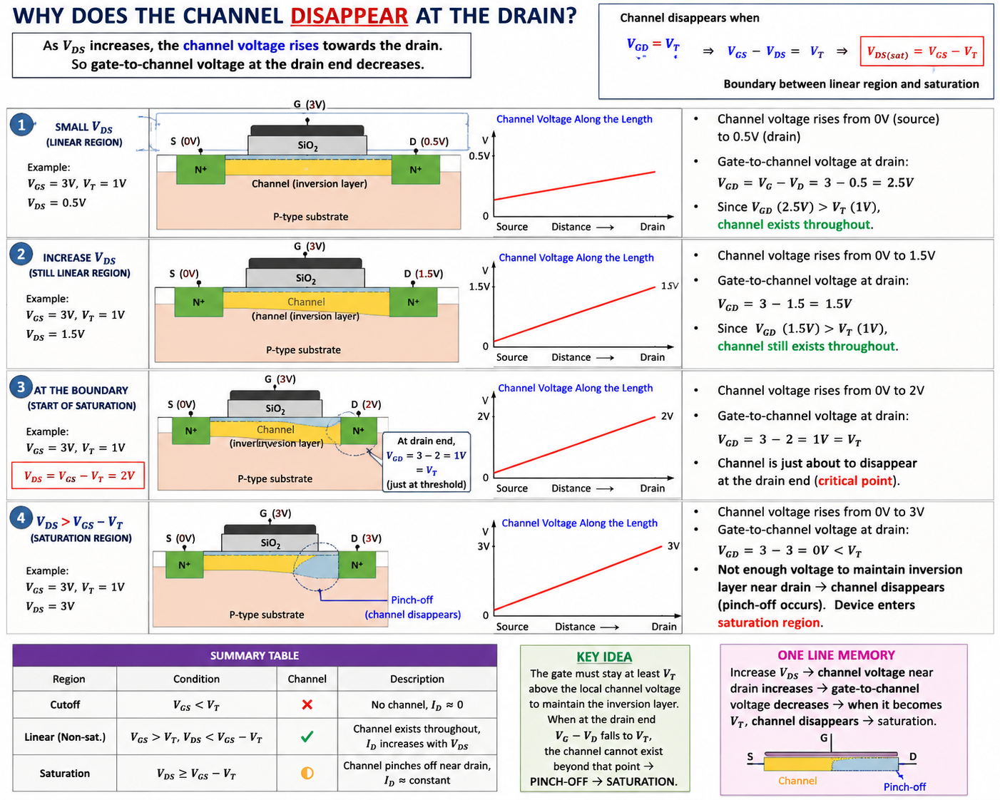
Electrons travel through the channel and are swept across the pinch-off/depletion region by the strong electric field toward the drain. So current continues.
Once \( V_{DS} \ge V_{GS} - V_T \), increasing \( V_{DS} \) further mostly increases the voltage across the pinch-off region rather than substantially increasing the channel charge. Therefore the drain current becomes approximately constant (\( I_D \approx \text{constant} \)).
| Condition | Channel | Region |
|---|---|---|
| \(V_{GS} < V_T\) | ❌ No channel | Cutoff |
| \(V_{GS} > V_T,\ V_{DS} < V_{GS}-V_T\) | ✅ Full channel | Linear / non-saturated |
| \(V_{GS} > V_T,\ V_{DS} \ge V_{GS}-V_T\) | ⚠️ Pinched near drain | Saturation |
The channel is deliberately created during fabrication using ion implantation. Therefore even when \( V_{GS}=0 \), the channel exists (\( I_D \neq 0 \)). To turn it OFF, for an NMOS, you apply a negative gate voltage to repel electrons from the channel. Therefore \( \boxed{V_T < 0} \) for an N-channel depletion MOSFET.
| Feature | Enhancement NMOS | Depletion NMOS |
|---|---|---|
| Channel at \(V_{GS}=0\)? | ❌ No | ✅ Yes |
| Normally | OFF | ON |
| Channel created by | Gate voltage | Fabrication/implantation |
| \(V_T\) | Positive | Negative |
| To turn ON | \(+V_{GS}\) | Already ON at 0 V |
| To turn OFF | Remove gate voltage | Apply sufficiently negative \(V_{GS}\) |
The sentence "Diffusion current completes the path from source to drain in this case..." is an older/less clear description of saturation. For the usual long-channel MOSFET explanation, the important picture is: The inversion channel pinches off near the drain, and carriers are swept through the high-field pinch-off region into the drain.
Comprehensive treatment of Czochralski single-crystal growth, wafer shaping, thermal oxidation kinetics (\(x_{Si} = 0.44 x_{ox}\)), silicon nitride (\(Si_3N_4\)), physical vapor deposition (PVD & sputtering), photolithography, yield models (\(Y = e^{-NDA}\)), and wet vs dry etching. Sze & Lee Chapters 11–13, Weste & Harris §1.5.2, §3.2.7.
Integrated circuit fabrication commences with Electronic-Grade Silicon (EGS) melted at 1412°C and pulled into a defect-free single-crystal ingot using the Czochralski technique. The sliced, lapped, and polished wafers then undergo sequential unit processes: thermal oxidation, dielectric deposition, optical photolithography, selective etching, and metallization to construct multi-level planar CMOS devices.
"Acha bro 😂 You jumped from transistor-level stuff to wafer manufacturing! This unit explains how we go from raw quartzite rock to a mirror-polished semiconductor wafer. Before building a single transistor, we need an ultra-pure, defect-free single-crystal substrate. Ingot growth theke shuru kore diamond-saw slicing, lapping, flats identification ar chemical-mechanical polishing porjonto step-by-step bujhbo."
The Czochralski (CZ) technique uses an apparatus called a crystal puller to grow an enormous, single continuous crystal from molten silicon. The puller consists of three primary subsystems:
Contains a fused-silica (\(SiO_2\)) crucible supported by a graphite susceptor and radio-frequency or resistance heating elements. Electronic-grade polycrystalline silicon (EGS) is melted at \(1412^\circ\text{C}\). The crucible rotates clockwise during growth to eliminate localized thermal variations.
Holds a precisely oriented seed crystal (e.g., \(\langle 111 \rangle\) or \(\langle 100 \rangle\)). The seed is dipped into the melt surface and slowly withdrawn while rotating counter-clockwise. Molten silicon solidifies onto the seed tip, replicating its crystal template through progressive freezing.
High-purity argon gas is continuously flushed to prevent molten silicon oxidation and remove volatile SiO species. Desired conductivity and doping concentration (n-type or p-type) are established by adding heavily doped silicon pellets directly to the melt prior to pulling.
Silicon ingot weight and wafer diameter have scaled aggressively to reduce per-unit-area processing costs: modern industrial production utilizes 300 mm (12 in.) and 450 mm (18 in.) diameter crystals weighing up to 450 kg.
Once the single-crystal cylinder is pulled, it undergoes five mechanical and chemical shaping steps:
For wafers under 200 mm, primary and secondary flats are ground along the perimeter. The primary flat aligns the wafer in automated handling tools, while the relative position of the secondary flat marks the crystal plane and conductivity type.
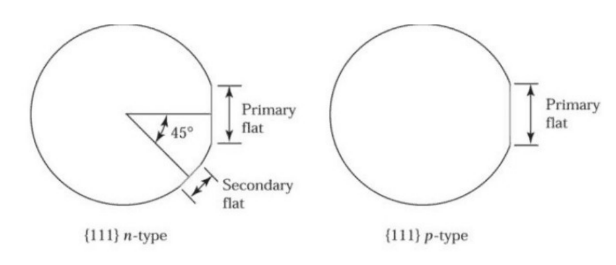
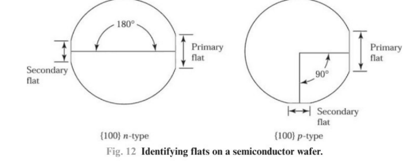
| Crystal Orientation | Conductivity Type | Primary Flat | Secondary Flat Position | Angle Relative to Primary |
|---|---|---|---|---|
| {111} | n-type | Yes (Bottom / Side) | Present | 45° clockwise from primary flat |
| {111} | p-type | Yes | None (Primary flat only) | No secondary flat |
| {100} | n-type | Yes | Present | 180° directly opposite primary flat |
| {100} | p-type | Yes | Present | 90° clockwise from primary flat |
| ≥ 200 mm Wafers | All Types | No Flats | Edge Notch / Groove | Replaced by small edge notch to prevent silicon real-estate waste |
The variation in wafer thickness measured from one end of the wafer to the other end.
The overall curvature of the wafer surface measured from the geometric center to its outer edge.
GaAs is significantly more brittle and fragile than silicon. Shaping requires greater mechanical care, and GaAs thermal oxides provide poor electrical insulation.
Steps for Silicon Wafer Preparation [5 Marks]:
1. Crystal Growth: Pull single-crystal cylindrical ingot from electronic-grade silicon melt at 1412°C using Czochralski technique.
2. Ingot Shaping: Remove seed/tail ends, grind diameter, and grind orientation flats or edge notch.
3. Wafer Slicing: Slice ingot into wafers using an inner-diameter diamond saw.
4. Lapping & Chemical Etching: Lap both sides with \(Al_2O_3\)/glycerine to achieve ±2 μm flatness, then chemically etch to eliminate surface lattice damage.
5. Polishing: Chemical-mechanical polish (CMP) to create a specular, mirror finish for lithography.
Select the crystal orientation and conductivity doping type to visualize the exact SEMI flat specifications used in fabrication.
"Bujhte hobe thermal oxidation silicon ke 'khaye' (consumes substrate silicon), kintu CVD deposition upore extra layer boshiye dey. Tarpor Silicon Nitride holo oxidation-er shobcheye boro dushman: nitride thakle niche oxygen penetrate korte pare na, jar jonno LOCOS ar STI te nitride ke oxidation mask hishabe use kora hoy!"
Thermal oxidation is the premier method for synthesizing high-purity, uniform silicon dioxide (\(SiO_2\)) dielectric films. The process is performed in resistance-heated quartz furnaces at 900°–1200°C shown in Figure 2.
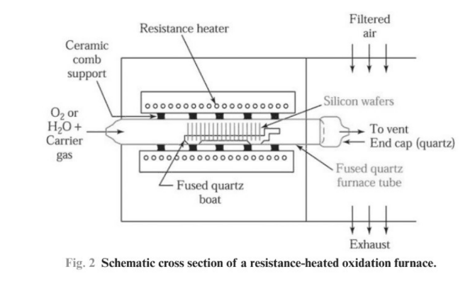
Thermal oxidation does not deposit material on top of silicon; it reacts directly with substrate silicon atoms. As oxidant molecules diffuse through the existing oxide, the \(Si-SiO_2\) interface moves downward into the bulk wafer:
To grow an oxide layer of total thickness \(x_{ox}\), exactly 44% of that thickness is consumed from the underlying single-crystal silicon. The remaining 56% expands upward above the original silicon plane.
Silicon nitride cannot be grown efficiently by direct thermal nitridation because of slow growth rates and excessive temperatures. Instead, it is deposited via CVD. Figure 1 illustrates a completed modern MOSFET showing the gate oxide, polysilicon gate, \(SiO_2\) inter-layer dielectric, Al contacts, and final \(Si_3N_4\) passivation film.
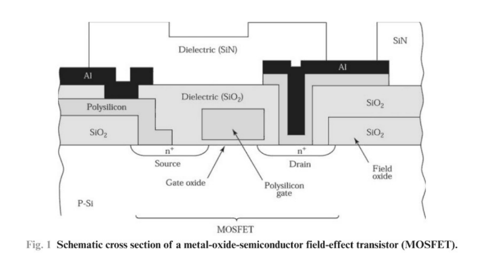
| Deposition Method | Temperature | Chemical Reaction | Film Density & Stress | Key Advantages & Trade-offs |
|---|---|---|---|---|
| LPCVD (Low-Pressure CVD) |
700°–800°C | $$3\text{SiCl}_2\text{H}_2 + 4\text{NH}_3 \rightarrow \text{Si}_3\text{N}_4 + 6\text{HCl} + 6\text{H}_2$$ | Dense stoichiometric \(Si_3N_4\) (\(2.9\text{--}3.1\text{ g/cm}^3\)) Very high tensile stress (\(10^{10}\text{ dyn/cm}^2\)) |
Oxidation Mask & Sidewall Spacer: Impermeable to \(O_2\). Must be kept < 200 nm to avoid cracking. Incompatible with Al metallization. |
| PECVD (Plasma-Enhanced CVD) |
~300°C | $$\text{SiH}_4 + \text{NH}_3 \xrightarrow{300^\circ\text{C}} \text{SiNH} + 3\text{H}_2$$ | Non-stoichiometric SiN (\(2.4\text{--}2.8\text{ g/cm}^3\)) Low tensile stress (\(2\times 10^9\text{ dyn/cm}^2\)) |
Final Passivation Barrier: Low thermal budget allows deposition over Al interconnects. Blocks moisture & \(Na^+\). Contains 20–25% H (can degrade hot-carrier lifetime). |
Use of Silicon Nitride in IC Fabrication [2 Marks]:
1. Oxidation Mask: Nitride oxidizes extremely slowly, acting as an impermeable barrier during selective oxidation (LOCOS and STI).
2. Device Passivation: Deposited via PECVD at 300°C as the final overcoat to prevent moisture penetration, block mobile sodium ion (\(Na^+\)) diffusion, and provide scratch protection.
Problem with Aluminum Metal Gate [2 Marks]:
Al melts at 660°C, preventing high-temperature S/D dopant drive-in after gate formation. This forced gate deposition after diffusion, requiring alignment margins that increased overlap parasitic capacitance (\(C_{gd}, C_{gs}\)) and wasted area. Polysilicon survives high temperatures and enables self-aligned architectures.
Calculate how much single-crystal silicon is consumed and how much oxide expands above the original wafer plane for any target \(SiO_2\) thickness.
"Sputtering ki? Ekta billiard table er moto! Argon ions gulo high voltage die metal target ke guriye mare, ar momentum transfer er madhyome metal atoms target theke chite eshe wafer er upor pore. R deep contact hole fill korar jonno amra Long-throw ba Collimated sputtering use kori jate atoms gulo sidewall e na lege sojashuji bottom e pouche."
PVD is used to deposit conductive lines, barrier layers, pads, and contact plugs (Al, Cu, Ti, TiN, TaN). While early IC generations utilized thermal or electron-beam evaporation, modern ULSI employs DC and Magnetron Sputtering due to superior step coverage and film adhesion.
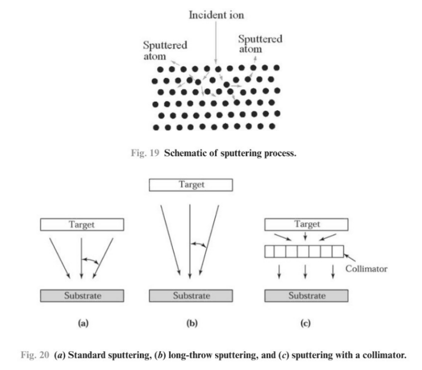
The Sputtering Sequence:
| Method | Physical Mechanism | Chamber Pressure & Distance | Via / Contact Filling Capability |
|---|---|---|---|
| Standard Sputtering (Figure 20a) |
Wide cosine angular distribution of ejected metal atoms. Atoms strike wafer from all angles. | Moderate pressure (~1 Pa) Short throw distance (\(d_{ts}\)) |
Poor for high aspect ratios (\(h/w > 2\)): top opening seals prematurely (cusping), creating voids. |
| Long-Throw Sputtering (Figure 20b) |
Wafer is moved far from target (\(d_{ts} \approx \text{cathode diameter}\)). Oblique atoms hit chamber walls; only near-normal atoms reach the wafer. | Very low pressure (< 0.1 Pa) Large throw distance (\(d_{ts}\)) |
Significantly enhanced bottom coverage in high-aspect contact holes due to near-vertical atom trajectory. |
| Collimated Sputtering (Figure 20c) |
A honeycomb collimator grid is inserted between target and substrate. Atoms arriving at oblique angles are intercepted by cell walls. | Mean free path > throw distance | Filters flux geometrically: only highly collimated, perpendicular metal atoms pass through to the via floor. |
Metals Used for Metallization [2 Marks]:
Aluminum (Al), Copper (Cu), Titanium (Ti), Titanium Nitride (TiN, diffusion barrier), and Tantalum Nitride (TaN).
Evaporation vs Sputtering [5 Marks]:
• Evaporation: Metal is heated in high vacuum until it boils/sublimes. Atoms travel in line-of-sight paths. Limited alloy composition control, poor step coverage on high-aspect vias.
• Sputtering: Target is bombarded by \(Ar^+\) ions; atoms are dislodged by mechanical momentum transfer (billiard ball action). Better adhesion, superior alloy control, and capability for directional collimation.
"Lithography decide kore wafer er kothay transistor, via, contact hole ar metal interconnect boshbe, ar Etching physically shei material kete layer e form kore! Imagine an entire silicon wafer holding hundreds of individual chips, each packed with millions of microscopic features. Manually drawing each transistor is physically impossible. Tai amra layout mask banai, radiation die pattern resist layer e print kori, tarpor etching die underlying material e transfer kori. Mask kintu silicon kote na — mask resist k pattern kore, ar resist shield hishebe kaj kore etch korar shomoy!"
A single silicon wafer contains hundreds of integrated circuits, each requiring millions of miniature components. Lithography transfers the geometric layout pattern from a mask onto a thin layer of radiation-sensitive photoresist covering the wafer:
Contains the desired geometric circuit pattern fabricated onto a fused-silica/chromium plate.
UV light, X-rays, or electron beams shine through the transparent regions of the mask, altering the chemical solubility of the resist.
Chemical solvent dissolves exposed (positive resist) or unexposed (negative resist) areas, leaving a relief stencil on the wafer.
The underlying layer (\(SiO_2\), poly-Si, metal) is etched through the open stencil. The resist shields the protected zones.
To ensure uniform pattern replication across a wafer, photoresist must be deposited as an ultra-thin, planar film with uniform thickness. This is performed using a machine called a Spinner.
A controlled volume of viscous liquid photoresist is precisely dispensed onto the wafer surface.
The wafer is held securely by a vacuum chuck and rotated at several thousand revolutions per minute. Centrifugal effects spread the liquid uniformly over the surface.
Excess resist is flung off, solvent evaporates rapidly, leaving an ultra-thin film (0.5–2 μm). Final thickness is governed by spin speed and resist viscosity.
Question: What is the use of a spinner? [2 Marks]
A spinner rotates a photoresist-coated wafer at several thousand revolutions per minute to spread liquid photoresist into a thin film of reasonably uniform thickness. The resulting film thickness depends on spin speed and resist viscosity. Uniformity is critical: printing tiny patterns through variable resist thickness leads to unpredictable exposure and etching variations across the wafer.
Lithography operates at sub-micron and nanoscale dimensions. A microscopic airborne particle sitting on the wafer or mask obstructs radiation, distorts the pattern, or causes fatal circuit defects. A single defect on a photomask replicates across every exposed die field on every wafer processed!
"Bhabo paper e khub chhotto akta letter 'e' likhcho. Tar upor akta balir kona pore gele letter ta purapuri bhenge jabe ba pore bujha jabe na! Wafer e transistor er size dust er thekeo onek choto. Mask er upor akta dust particle thakle repeated exposure e shob chip e defect choriye jabe."
| Parameter | Meaning | Why It Matters |
|---|---|---|
| Resolution | The minimum feature size that can be transferred with high fidelity. | Determines how small the patterns and transistors can be. |
| Registration | How accurately patterns from successive masks align with earlier patterns. | Prevents contacts, vias, and other features from being misplaced or shorted. |
| Throughput | Number of wafers exposed per hour for a given mask level. | Determines manufacturing processing productivity and commercial wafer cost. |
Both optical lithography techniques expose resist using radiation passing through a patterned mask, but the separation between the mask and wafer differs fundamentally:
The mask physically touches the resist-coated wafer during exposure.
• Resolution: Approximately \(1\,\mu\text{m}\) due to virtually zero mask-to-wafer gap.
• Fatal Problem: Contamination and damage! A dust particle caught between the wafer and mask damages the mask. That damaged spot then creates permanent defects during all subsequent exposures.
The mask is held a small distance away from the wafer, typically \(10\) to \(50\,\mu\text{m}\).
• Benefit: Reduces direct contact and avoids mask damage.
• Diffraction Flaw: When light passes the edge of an opaque mask feature, it diffracts into the shadow region. The resulting exposure pattern is less sharply defined, limiting resolution to approximately \(2\) to \(5\,\mu\text{m}\).
Where \(CD\) is the approximate minimum printable linewidth (Critical Dimension), \(\lambda\) is exposure radiation wavelength, and \(g\) is the mask-to-wafer gap (inclusive of resist thickness). Increasing either \(\lambda\) or \(g\) makes printable features larger.
Example 1: Standard Proximity Printing
Given: \(\lambda = 0.4\,\mu\text{m}\), \(g = 50\,\mu\text{m}\).
$$CD \cong \sqrt{0.4 \times 50} = \sqrt{20} \cong \mathbf{4.47\,\mu\text{m} \approx 4.5\,\mu\text{m}}$$
Example 2: Reduced Wavelength & Narrow Gap
Given: \(\lambda = 0.25\,\mu\text{m}\), \(g = 15\,\mu\text{m}\).
$$CD \cong \sqrt{0.25 \times 15} = \sqrt{3.75} \cong \mathbf{1.94\,\mu\text{m} \approx 2\,\mu\text{m}}$$
Units check: \(\lambda g\) has units of \(\mu\text{m}^2\), and \(\sqrt{\lambda g}\) gives \(\mu\text{m}\).
Physical Takeaway: Shorter wavelength and smaller gap allow finer shadow-printed features under this approximation.
Contact and proximity printing expose the resist using the mask's shadow. Projection printing instead uses an optical system to project an image of the mask onto the wafer. The mask and wafer can be separated by a much larger distance (centimeters), completely avoiding direct-contact damage.
A small chip-sized or field-sized image is projected onto one wafer location. Then the wafer moves to the next location, and the process repeats (stamping one region at a time until the entire wafer is covered). Supports \(1:1\) and reduced-image projection.
The wafer moves continuously in two dimensions while the mask translates in one dimension. In an \(M:1\) reduction system, the mask speed is \(M\) times the wafer speed. The system scans a narrow image slit across the wafer field.
In projection printing systems, optical resolution is governed by the Rayleigh Criterion:
Where \(l_m\) is projection-system resolution (minimum feature dimension), \(k_1\) is a process-dependent factor, \(\lambda\) is exposure wavelength, and \(NA\) is numerical aperture.
The source defines numerical aperture as:
$$\mathbf{NA = \sin\theta = \sin\left(\tan^{-1}\frac{D}{2f}\right) \approx \frac{D}{2f}}$$Here, \(D\) is lens aperture diameter and \(f\) is focal length. Numerical aperture describes the angular range of light that the optical system can collect or project. The larger the usable angle, the finer a pattern the system resolves. Core Trend: Shorter wavelength \(\lambda\) and larger \(NA\) improve projection resolution.
A photomask contains the pattern for one level of the IC design. Different process steps need different patterns, so a complete IC fabrication process uses roughly 15 to 20 mask levels.
The mask uses a fused-silica substrate covered by chromium. A pattern is first written into an electron-sensitive resist and then transferred into the chromium layer. Fused silica is chosen for its low thermal expansion, high transmission at shorter wavelengths, and mechanical strength.
A defect prevents a feature from printing correctly, making the chip unusable. Yield \(Y\) is the ratio of good chips to total chips. Assuming random fatal defects with density \(D\) per unit area and chip area \(A\), single-level yield is \(Y \cong e^{-DA}\).
For \(N\) mask levels, assuming the same defect density at each level.
Given: Defect density \(D = 0.25\text{ defects/cm}^2\), Mask levels \(N = 10\).
Part 1: Standard Chip (\(A = 90\text{ mm}^2 = 0.9\text{ cm}^2\))
$$Y \cong e^{-10(0.25)(0.9)} = e^{-2.25} \approx \mathbf{0.1054 \approx 10.5\%}$$
Part 2: Doubled Chip Area (\(A = 180\text{ mm}^2 = 1.8\text{ cm}^2\))
$$Y \cong e^{-10(0.25)(1.8)} = e^{-4.5} \approx \mathbf{0.0111 \approx 1.1\%}$$
Physical Consequence: Doubling the chip area causes yield to crash by a factor of 10 (from 10.5% down to 1.1%). This illustrates why clean processing and rigorous mask inspection are paramount.
Electron-beam lithography is primarily used to produce photomasks. Instead of projecting a light image through a mask, a focused electron beam writes the pattern directly into an electron-sensitive resist.
• Produces nanoscale resist geometries.
• Precise computer control.
• Writes patterns directly without using a mask during direct-write operation.
• Offers greater depth of focus than optical lithography.
Because the electron beam writes patterns sequentially in a targeted way, covering an entire wafer is slow: approximately two wafers per hour at resolutions below \(100\,\text{nm}\). This makes E-beam lithography ideal for mask creation, small numbers of custom circuits, and design verification, but unsuitable for high-throughput maskless production.
"Lithography creates the stencil — Etching physically transfers that stencil into the material underneath! Bhabo wafer er upor \(SiO_2\) layer ache, ar amra niche silicon substrate porjonto contact hole banate chai. First, lithography photoresist e opening toiri kore. Tarpor etching die khola \(SiO_2\) kete deya hoy, jar shomoy photoresist baki shob jaiga protect kore. Wet chemical etching isotropic (shob dike shoman bhabe kate), jar karone mask er tolay undercut hoye size nosto hoye jaye! Tai deep sub-micron VLSI te amra Dry Plasma Etching use kori, jar Degree of Anisotropy \(A_f = 1\) (sharp vertical sidewalls without undercut)."
Suppose a wafer is covered with silicon dioxide (\(SiO_2\)), and we require a contact hole that reaches the silicon below it:
Wet chemical etching relies on liquid phase reagents. The fundamental etch mechanism proceeds through three mandatory sequential steps:
Chemical etchant reactants in the bulk liquid move to the wafer surface via molecular diffusion across the boundary layer.
Reagents react chemically with the exposed solid material, converting it into soluble products.
Reaction byproducts dissolve and diffuse away from the surface into the bulk solution so fresh etchant can reach the interface.
"Bhabo akta cleaning crew akta surface porishkar korche: 1. Prothome cleaner chemical ke surface porjonto pouchate hobe (Transport in), 2. Tarpor chemical ke moila/material er shathe reaction korte hobe (Reaction), 3. Tarpor reacted moila shekhan theke shoriye nite hobe (Transport out), nahole notun chemical surface e chuatei parbe na! Ei 3 tar moddhe jeta shobcheye slow, shetai overall etch rate determine korbe."
The wafer is submerged directly into a wet chemical bath. Mechanical agitation (nitrogen bubbling or ultrasonic megasonics) is required to maintain etch consistency, but local stagnation often leads to variations.
Fresh etchant solution is continuously atomized and sprayed onto the rotating wafer surface. This dynamic renewal dramatically improves etch rate and cross-wafer uniformity, largely replacing static immersion baths.
Industrial wafer etching defines etch-rate uniformity across multiple radial test sites:
Where \(R_{\max}\) is maximum measured etch rate and \(R_{\min}\) is minimum measured etch rate.
Crucial Math Note: Notice that the denominator is the sum \((R_{\max} + R_{\min})\), not the average rate! Under this definition, a smaller percentage signifies superior uniformity across the wafer.
Problem: A 300 mm wafer has the following measured Aluminum etch rates at 5 locations:
• Centre: \(750\,\text{nm/min}\)
• Left: \(812\,\text{nm/min}\)
• Right: \(765\,\text{nm/min}\)
• Top: \(743\,\text{nm/min}\)
• Bottom: \(798\,\text{nm/min}\)
Part A: Calculate Average Etch Rate (\(R_{\text{avg}}\)):
$$R_{\text{avg}} = \frac{750 + 812 + 765 + 743 + 798}{5} = \frac{3868}{5} = \mathbf{773.6\,\text{nm/min}}$$
Part B: Calculate Etch-Rate Uniformity (\(U\)):
Identify extremes: \(R_{\max} = 812\,\text{nm/min}\), \(R_{\min} = 743\,\text{nm/min}\).
$$U = \frac{812 - 743}{812 + 743} \times 100\% = \frac{69}{1555} \times 100\% \approx \mathbf{4.44\% \approx 4.4\%}$$
Exam Presentation Tip: Write down formula, identify \(R_{\max}\) and \(R_{\min}\), substitute correctly, and include the percentage sign (%)!
Wet chemical etching of semiconductor silicon fundamentally involves oxidation followed by dissolution of the oxide. The etchant is a mixture of nitric acid (\(HNO_3\)) and hydrofluoric acid (\(HF\)), diluted with water or acetic acid.
Step 1: Nitric acid (\(HNO_3\)) oxidizes the exposed silicon into solid silicon dioxide (\(SiO_2\)).
Step 2: Hydrofluoric acid (\(HF\)) simultaneously dissolves and complexes the resulting \(SiO_2\) into soluble \(H_2SiF_6\).
The fatal limitation of wet chemical etching on amorphous or polycrystalline thin films is that it is purely isotropic — the lateral etch rate (\(R_l\)) approximately equals the vertical etch rate (\(R_v\)).
Material is dissolved sideways beneath the photoresist at the same rate as downwards. This creates a severe circular undercut. The etched trench becomes wider than the mask opening, making features < 3 μm impossible to control.
Energetic ions accelerated vertically by an electric field bombard the wafer surface. Material is removed preferentially in the vertical direction with negligible sideways etching, producing crisp vertical sidewalls that mirror the resist pattern with high fidelity.
The directional fidelity of an etching process is quantified by the Degree of Anisotropy (\(A_f\)):
Where \(h_f\) is film thickness being etched, \(l\) is lateral undercut beneath the mask, \(R_l\) is lateral etch rate, and \(R_v\) is vertical etch rate.
If etching proceeds for a duration \(t\), the lateral undercut is \(l = R_l \cdot t\) and the vertical etch depth is \(h_f = R_v \cdot t\). Therefore:
$$\frac{l}{h_f} = \frac{R_l \cdot t}{R_v \cdot t} = \frac{R_l}{R_v}$$
The etching duration \(t\) cancels out completely!
| Case | Condition | Degree of Anisotropy (\(A_f\)) | Physical Meaning |
|---|---|---|---|
| Case 1: Purely Isotropic | \(R_l = R_v\) | $$\mathbf{A_f = 1 - \frac{R_v}{R_v} = 0}$$ | Lateral etch equals vertical etch. Severe circular undercut. Typical of wet chemical baths. |
| Case 2: Partially Anisotropic | \(0 < R_l < R_v\) | $$\mathbf{0 < A_f < 1}$$ | Slanted or tapered sidewalls. Acceptable for non-critical wide contacts or bonding pads. |
| Case 3: Ideal Vertical Etch | \(R_l = 0\) | $$\mathbf{A_f = 1 - \frac{0}{R_v} = 1}$$ | Zero lateral undercut. Perfect 90° vertical profiles. Mandatory for deep sub-micron CMOS gates and vias. |
Problem: An etching process has a measured lateral etch rate \(R_l = 20\,\text{nm/min}\) and a vertical etch rate \(R_v = 100\,\text{nm/min}\). Calculate the degree of anisotropy.
Solution:
$$A_f = 1 - \frac{R_l}{R_v} = 1 - \frac{20}{100} = 1 - 0.20 = \mathbf{0.80}$$
Interpretation: The lateral etch rate is only one-fifth (\(20\%\)) of the vertical etch rate. A value approaching 1 confirms highly directional, vertically dominated anisotropic etching.
Adjust the lateral etch rate \(R_l\) relative to a fixed vertical etch rate \(R_v = 100\text{ nm/min}\) to see the etch profile morph from purely isotropic (\(A_f = 0\)) to perfectly anisotropic (\(A_f = 1\)).
Definition: Lithography is the process of transferring geometric patterns from a mask to a thin, radiation-sensitive resist layer covering a semiconductor wafer.
10 Essential Requirements & Characteristics:
A spinner rotates a photoresist-coated wafer at several thousand revolutions per minute to spread liquid photoresist into a thin, reasonably uniform film. Film thickness depends on spin speed and resist viscosity.
Electron-beam lithography is primarily used to write patterns into an electron-sensitive resist on a fused silica substrate. The pattern is then transferred to the underlying chromium layer to form the finished photomask.
Given \(R_l = 20\,\text{nm/min}\) and \(R_v = 100\,\text{nm/min}\):
$$A_f = 1 - \frac{R_l}{R_v} = 1 - \frac{20}{100} = \mathbf{0.80}$$
The etching is highly anisotropic because the vertical etch rate exceeds the lateral etch rate by \(5\times\).
"Old thermal diffusion furnace-e dopant atoms high temperature-e random bhabe surface die diffuse korto, jar karone lateral spread khub beshi hoto ar exact boundary pawa jeto na. Ion Implantation holo dopant atoms ke subatomic 'bullet' banie high voltage acceleration die wafer-er modhye shoot kora! Analyzing magnet die pure mass select kora hoy, jar fole 100% exact depth ar dopant count pawa jaye. Modern CMOS fab-e shob narrow region doping ion implantation die kora hoy!"
To fabricate MOSFETs, specific regions of silicon must be doped n-type or p-type with precise dopant quantities. Ion implantation introduces energetic charged dopant ions into the semiconductor lattice. Incoming ions penetrate the silicon crystal, collide with electrons and host nuclei, shed kinetic energy, and come to rest at a controlled average depth.
Energy ranges from 300 eV to 5 MeV, producing average penetration depths ranging from 10 nm to 10 μm. Accelerating voltage precisely governs depth.
Dose ranges from \(10^{12}\text{ ions/cm}^2\) (for MOSFET \(V_T\) adjustment) to \(10^{16}\text{ ions/cm}^2\) (for buried insulating oxide layers or source/drain formation).
Basic CMOS uses 15 to 17 ion implants. Leading-edge CMOS uses 20 to 23 implants, and specialized memories (Flash/EEPROM) use up to 30 implantation steps!
Expressed in \(\text{ions/cm}^2\) (surface area concentration), not \(\text{ions/cm}^3\) (volume concentration). Monitored beam current \(I_{\text{ion}}\) and exposure time \(t\) deliver exact electrical control.
Figure 13 illustrates the beamline architecture of a commercial ion implantation system. To prevent unwanted beam collisions and scattering by gas molecules, the entire interior is maintained at ultra-high vacuum: below \(10^{-4}\text{ Pa}\).
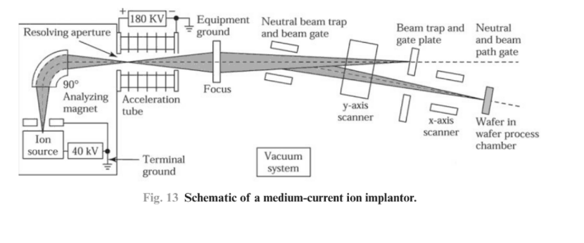
A heated tungsten filament produces electron impact that breaks up source gases (\(BF_3\) for boron, \(AsH_3\) for arsenic, \(PH_3\) for phosphorus) into charged dopant ions (\(B^+, As^+, P^+\)).
An extraction voltage of ~40 kV extracts positive ions into a 90° magnetic analyzer. The magnetic field \(B\) bends ions into a circular arc: $$\mathbf{R = \frac{1}{B}\sqrt{\frac{2mV}{q}}}$$ Only ions with the exact desired mass-to-charge ratio pass through the resolving aperture, filtering out all impurities and unwanted isotopes!
Selected ions enter a multi-electrode column and accelerate from high voltage to ground, acquiring final kinetic energy (300 eV to 5 MeV). Apertures ensure the beam is tightly collimated.
Orthogonal X and Y electrostatic deflection plates scan the focused ion beam across the entire wafer surface with high frequency, achieving exceptional cross-wafer dose uniformity (±1%).
Ions lose energy via nuclear and electronic stopping, coming to rest in a Gaussian profile with projected range \(R_p\) and straggle \(\Delta R_p\): $$N(x) = \frac{\Phi}{\sqrt{2\pi}\Delta R_p} \exp\left(-\frac{(x - R_p)^2}{2\Delta R_p^2}\right)$$
Why is Post-Implant Annealing Mandatory?
Energetic ion collisions violently displace host silicon atoms from their crystalline positions, creating point defects, dislocation loops, and at high doses amorphizing the lattice. Furthermore, as-implanted dopants reside primarily in interstitial sites where they are electrically inactive. A subsequent Rapid Thermal Annealing (RTA) treatment (900°–1050°C for 10–30 seconds) heats the wafer under controlled inert atmosphere to recrystallize the damaged lattice and drive dopant atoms into substitutional sites, making them electrically active.
Question: Name the doping technique for controlled doping in a narrow region. [2 Marks]
Answer: Ion Implantation. It is a doping technique in which energetic charged dopant ions are accelerated by an electric field and directed into a semiconductor substrate. It offers precise and reproducible control over dopant dose and penetration depth, operates at a lower processing temperature than diffusion, and is followed by annealing to repair implantation-induced lattice damage.
From wafer oxidation to self-aligned sub-micron transistor synthesis. Weste & Harris §1.5.2 & §3.2.3–3.2.4.
Think of silicon as the land where we build our transistors. Silicon dioxide (\(\text{SiO}_2\)) is the deliberate, high-purity insulating layer we create on that land.
"Unlike competing materials (like GaAs or Germanium), silicon has dominated the semiconductor industry because it possesses an easily processable, high-quality native oxide that can be thermally grown and chemically etched with extreme precision."
Situated directly between the polysilicon gate and the silicon channel. Must be ultra-thin (a few nanometers) and defect-free to maximize gate capacitance and electrostatic control over channel inversion.
Required for I/O buffers and higher operating voltage transistors to prevent dielectric breakdown under elevated electric fields.
Grown between active device areas. Heavily attenuates fringing electric fields beneath polysilicon and metal interconnects, preventing unintentional parasitic transistor formation.
| Method | Atmosphere & Temp | Growth Rate | Quality & Primary Application |
|---|---|---|---|
| Wet Oxidation | Water vapor (\(\text{H}_2\text{O}\) vapor / pyrogenic \(2:1\ \text{H}_2:\text{O}_2\)) 900 – 1000 °C |
Rapid | Porous, lower dielectric quality. Ideal for growing thick field oxides and masking layers. |
| Dry Oxidation | Pure dry Oxygen (\(\text{O}_2\)) ≈ 1200 °C |
Slow & Highly Controlled | Highest density and electrical breakdown quality. Used for critical thin gate oxides. |
| Atomic Layer Deposition (ALD) | Alternating chemical precursor pulses (Precursor A then Precursor B) Lower Temp (200 – 400 °C) |
Very Slow (Atomic Layer by Layer) | Perfect atomic conformality, pinhole-free high-\(\kappa\) dielectrics and gate stacks. |
Thermal oxidation consumes silicon wafer material! The reaction \(\text{Si} + \text{O}_2 \rightarrow \text{SiO}_2\) incorporates silicon atoms from the substrate.
Because \(\text{SiO}_2\) occupies roughly twice the molar volume of silicon (\(\approx 2.2\times\)), the grown oxide expands both upwards and downwards:
In contrast, ALD and chemical vapor deposition (CVD) are purely additive: they deposit layers atop the wafer without consuming the underlying silicon crystal!
A CMOS inverter requires both an nMOS (requires p-type body) and a pMOS (requires n-type body) on a single wafer. Four primary CMOS technologies evolved to solve this substrate sharing problem:
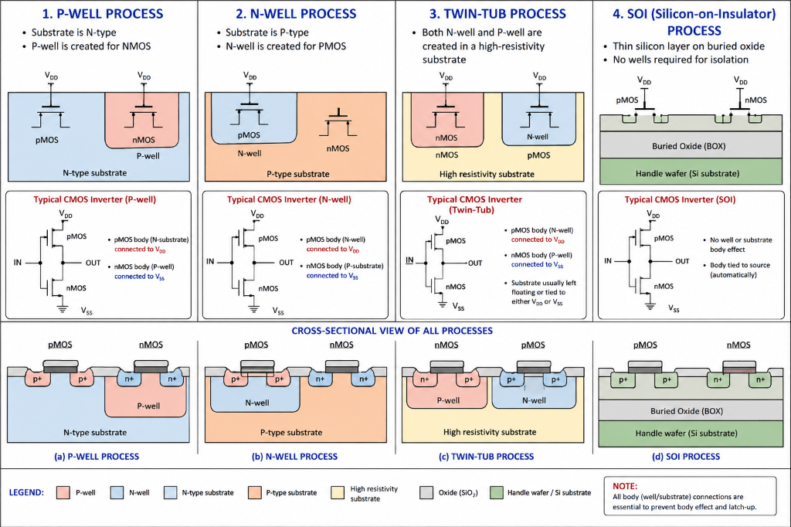
• Starts with p-type silicon wafer.
• nMOS is built directly in the p-substrate.
• pMOS is fabricated inside an implanted/diffused n-well.
• Advantage: Excellent nMOS performance; easy retrofit to legacy nMOS fab lines.
• Limitation: All nMOS share the same substrate body, coupling digital switching noise into substrate.
• Starts with n-type silicon wafer.
• pMOS is built in the n-substrate; nMOS inside a diffused p-well.
• Historically used to optimize pMOS performance, but superseded because nMOS electrons have 2-3× higher mobility than pMOS holes.
• Starts with lightly doped substrate or epitaxial layer on wafer.
• Both separate n-wells and p-wells are formed.
• Major Advantage: Allows independent optimization of channel doping, carrier mobility, and threshold voltages (\(V_{Tn}\) and \(V_{Tp}\)) without compromising either device!
• Adds a third deep n-well beneath the p-well.
• Why It Exists: Provides complete electrical isolation between noisy digital logic blocks and sensitive analog/RF or dynamic RAM (DRAM) circuits.
• Manufacturing Efficiency: Upgrades a baseline twin-well line with just one single additional mask level!
BiCMOS technology combines high-speed, high-transconductance Bipolar Junction Transistors (BJTs) with low-power, high-input-impedance CMOS logic on the same monolithic chip. CMOS excels at dense, zero-static-power logic, while npn bipolar transistors deliver enormous output current to charge heavy capacitive bus loads rapidly without requiring huge silicon area.
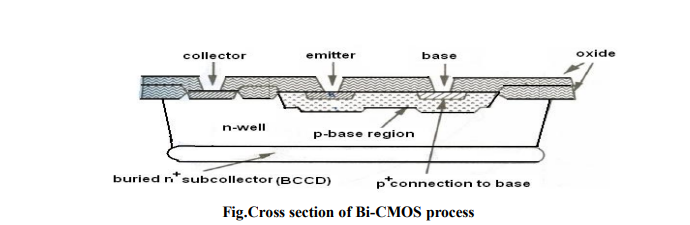
Figure: Physical cross-section of BiCMOS structure with heavily doped buried \(n^+\) subcollector layer, p-base diffusion, and poly emitter alongside standard CMOS n-well.
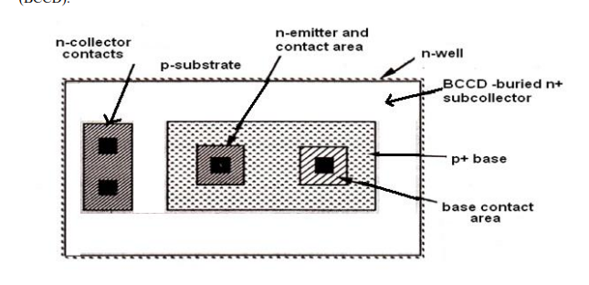
Figure: Top-view geometric layout of integrated npn transistor showing emitter, base contacts, collector ring, and deep buried contact (BCCD) routing.
To prevent forward-biasing the parasitic p-n junctions between substrate/wells and transistor source/drain regions:
When metal touches lightly doped semiconductor, it forms a Schottky diode that conducts current in only one direction. But when metal contacts heavily doped silicon (\(n^+\) or \(p^+\)), the depletion barrier becomes so microscopically narrow that carriers quantum-tunnel straight through, forming a low-resistance, bidirectional Ohmic contact. That is why all source, drain, and body contacts require heavily doped diffusions!
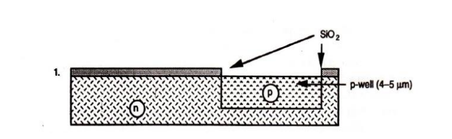
Figure: Step 1 — Initial deep p-well diffusion (4–5 μm) into lightly doped n-substrate.
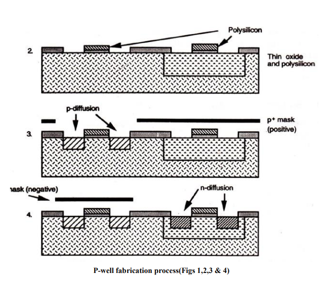
Figure: Successive masking steps — Gate oxidation, polysilicon patterning, \(p^+\) source/drain implant, and \(n^+\) source/drain implant.
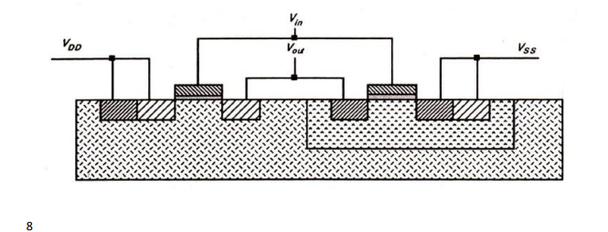
Figure: Cross-section of p-well CMOS inverter with VDD and VSS connections.
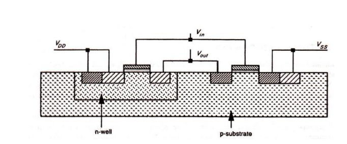
Figure: Cross-section of standard n-well inverter showing n-well, polysilicon gates, and metal routing.
Latch-up is the turning-on of the parasitic pnpn (thyristor) path formed by the wells and substrate of a CMOS circuit, which shorts \(V_{DD}\) to GND, causing massive current flow and catastrophic chip meltdown.
"Bhabo, amra inverter baniechi containing 1 nMOS ar 1 pMOS. Kintu semiconductor-er physical layers gulo automatically 2-to parasitic bipolar junction transistors (BJT) toiri kore fele: akta pnp transistor (p+ diff, n-well, p-sub) ar akta npn transistor (n+ diff, p-sub, n-well)! Ei duto transistor cross-coupled thake, forming a Silicon-Controlled Rectifier (SCR). Substrate-e transient current dhukle parasitic npn ON hoy → n-well theke current tene well voltage komie parasitic pnp ke ON kore → pnp abar substrate-e current pathiye npn ke aro beshi ON kore! Ei positive feedback loop-e VDD theke GND-te short circuit hoye chip ghole jete pare!"
As shown in Figure 7.12(a), a standard bulk CMOS inverter inherently embeds two parasitic bipolar transistors interconnected with substrate resistance \(R_{\text{sub}}\) and well resistance \(R_{\text{well}}\):
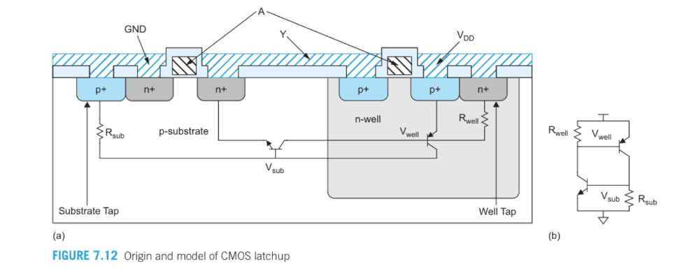
• Emitter: \(p^+\) source diffusion of pMOS (tied to \(V_{DD}\)).
• Base: \(n\)-well.
• Collector: \(p\)-type substrate.
• Emitter: \(n^+\) source diffusion of nMOS (tied to GND).
• Base: \(p\)-type substrate.
• Collector: \(n\)-well.
Because latchup requires \(V_{\text{sub}} \ge 0.7\text{ V}\) and \(V_{\text{well}} \le V_{DD} - 0.7\text{ V}\), prevention focuses on minimizing \(R_{\text{sub}}\) and \(R_{\text{well}}\) and collecting injected minority carriers before they reach parasitic bases.
High-performance processes grow a thin, lightly doped epitaxial silicon layer on top of a heavily doped (\(p^+\)) substrate wafer. The heavily doped substrate provides a low-resistance path to ground, shunting transient substrate currents harmlessly.
• Place a substrate/well tap adjacent to every transistor source connected to \(V_{DD}\) or GND.
• Place at least one tap for every 5 to 10 transistors.
• All taps must connect directly to supply rails in metal (not poly).
• Cluster nMOS near GND and pMOS near \(V_{DD}\), avoiding checkerboard layouts.
Input/Output pads are especially vulnerable to latchup because external cables experience inductive ringing, static discharge, and noise that pull voltages outside \(0\text{ to }V_{DD}\). Guard rings are continuous diffusions tied to supply rails that completely enclose sensitive transistors:
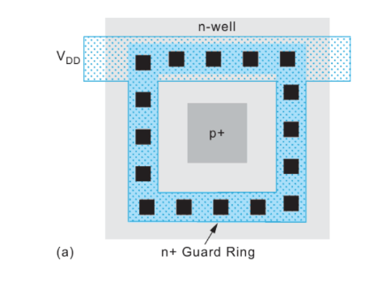
An \(n^+\) diffusion connected to an external pin can inject electrons into the substrate if voltage rings below GND (−0.7 V). A continuous \(p^+\) guard ring connected to GND collects these stray electrons before they trigger nearby circuits.
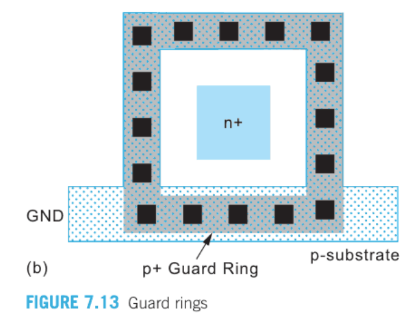
A \(p^+\) diffusion connected to an external pin can inject holes into the n-well if voltage rings above \(V_{DD}\) (\(+0.7\text{ V}\)). A continuous \(n^+\) guard ring connected to \(V_{DD}\) collects these injected holes safely.
1X.43: What is CMOS latch-up? [5 Marks]
CMOS latch-up is the unwanted turning-on of parasitic pnp and npn bipolar transistors formed by the wells, substrate, and diffusion regions of a CMOS circuit. Together with substrate and well resistances (\(R_{\text{sub}}\) and \(R_{\text{well}}\)), these transistors form a cross-coupled Silicon-Controlled Rectifier (SCR). A transient current into the substrate or well forward-biases one transistor, which turns on the other, creating regenerative positive feedback (\(\beta_1 \cdot \beta_2 \ge 1\)) and establishing a low-resistance short-circuit between \(V_{DD}\) and GND that can destroy the chip.
1X.44: How can latch-up be prevented? [2 Marks]
1. Minimize substrate and well resistance (use epitaxial wafers with heavily doped substrate).
2. Place frequent substrate and well taps close to transistor sources (every 5–10 transistors) tied directly to supply rails with metal.
3. Surround vulnerable I/O pad diffusions with continuous \(p^+\) (tied to GND) or \(n^+\) (tied to \(V_{DD}\)) guard rings.
4. Use SOI technology or operating voltages below 1.4 V.
Chips are amazingly inexpensive because all the transistors and wires can be printed like books using photolithography. Because an entire wafer full of chips is processed simultaneously at each step, chip cost is proportional to silicon area, not transistor count!
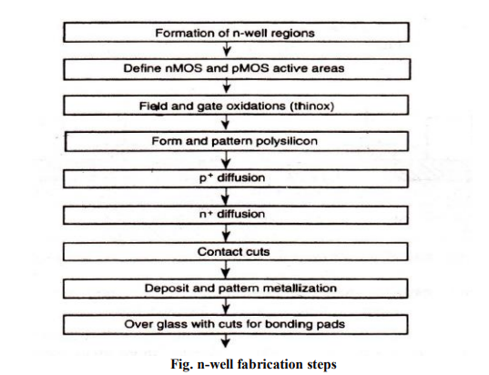
High-purity single-crystal p-type substrate wafer sliced from a grown boule.
Wafer is oxidized in furnace (\(900-1200^\circ\text{C}\)) to grow protective \(\text{SiO}_2\). Organic photoresist is spun on, exposed through the n-well mask, and developed. Hydrofluoric acid (HF) etches oxide openings. Photoresist is stripped with piranha etch. Phosphorus dopants are introduced via diffusion/implantation. Lateral diffusion causes well to spread slightly wider than oxide opening. Oxide stripped with HF.
Ultra-thin gate oxide is grown in dry oxygen. Polysilicon is deposited via Chemical Vapor Deposition (CVD) using silane gas (\(\text{SiH}_4\)), heavily doped to become conductive, patterned with photoresist and gate mask, and etched.
The polysilicon gate physically blocks dopants from entering the silicon directly beneath it. Like placing a ruler on paper and drawing along both sides, the gate itself automatically aligns the inner edges of source and drain without requiring a separate precision mask alignment!
Light dose of dopants forms shallow Lightly Doped Drain (LDD) extensions. Insulating sidewall spacers are formed on the vertical sides of the gate to offset the subsequent heavy implant.
Patterned with n-diffusion mask: implant phosphorus/arsenic into nMOS active areas and n-well contact taps. Patterned with p-diffusion mask: implant boron into pMOS active areas and substrate contact taps. Two separate masks are required because nMOS and pMOS require opposing donor/acceptor dopants.
Thick insulating field oxide is grown over the entire wafer. Patterned with contact cut mask and etched down to diffusion regions and polysilicon gates.
Aluminum is sputtered into vapor to coat the wafer and fill contact cuts. Patterned with metal mask and plasma-etched to leave the wiring network for \(V_{DD}\), GND, Input \(A\), and Output \(Y\).
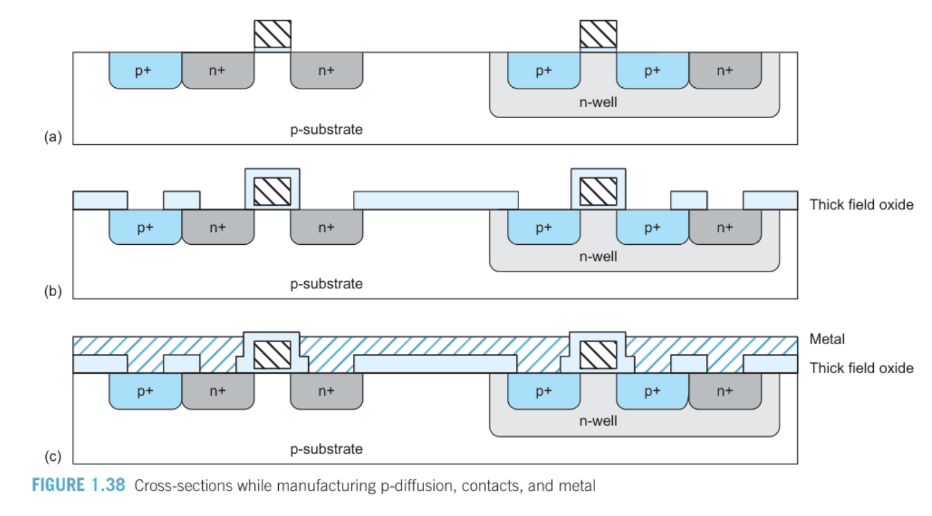
Translating mysterious fab terminology into real-world physical site operations:
Keeps neighboring transistor plots isolated so they don't accidentally interact. Prevents stray wires from creating unintended parasitic channels.
Decides which regions are protected from chemical attack and which regions receive processing.
Plants donor (Group V) or acceptor (Group III) atoms directly into the silicon crystal lattice. It changes electrical properties without excavating physical trenches!
Hydrofluoric acid (HF) dissolves glass (\(\text{SiO}_2\)); piranha etch dissolves organic resist stencils.
Imagine a ball falling from a height. If it drops off a vertical cliff, all kinetic energy impacts abruptly in one spot. In an abrupt transistor drain junction, the full voltage drop (\(V_{DD}\)) occurs across a tiny fraction of a nanometer. This creates a colossal peak electric field (\(E = -\Delta V / \Delta x\)). Highly accelerated electrons ("hot carriers") smash into and permanently degrade the thin gate oxide!
Voltage drops over a very short distance near the drain → creates an intense peak electric field → causes hot-carrier degradation and gate oxide breakdown over time.
Voltage drop is spread out over a longer physical distance through the lightly doped extension → dramatically reduces peak electric field!
The sidewall spacer is a tiny insulating collar deposited along the vertical sides of the gate. Its specific physical job is to offset the heavy Source/Drain implant farther away from the gate edge, keeping the lightly doped "gentle slope" intact between the channel and the heavily doped region!
Note: We are not changing the physical ground into a ramp; we are grading the electric potential profile through the silicon lattice!
The closest physics mechanism behind LDD is electric field spreading via doping grading, NOT a Schottky diode. A Schottky diode is a metal–semiconductor junction governed by an energy barrier. LDD is purely semiconductor profile engineering.
From 660°C aluminium gate limits and self-aligned polysilicon to bird's beak encroachment and CMP shallow trench isolation. Sze & Lee p. 8, Weste & Harris §3.2.7.
In early MOS manufacturing, metal gates were fabricated from pure Aluminium (Al). While conductive and abundant, aluminium introduced a fundamental manufacturing constraint that severely limited circuit speed and packing density until the invention of the self-aligned polysilicon gate.
"Aluminium melts near 660 °C, so an Al gate can only be deposited after the source and drain have been diffused at high temperature. Its mask must then be aligned to diffusions that already exist, and to allow for misalignment the gate is drawn to overlap them. The overlap adds gate–drain and gate–source capacitance and wastes area.
Polysilicon survives the high-temperature steps, so it is deposited first and then used as the mask for the source/drain implant. The source and drain edges line up with the gate automatically — the gate is self-aligned — which removes the overlap and its capacitance."
• Source and Drain formation requires high-temperature furnace diffusion or implant anneals at 900 – 1200 °C to activate dopants and repair crystal lattices.
• Aluminium melts near 660 °C (and forms destructive Al-Si eutectics at ~577 °C).
• The consequence: An Al gate could never be in place during Source/Drain diffusion. Source and Drain had to be formed first, and the Al gate patterned last.
• Photolithography steppers carry misalignment tolerances (\(\pm \Delta x\)).
• To ensure the gate completely spans between Source and Drain despite stepper shifts, the Al gate mask was drawn deliberately oversized, creating substantial lateral overlap.
• The penalty: Heavy parasitic gate-drain (\(C_{gd}\)) and gate-source (\(C_{gs}\)) overlap capacitances. Via the Miller effect (\(C_{in} \approx C_{gs} + C_{gd}(1 + |A_v|)\)), switching frequencies were severely degraded!
• Polycrystalline silicon (polysilicon) withstands temperatures well above 1000 °C.
• Polysilicon is deposited and etched first, defining the gate electrode atop the thin gate oxide.
• The polysilicon gate then acts as an impenetrable hard mask during heavy Source/Drain ion implantation.
• Source and Drain edges line up with the gate automatically and perfectly. Overlap capacitance drops to near zero!
| Parameter / Feature | Aluminium Metal Gate (Older) | Polysilicon Gate (Self-Aligned) |
|---|---|---|
| Melting / Processing Limit | Melts near 660 °C (Eutectic ~577 °C) | Survives > 1000 °C high-temp anneals |
| Deposition Sequence | Deposited after Source/Drain diffusion | Deposited before Source/Drain implantation |
| Alignment Tolerance | Must allow generous mask misalignment overlay | Self-aligned: Gate electrode acts as the implant mask |
| Overlap Capacitance (\(C_{ov}\)) | Large (\(C_{gd}\) and \(C_{gs}\)) → Severe Miller delay | Negligible (Only sub-nanometer fringing/lateral scatter) |
| Silicon Area Footprint | Wasted area due to large alignment safety margins | Minimum allowable channel length (\(L\)) and area footprint |
Imagine building millions of MOSFETs next to each other on a single silicon wafer. Both devices share the same monolithic substrate, but they must operate with absolute electrical independence.
Metal and polysilicon wires carrying high potentials (\(V_{DD}\)) route over the field areas between devices. Without thick isolation, these wires act as parasitic gates, inverting the underlying substrate and forming unintended conductive channels between unrelated nodes.
Adjacent Source/Drain diffusion junctions must never conduct or capacitive-couple directly to one another through the silicon substrate. Physical isolation blocks leakage currents, latchup triggers, and cross-device interference.
LOCOS (Local Oxidation of Silicon) was the dominant isolation architecture throughout the 1970s and 1980s. It uses thermal oxidation locally to grow thick field oxide (FOX) in isolation regions while protecting active transistor areas with an oxidation barrier.
"Imagine you reserved a 100 m wide plot for a building, but the neighbouring boundary walls spread inward by 10 m on each side. Your usable plot is now only 80 m wide."
The silicon wafer faces the exact same physical crisis:
• Intended Active Area: The full silicon width originally patterned by the mask.
• After LOCOS Oxidation: Lateral oxide encroachment eats \(\sim 0.1 – 0.2\ \mu\text{m}\) into the active zone from each side.
• The Scaling Bottleneck: In sub-\(0.35\ \mu\text{m}\) technology nodes where transistors themselves are narrower than \(0.3\ \mu\text{m}\), the bird's beak swallows the active area entirely! This hard geometric limit forced the semiconductor industry to abandon LOCOS for STI.
Shallow Trench Isolation (STI) fundamentally overturned the LOCOS paradigm. Instead of letting the oxide giant grow outwards from the substrate silicon, STI etches a narrow trench into the silicon first, then fills that trench with deposited dielectric.
Grow thin thermal pad oxide (\(\text{SiO}_2\)) and deposit a hard masking layer of silicon nitride (\(\text{Si}_3\text{N}_4\)). Pattern with lithography to expose the isolation grid.
Anisotropic dry reactive-ion etching (RIE) removes exposed silicon to carve steep, narrow trenches (\(\sim 0.25 – 0.5\ \mu\text{m}\) deep) with near-vertical sidewalls.
Thermally grow a very thin sacrificial liner oxide (\(\sim 10 – 20\text{ nm}\)) on trench sidewalls. This repairs crystal damage from dry etching and rounds trench bottom corners.
Deposit thick \(\text{SiO}_2\) dielectric via Chemical Vapor Deposition (CVD) (e.g. TEOS or High-Density Plasma CVD). Purely additive; fills the trench without consuming substrate silicon.
Use Chemical Mechanical Polishing (CMP) to polish away all overburden oxide above the trench. The \(\text{Si}_3\text{N}_4\) layer acts as a polish stop, producing a globally flat surface.
| Mechanism | Physical Action on Silicon | Role in STI Sequence |
|---|---|---|
| Thermal Oxidation | Consumes Substrate: \(\text{Si} + \text{O}_2 \rightarrow \text{SiO}_2\). Grows partly down into substrate (~45%) and partly upwards (~55%). | Used for Step 3 (thin liner oxide) to heal dry-etch crystalline lattice defects and round sharp corners. |
| Chemical Vapor Deposition (CVD) | Additive Gas Phase: Precursor gases react atop the surface to deposit \(\text{SiO}_2\). Does NOT consume underlying silicon! | Used for Step 4 (bulk trench fill) to rapidly fill high-aspect-ratio trenches without lateral swelling. |
CMP (Chemical Mechanical Polishing) combines mechanical abrasion and chemical reactivity:
"Imagine building a multi-lane highway or road network on uneven, hilly ground. One section is high, another has a deep rut, and another has a mound. The next layer laid over that surface will inherit and magnify every single height variation."
In modern sub-micron CMOS, chips feature 10 to 15 stacked layers of copper metal interconnects. Non-planar bumps cause two catastrophic fabrication failures:
1. Photolithography Depth of Focus (DOF): Advanced DUV/EUV projection optics have depth of focus under \(100\text{ nm}\). If the wafer surface has step heights, lithography patterns blur out of focus.
2. Metal Thinning & Bridging Shorts: Metal films deposited over unplanarized steps thin out over ridges (causing open circuits) or pool in valleys (causing short circuits). CMP planarization provides the flat foundation needed for multi-tier interconnect scaling.
A reverse-biased Source/Drain-to-well junction acts as a non-conductive potential barrier. However, if reverse voltage exceeds the junction breakdown voltage (\(V_{BR}\)), avalanche or Zener multiplication causes massive current conduction. Deep trench isolation structures establish physical dielectric boundaries that block lateral subsurface punchthrough, prevent CMOS latchup triggering, and ensure reliable reverse-bias breakdown isolation between closely packed adjacent transistors.
| Feature | LOCOS (Historical) | STI (Modern Standard) |
|---|---|---|
| Basic Method | Thermally grow thick oxide locally | Etch a trench, grow liner, fill with CVD oxide |
| Main Limitation | Sideways oxide growth → The Bird's Beak | Requires trench etching, CVD filling & CMP planarization |
| Transistor Packing Density | Severely limited by lateral encroachment | Narrow isolation enables maximum packing density |
| Post-Isolation Surface | Raised, uneven oxide topography | Flat planarized surface via CMP |
| Technology Milestone | Dominant down to \(\sim 0.5\ \mu\text{m}\) | Universal standard from \(\sim 0.35\ \mu\text{m}\) to sub-3nm |
| Substrate Si Consumption | Large (Entire FOX volume consumes Si) | Minimal (Only thin thermal liner; fill is deposited CVD) |
Test your retention of device isolation and CMP planarization with instant verification:
Mead-Conway scalable \(\lambda\)-rules, standard cell track routing (\(P = 8\lambda\)), stick diagrams, layer color codes, and Euler path graph optimization for area-minimized complex gates. Weste & Harris §1.5.3–1.5.5, Kang & Leblebici §2.4 & §7.4.
Design rules are the minimum permissible widths, spacings, and overlaps of each physical mask layer; \(\lambda\)-based rules express them all as integer multiples of a single parameter \(\lambda\), defined as half the minimum drawn transistor channel length, enabling effortless layout scaling across compatible fabrication processes.
"Acha bro! A circuit schematic only tells us what connects to what in abstract theory. But a semiconductor foundry cannot manufacture an abstract diagram — it needs exact physical coordinates, layer widths, and spacings to carve into silicon! If a metal wire is drawn too narrow, it snaps during manufacturing, causing an open circuit. If two wires are drawn too close, process variations merge them together, causing a fatal short circuit. Design rules are the foundry's manufacturing speed limits that guarantee high yield while keeping silicon area compact!"
The physical mask layout of any integrated circuit must conform to geometric constraints known as Layout Design Rules. These rules specify minimum allowable line widths, minimum feature separations, and minimum layer overlaps:
The primary goal of design rules is to achieve high overall manufacturing yield and long-term reliability using the smallest possible silicon area. Yield is the ratio of fully functional chips to total manufactured chips on a wafer.
• Conservative Rules: Wider lines and generous spacings increase defect tolerance and boost yield, but consume more silicon area, increasing per-die cost.
• Aggressive Rules: Maximize circuit packing density, but increase vulnerability to dust particles and photolithographic distortions.
| Design Rule Style | Definition & Characteristics | Advantages & Limitations |
|---|---|---|
| Micron-Based Rules | All layout constraints (line widths, spacings, contact sizes) are specified in absolute physical units (micrometers or nanometers). E.g., metal width = \(0.25\,\mu\text{m}\), spacing = \(0.30\,\mu\text{m}\). | Pro: Squeezes maximum density out of a specific foundry process. Con: Process migration is brutal; moving to a new node requires manually redrawing and resizing every geometry individually. |
| Lambda (\(\lambda\))-Based Rules | Popularized by Mead & Conway. Expresses all dimensions as integer multiples of a single scaling parameter \(\lambda\): $$\mathbf{\lambda = \frac{\text{Minimum Drawn Feature Size}}{2} = \frac{L_{\min}}{2}}$$ | Pro: Trivial scaling! Rescaling a layout to an advanced process only requires setting a new numerical value for \(\lambda\). Con: Conservative; rounds up dimensions to integer multiples of \(\lambda\), slightly sacrificing density. Below 180 nm, non-linear physical effects make pure \(\lambda\)-scaling difficult. |
For a \(180\text{ nm}\) CMOS process, the minimum drawn transistor channel length is \(L_{\min} = 180\text{ nm} = 0.18\,\mu\text{m}\).
$$\lambda = \frac{L_{\min}}{2} = \frac{0.18\,\mu\text{m}}{2} = \mathbf{0.09\,\mu\text{m} = 90\text{ nm}}$$
Therefore, a \(4\lambda\) metal wire has a physical width of \(4 \times 0.09\,\mu\text{m} = \mathbf{0.36\,\mu\text{m}}\).
Foundry Mask-Shrink Nuance: Some 180 nm processes set \(\lambda = 0.10\,\mu\text{m}\) during layout, and then shrink the gate by 20 nm while generating the final masks to retain a 180 nm physical gate length while giving wider margins for metal and diffusion!
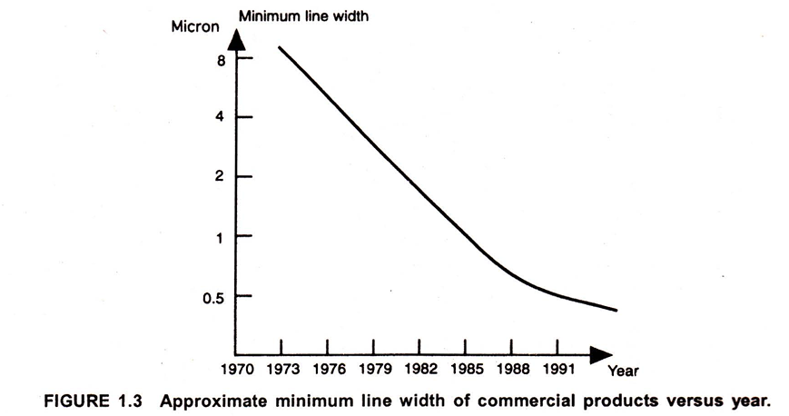
MOSIS (MOS Implementation System) is an industrial-academic prototyping service that aggregates multiple customer designs onto shared multi-project wafers (MPW) to spread mask costs. MOSIS established a conservative, universally recognized \(\lambda\)-rule set for n-well processes:
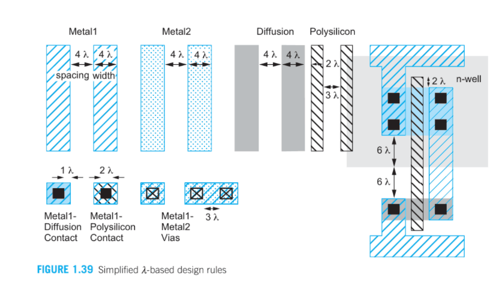
| Layer / Feature | Minimum Width | Minimum Spacing | Overlap / Enclosure Rule |
|---|---|---|---|
| Metal 1 & Diffusion | \(4\lambda\) | \(4\lambda\) | Diffusion must be surrounded by \(1\lambda\) at contact cut |
| Polysilicon (Gate) | \(2\lambda\) | \(3\lambda\) (from poly or contact) | Must overlap diffusion by \(\mathbf{2\lambda}\) where transistor is formed; space \(\mathbf{1\lambda}\) away where no transistor is intended. |
| Contact Cuts | \(2\lambda \times 2\lambda\) | \(2\lambda\) (from another contact) | Must be enclosed by \(\mathbf{1\lambda}\) of metal/poly/diffusion above and below |
| N-Well | — | — | Must surround pMOS transistors by \(\mathbf{6\lambda}\); must avoid nMOS transistors by \(\mathbf{6\lambda}\) |
| Metal 2 | \(4\lambda\) | \(4\lambda\) | Via 1 is \(2\lambda \times 2\lambda\), surrounded by \(1\lambda\) on M1 and M2 |
| Metal 3 (Top Level) | \(6\lambda\) | \(4\lambda\) | Wider and thicker to reduce electrical resistance and electromigration |
A MOSFET's electrical drive strength and current capability are governed by its Width-to-Length (\(W/L\)) ratio:
The minimum contacted transistor has width \(W = 4\lambda\) and length \(L = 2\lambda\). In a \(0.6\,\mu\text{m}\) process (\(\lambda = 0.3\,\mu\text{m}\)), this represents an actual physical width \(W = 1.2\,\mu\text{m}\) and length \(L = 0.6\,\mu\text{m}\). Digital designs universally choose minimum channel length \(L_{\min}\) for maximum switching speed, minimum silicon area, and lowest dynamic power.
In silicon inversion layers, holes have significantly lower carrier mobility than electrons (\(\mu_n \approx 2.5 \mu_p\)). To deliver symmetrical pull-up and pull-down currents (\(I_{\text{sat}} \propto \mu \frac{W}{L}\)) and balanced rise/fall switching delays, a unit inverter pairs a unit nMOS (\(W/L = 4/2\)) with a double-sized pMOS (\(W/L = 8/2\))!
"To automate chip design, standard cells are organized exactly like modular bricks with four horizontal strips: Metal VDD supply rail on top → p-diffusion → n-diffusion → Metal GND supply rail at the bottom. When multiple gates are placed side by side, their power and ground rails automatically abut and snap together into continuous power grids! Polysilicon wires run vertically as transistor gates, and internal metal tracks connect the terminals."
Standard cell digital libraries use a highly modular 4-strip layout template:
Power and ground rails extend \(2\lambda\) beyond the boundary on each side. When two adjacent standard cells abut, their rails merge and their internal diffusions remain separated by exactly \(4\lambda\), satisfying design rules! The standard cell height is \(36\lambda\) (or \(40\lambda\) when counting the \(4\lambda\) inter-cell routing space above).
As shown in Figure 1.41(b), heavily doped \(p^+\) substrate taps and \(n^+\) well taps are placed directly underneath the GND and \(V_{DD}\) metal rails. This saves substantial area while ensuring all transistor bodies are clamped securely to the supplies to eliminate latchup.
While schematics focus on transistors, interconnect wires occupy the vast majority of physical layout area. Transistors are merely small widgets that fit underneath the metal routing grid!
A routing track is the repeating horizontal or vertical pitch required to route one metal wire safely alongside its neighbor. One \(8\lambda\) track also provides sufficient clearance for a contacted transistor to sit underneath!
Designers estimate layout dimensions by counting the number of vertical and horizontal metal routing tracks and multiplying by \(8\lambda\):
• Vertical Tracks: 4 tracks → \(\text{Width} = 4 \times 8\lambda = \mathbf{32\lambda}\).
• Horizontal Tracks: 5 tracks → \(\text{Height} = 5 \times 8\lambda = \mathbf{40\lambda}\).
• Total Cell Area: \(32\lambda \times 40\lambda = \mathbf{1280\lambda^2}\). (Matches actual layout dimensions exactly!).
For the compound gate \(Y = \overline{(A + B + C) \cdot D}\):
• Vertical Tracks: 5 tracks → \(\text{Width} = 5 \times 8\lambda = \mathbf{40\lambda}\).
• Horizontal Tracks: 6 tracks → \(\text{Height} = 6 \times 8\lambda = \mathbf{48\lambda}\).
• Estimated Cell Size: \(40\lambda \times 48\lambda = \mathbf{1920\lambda^2}\).
"Before spending days drawing thousands of exact micron polygons in CAD, layout engineers sketch a Stick Diagram using colored markers! A stick diagram is a simplified, non-to-scale topological map. It captures the essential layer connectivity: where red poly crosses green/yellow diffusion to create transistors, where blue metal routes power, and where black X's mark contact cuts."
| Feature | Stick Diagram | Physical Mask Layout |
|---|---|---|
| Purpose | Topological planning, transistor placement, and area estimation. | Exact geometric data used to generate lithographic manufacturing masks. |
| Scale | Not to scale. Lines represent wires of zero thickness. | Strictly to scale. Every polygon has exact width, length, and coordinates. |
| Design Rules | Captures layer overlaps and crossings, but ignores exact micron margins. | Must satisfy 100% of the foundry design rules (DRC clean). |
| Speed | Can be sketched on paper in 60 seconds. | Requires complex CAD software and extensive DRC/LVS verification. |
Color coding is a universal graphical convention used to distinguish physical semiconductor layers on stick diagrams and CAD monitors:
| n-Diffusion: | Green |
| p-Diffusion: | Yellow |
| Polysilicon: | Red |
| Metal 1: | Blue |
| Metal 2: | Purple / Magenta |
| Contact Cut: | Black (or X) |
| Diffusion: | Green |
| Polysilicon: | Red |
| Metal: | Blue |
| Depletion Implant: | Yellow |
| Contact Cut: | Black |
| Buried Contact: | Brown |
Beware of this textbook conflict on exams:
In the Weste & Harris CMOS convention, Yellow designates p-diffusion.
In the Mead & Conway single-poly nMOS convention, Yellow designates the Depletion Implant (since there is no p-diffusion in pure nMOS technology)! Always verify which process convention your exam question specifies.
"When building complex CMOS logic gates, the order in which you arrange the vertical polysilicon gate columns makes or breaks your layout area! If you choose an arbitrary gate order, the source and drain nodes don't line up. You are forced to chop the diffusion strip into pieces, leaving gaps for diffusion-to-diffusion clearance and double metal contacts. Graph theory comes to the rescue: an Euler Path traverses every transistor edge exactly once. Finding a shared Euler path for both pull-down and pull-up networks lets us build the entire gate using single, continuous, unbroken diffusion strips!"
In a complex gate, if polysilicon columns are placed arbitrarily, transistor terminals do not align sequentially. The diffusion strip must be broken, requiring additional silicon area to satisfy diffusion-to-diffusion spacing (\(4\lambda\)) and fit two metal-to-diffusion contacts (\(2 \times 2\lambda\) plus enclosures):
• Multiple breaks in both p-diffusion and n-diffusion strips.
• Large column-to-column separation \(\Delta d\) required for isolation and extra contact cuts.
• Bloated layout area, tangled metal routing, and excessive parasitic capacitances!
• Zero diffusion breaks! Completely uninterrupted p-type and n-type diffusion strips.
• Separation \(\Delta d\) needs room for only one shared metal-to-diffusion contact.
• Drastically smaller layout area, straightforward signal routing, and minimum parasitics.
Every static CMOS gate consists of complementary pull-down (nMOS) and pull-up (pMOS) networks. The pull-up graph is constructed as the mathematical dual of the pull-down graph:
An Euler Path is an uninterrupted path through a graph that traverses every edge (branch) exactly once. Vertices (nodes) may be revisited, but no edge may be repeated.
In both PDN and PUN graphs, the path starts at node \((x)\) and terminates at node \((y)\). Arranging polysilicon gate columns in this identical sequence enables 100% continuous diffusion!
The exclusive-OR (XOR) function is \(A \oplus B = \overline{A}B + A\overline{B}\). To implement this in static complementary CMOS:
• Core complex gate: 4 nMOS in PDN + 4 pMOS in PUN = 8 transistors.
• 2 input inverters to generate inverted literals \(\overline{A}\) and \(\overline{B}\) = 4 transistors.
• Total: 12 transistors. (Transmission gate implementations can reduce this to 4–6 transistors).
Not every complex gate has a common Euler path covering both networks. When a common path does not exist, a completely uninterrupted diffusion strip is mathematically impossible, and at least one diffusion break must be included.
"Exam-e stick diagram astei amra ei 5-step master recipe follow korbo: 1. Read Boolean function → 2. Build Pull-Down Network (nMOS: AND mane series, OR mane parallel) → 3. Build Pull-Up Network (pMOS: dual opposite arrangement) → 4. Find common Euler path sequence → 5. Draw top VDD, bottom GND, continuous diffusion strips, and cross them with vertical poly gates!"
| Gate & Function | Pull-Down Network (nMOS) | Pull-Up Network (pMOS) | Stick Diagram Features |
|---|---|---|---|
| Inverter \(Y = \overline{A}\) |
Single nMOS connected between Output \(Y\) and GND. | Single pMOS connected between \(V_{DD}\) and Output \(Y\). | One vertical poly line \(A\) crosses both diffusion strips. Output metal joins drains. |
| 2-Input NAND \(Y = \overline{A \cdot B}\) |
Transistors \(A\) and \(B\) in series between Output \(Y\) and GND. | Transistors \(A\) and \(B\) in parallel between \(V_{DD}\) and Output \(Y\). | Output LOW only when both \(A=1\) AND \(B=1\). Parallel pMOS sources tied to \(V_{DD}\). |
| 2-Input NOR \(Y = \overline{A + B}\) |
Transistors \(A\) and \(B\) in parallel between Output \(Y\) and GND. | Transistors \(A\) and \(B\) in series between \(V_{DD}\) and Output \(Y\). | Output HIGH only when both \(A=0\) AND \(B=0\). Series pMOS stack causes weaker pull-up. |
• Pull-Down Network: \((A \text{ in series with } B)\) in parallel with \(C\).
• Pull-Up Network: \((A \text{ in parallel with } B)\) in series with \(C\).
• Common Euler Path: C — A — B
• PDN Node Path: \(\text{GND} \xrightarrow{C} Y \xrightarrow{A} n_1 \xrightarrow{B} \text{GND}\).
• PUN Node Path: \(V_{DD} \xrightarrow{C} p_1 \xrightarrow{A} Y \xrightarrow{B} p_1\).
Layout Tip: Both ends of the pull-up diffusion strip terminate at node \(p_1\), so they are strapped together in metal!
• Pull-Down Network: \(a, b, c\) in series, the entire branch in parallel with \(d\).
• Pull-Up Network: \(a, b, c\) in parallel, the entire bank in series with \(d\).
• Euler Path Derivation: The pull-down graph is a single loop (\(Y \rightarrow n_1 \rightarrow n_2 \rightarrow \text{GND} \rightarrow Y\)). Any ordering around this loop is an Euler path.
• Common Euler Path: d — a — b — c
• PDN Node Path: \(\text{GND} \xrightarrow{d} Y \xrightarrow{a} n_1 \xrightarrow{b} n_2 \xrightarrow{c} \text{GND}\).
• PUN Node Path: \(V_{DD} \xrightarrow{d} p_1 \xrightarrow{a} Y \xrightarrow{b} p_1 \xrightarrow{c} Y\).
• Pull-Down Network: \((a \text{ in series with } b)\) in parallel with \(c\) and in parallel with \(d\).
• Pull-Up Network: \((a \text{ in parallel with } b)\) in series with \(c\) and in series with \(d\).
• Common Euler Path: c — d — a — b
• PDN Node Path: \(Y \xrightarrow{c} \text{GND} \xrightarrow{d} Y \xrightarrow{a} n_1 \xrightarrow{b} \text{GND}\).
• PUN Node Path: \(V_{DD} \xrightarrow{c} p_2 \xrightarrow{d} p_1 \xrightarrow{a} Y \xrightarrow{b} p_1\).
• Pull-Down Network: Transistors \(A\) and \(B\) in parallel between \(Y\) and GND.
• Pull-Up Network: Transistors \(A\) and \(B\) in series between \(V_{DD}\) and \(Y\).
• Transistor Sizing: \(W_p / W_n \approx 4\) to compensate for 2-in-series pMOS stack (\(\mu_n \approx 2\text{--}3\mu_p\)).
• Geometric Mask Layout & Design Rules: Drawn for \(0.18\,\mu\text{m}\) process with \(1.80\,\mu\text{m}\) cell width, \(4\lambda\) metal rails, \(2\lambda\) poly lines, and \(1\lambda\) contact enclosure rules.
| Q ID | Exam Question Description | Marks | Core Answer Summary |
|---|---|---|---|
| 1A.7 | Define layout in context of IC design | 2 | Physical geometric representation of diffusion, poly, metal, and contacts adhering to design rules. |
| 1A.8 | What is a stick diagram? How does it differ from layout? | 2 | Symbolic topological map; not to scale; used for planning layer connections before detailed layout. |
| 1A.9 | Color codes for n-diffusion, p-diffusion, poly | 2 | n-diff: Green, p-diff: Yellow, Polysilicon: Red (Weste & Harris convention). |
| 1B.4 | Draw & explain stick diagram for CMOS inverter | 5 | Top \(V_{DD}\), bottom GND; yellow p-diff, green n-diff; vertical red poly gate; blue metal output. |
| 1B.5 | Draw & explain stick diagram for 2-input NAND gate | 5 | Series nMOS in PDN, parallel pMOS in PUN; two vertical poly lines \(A\) and \(B\). |
| 1B.6 | Explain layout representations and design rules | 5 | Micron vs \(\lambda\)-based rules; geometric constraints ensuring high yield and reliability. |
| 1C.3 | Circuit, layout and stick diagram of 2-input NOR gate | 10 | Parallel nMOS in PDN, series pMOS in PUN; sizing \(W_p / W_n \approx 4\) for symmetric delay. |
| 1C.4 | Circuit, layout and stick diagram of 2-input NAND with design rules | 10 | Complete MOSIS dimensions: \(4\lambda\) metal/diff, \(2\lambda\) poly, \(2\lambda\) poly overhang, \(1\lambda\) contact enclosure. |
| 1X.20 | Mostly used colors for each mask layer in layout | 2 | Green (n-diff), Yellow (p-diff), Red (poly), Blue (Metal 1), Black (contacts). |
| 1X.32 | Stick diagram of \(f = (A \cdot B + C)'\) | 5 | Common Euler path sequence: \(C - A - B\); continuous diffusion strips; node \(p_1\) strapped. |
| 1X.33 | Why are mask layouts important in IC fabrication? | 5 | Translates logic into lithographic masks; governs yield, prevents open/short defects, minimizes silicon area. |
| 1X.43 | What is CMOS latch-up? | 5 | Turning on of parasitic pnpn thyristor between \(V_{DD}\) and GND via regenerative feedback (\(\beta_1 \beta_2 \ge 1\)). |
| 1X.44 | How can latch-up be prevented? | 2 | Substrate/well taps every 5–10 transistors; guard rings around I/O pads; epitaxial wafers; SOI. |
| 1X.45 | What are stick diagrams? | 2 | Simplified layer connectivity schematics not drawn to scale, used to plan cell area and routing. |
| 1X.46 | Color codes for single-poly nMOS technology | 2 | Diff: Green, Poly: Red, Metal: Blue, Depletion: Yellow, Contact: Black, Buried: Brown (Mead-Conway). |
| 1X.47 | What are design rules? | 2 | Geometric constraints (widths, spacings, overlaps) ensuring reliable fabrication and high yield. |
| 1X.48 | What are \(\lambda\)-based design rules? | 2 | Rules expressing all dimensions as multiples of \(\lambda = L_{\min} / 2\), enabling linear process scaling. |
| 1X.49 | \(g = (abc + d)'\): find Euler path and stick layout | 5 | Common Euler path: \(d - a - b - c\); unbroken diffusion strips for both PDN and PUN. |
| 1X.50 | Stick diagram of \(f = (a \cdot b + c + d)'\) | 5 | Common Euler path: \(c - d - a - b\); continuous diffusion layout. |
Complete I-V conduction regimes, charge-based gate and junction capacitance models, mobility degradation, velocity saturation, channel length modulation (CLM), charge sharing, subthreshold leakage, high-field breakdown, and sheet resistance. Weste & Harris §2.3–2.4 & §6.2, Kang & Leblebici §3.5, Sze & Lee §2.3–3.6.
The graphs below illustrate the output \( I_D \) versus \( V_{DS} \) characteristic families for both depletion-mode and enhancement-mode nMOS transistors across multiple gate-source bias voltages (\( V_{GS} \)):
Figure: Depletion-mode nMOS conducts at \(V_{GS} = 0\) due to implanted channel; requires negative \(V_{GS} < V_{td}\) to pinch off.
Figure: Enhancement-mode nMOS is OFF at \(V_{GS} = 0\); requires positive gate bias \(V_{GS} > V_t\) to invert channel and conduct.
The gate voltage is insufficient to invert the silicon surface beneath the gate oxide. In the classical long-channel model, \(I_{ds} = 0\). In real nanometer transistors, weak inversion produces exponential subthreshold leakage.
An continuous inversion channel extends from source to drain. The channel behaves as a voltage-controlled resistor: current increases almost linearly with \(V_{ds}\) before parabolic bending: $$I_{ds} = \beta \left( (V_{gs} - V_t)V_{ds} - \frac{V_{ds}^2}{2} \right)$$
The channel pinches off at the drain end (\(V_{gd} \le V_t\)). Carriers are swept across the drain depletion electric field; \(I_{ds}\) becomes independent of \(V_{ds}\) and the transistor behaves as a constant current source: $$I_{dsat} = \frac{\beta}{2} (V_{gs} - V_t)^2$$
Figure: Channel profiles (a) Uniform channel at \(V_{ds}=0\), (b) Linear regime channel tapering at \(V_{ds} < V_{gs}-V_t\), (c) Channel pinch-off point at drain when \(V_{ds} \ge V_{gs}-V_t\).
The boundary separating the linear and saturation regions occurs at the channel pinch-off voltage: $$\mathbf{V_{DSAT} = V_{gs} - V_t = V_{GT}}$$ \(V_{DSAT}\) marks the exact point where the local gate-to-channel inversion potential at the drain edge drops to zero: $$V_{channel}(L) = V_d - V_s = V_{ds}$$ $$V_{ox}(L) = V_{gs} - V(L) = V_t$$ Beyond this point (\(V_{ds} > V_{dsat}\)), the inverted channel no longer touches the drain diffusion; any further increase in \(V_{ds}\) drops across the pinched-off depletion region, and electrons are swept across the high electric field into the drain.
"In high school physics, a capacitor has two fixed metal plates. In a MOSFET, the top plate is fixed polysilicon/metal gate, but the bottom plate is ALIVE! In cutoff, the bottom plate is the silicon substrate body. In linear, the bottom plate turns into a conducting inversion channel split between source and drain. In saturation, pinch-off snaps the drain connection, and the bottom plate belongs 100% to the source! That is why capacitance changes dramatically with bias voltages!"
The gate capacitance consists of two components: the intrinsic channel capacitance \(C_{gc}\) (over the active channel) and the overlap capacitances \(C_{gol}\) (fringing and physical overlap with source and drain diffusions).
Nominal parallel-plate gate oxide capacitance is:
The intrinsic capacitance is split across three physical terminals connected to the bottom plate: \(C_{gb}\) (gate-to-body), \(C_{gs}\) (gate-to-source), and \(C_{gd}\) (gate-to-drain). Their distribution changes across the three operating regimes:
| Operating Regime | Gate-to-Body (\(C_{gb}\)) | Gate-to-Source (\(C_{gs}\)) | Gate-to-Drain (\(C_{gd}\)) | Total Gate Capacitance (\(C_g\)) |
|---|---|---|---|---|
| 1. Cutoff (\(V_{gs} < V_t\)) | \(\mathbf{C_0}\) (Accumulation) → drops in depletion | \(0\) | \(0\) | \(\mathbf{C_0}\) |
| 2. Linear (\(V_{ds} < V_{dsat}\)) | \(0\) (Channel shields body) | \(\mathbf{C_0 / 2}\) | \(\mathbf{C_0 / 2}\) | \(\mathbf{C_0}\) |
| 3. Saturation (\(V_{ds} \ge V_{dsat}\)) | \(0\) | \(\mathbf{\frac{2}{3} C_0}\) | \(0\) (Pinch-off isolates drain) | \(\mathbf{\frac{2}{3} C_0}\) |
How does gate-source capacitance vary with gate-source voltage?
• For \(V_{gs} < V_t\) (Cutoff): No inversion channel exists; gate charge couples purely to substrate bulk → \(\mathbf{C_{gs} = 0}\).
• At \(V_{gs} = V_t\) (Inversion Threshold): The channel abruptly forms, shielding the substrate. In the linear region with small \(V_{ds}\), channel charge is shared equally between terminals → \(\mathbf{C_{gs} = C_0 / 2}\).
• In Saturation (\(V_{ds} > V_{dsat}\)): The pinch-off region isolates the drain completely (\(C_{gd} \to 0\)). Due to the tapered inversion layer charge profile, all intrinsic gate capacitance couples to the source, settling at \(\mathbf{C_{gs} = \frac{2}{3} C_0}\)!
In actual self-aligned fabrication, lateral dopant diffusion causes the source and drain pockets to extend under the polysilicon gate by distance \(L_{ol}\). This creates voltage-independent overlap capacitances proportional to transistor width \(W\):
Typical values are \(C_{gsol} = C_{gdol} \approx 0.2\text{ to } 0.4\text{ fF}/\mu\text{m}\). Total effective gate capacitance for delay modeling is: $$C_g = C_{gs} + C_{gd} + C_{gb} + 2 C_{gol} W = C_0 + 2 C_{gol} W$$
The reverse-biased p-n junction between source/drain diffusion and substrate/well forms a parasitic depletion capacitor. It consists of two geometric components:
Total parasitic source-body diffusion capacitance:
"Weste & Harris give the ultimate analogy: Imagine you've pulled an all-nighter in the lab and run across the courtyard to the coffee cart! How many hours you've been awake is the LATERAL field (drives you forward). But a brutal crosswind is blowing — that's the VERTICAL gate field slamming you into the wall (mobility degradation)! And right then, a lecture hall empties with confused freshmen you collide with (optical phonons). No matter how desperate you are for coffee, your top speed is strictly capped! In short-channel MOSFETs, carriers hit a hard ceiling: Velocity Saturation (\(v_{sat} \approx 10^7\text{ cm/s}\))!"
In long-channel devices, carrier drift velocity is proportional to electric field: \(v = \mu E\). In sub-micron transistors, two severe high-field effects destroy this assumption:
High gate voltage attracts carriers tightly to the \(\text{Si–SiO}_2\) interface, causing surface roughness scattering that reduces effective mobility \(\mu_{eff}\): $$\mu_{eff\text{-}n} = \frac{540}{1 + \left(\frac{V_{gs} + V_t}{0.54 \cdot t_{ox}}\right)^{1.85}} \tag{2.23}$$ In fully-ON 65nm nMOS (\(V_{gs}=1.0\text{V}, t_{ox}=1.05\text{nm}\)), mobility plummets from \(540\) to \(96\text{ cm}^2/\text{V}\cdot\text{s}\)! (Example 2.3).
At high lateral fields (\(E > E_c\)), carriers collide frequently with optical phonons and reach a maximum velocity: $$v_{sat} \approx 10^7\text{ cm/s (electrons)}, \quad 8 \times 10^6\text{ cm/s (holes)}$$ Critical electric field: $$E_c = \frac{2 v_{sat}}{\mu_{eff}}, \quad V_c = E_c L \tag{2.25}$$ In 65nm nMOS, \(V_{c\text{-}n} = \mathbf{1.04\text{ V}}\) → heavily velocity-saturated at normal \(V_{DD}\)! (Example 2.4).
Accounting for velocity saturation, the saturation voltage compresses below the long-channel value:
Substituting into current equations yields the modified saturation current:
In saturation, the pinch-off point moves away from the drain toward the source as \(V_{ds}\) increases. The depletion layer width \(L_d\) shortens the effective channel length:
Because \(I_{ds} \propto 1/L_{eff}\), current increases with \(V_{ds}\) in saturation instead of remaining perfectly flat. Modeled using the Early Voltage \(V_A\):
In short-channel devices, high drain voltage creates an electric field that penetrates deep into the channel, lowering the source-channel potential barrier even when \(V_{gs} = 0\):
where \(\eta\) is the DIBL coefficient (typically \(0.05\text{ to } 0.15\text{ V/V} = 100\text{ mV/V}\)). DIBL causes threshold voltage to drop as drain voltage rises!
The subthreshold slope \(S\) is typically \(\mathbf{100\text{ mV/decade}}\) at room temperature: $$S = \left[ \frac{d(\log_{10} I_{ds})}{dV_{gs}} \right]^{-1} = n v_T \ln 10 \tag{2.44}$$ This means gate voltage must drop by 100 mV to decrease leakage by 10× (one order of magnitude).
"In a long-channel transistor, the gate is the king: it pays for 100% of the depletion charge underneath it to turn the transistor ON. But when the channel is shrunk down to nanometers, the source and drain diffusion pockets step in and 'share' the burden by creating their own massive depletion zones. The gate now only needs to support a small trapezoid of charge! Because the gate supports less charge, the threshold voltage drops — this is \(V_t\) roll-off by charge sharing!"
"A MOSFET is classified as a short-channel device if its channel length \(L\) is on the same order of magnitude as the depletion region thicknesses of the source and drain junctions, or if effective channel length \(L_{eff}\) is approximately equal to junction depth \(x_j\)."
In long-channel transistors, the gate-induced depletion region is modeled as a simple rectangle of length \(L\). In short-channel transistors, the depletion regions of the source and drain junctions extend significantly into the channel space:
Since the gate must support less bulk charge, the zero-bias threshold voltage is reduced:
where \(\Delta V_{T0}\) is the threshold voltage shift (roll-off) caused by charge sharing.
Justification:
1. In Channel-Length Modulation (CLM), applying drain voltage \(V_{DS} > V_{dsat}\) causes the drain depletion region to expand into the channel by length \(L_d\), shortening the effective channel length to \(L_{eff} = L - L_d\). The gate still maintains control over the remaining channel.
2. In a short-channel device, as \(V_{DS}\) increases to large values, the drain depletion region widens aggressively toward the source.
3. When the drain depletion edge physically touches and merges with the source depletion region, the effective channel length becomes zero:
$$\mathbf{L_{eff} = L - L_d \longrightarrow 0}$$
4. At this point, the potential barrier at the source junction is completely obliterated by the drain field. Space-charge-limited current surges directly through the bulk substrate from source to drain independent of the gate voltage! The gate loses complete electrostatic control.
5. Therefore, punch-through is physically and mathematically the limiting extreme case of channel-length modulation, where the depletion region extends across the entire physical length of the device (\(L_d = L\)).
"A transistor can only take so much voltage before the silicon crystal snaps! If you reverse-bias the drain junction too hard, you get quantum tunneling (Zener) or an explosive chain-reaction of electron impacts (Avalanche). If you push the gate too hard, lightning bolts punch through the nanometer gate glass (Oxide Breakdown). And if punch-through connects source to drain in the bulk, the gate becomes a useless spectator!"
When a large reverse bias is applied to a semiconductor p-n junction, two distinct physical mechanisms produce sudden high conduction:
• Voltage Regime: Dominates for breakdown voltages \(V_B < 4 E_g/q\) (\(< 4.5\text{ V}\) in silicon).
• Physics: Requires heavy doping on both sides (\(> 5 \times 10^{17}\text{ cm}^{-3}\)) creating an ultra-narrow depletion barrier (\(< 10\text{ nm}\)).
• Electric field exceeds \(10^6\text{ V/cm}\); valence electrons quantum-tunnel directly through the forbidden bandgap into the conduction band.
• Voltage Regime: Dominates for breakdown voltages \(V_B > 6 E_g/q\) (\(> 7\text{ V}\) in silicon) with moderate doping (\(N \le 10^{17}\text{ cm}^{-3}\)).
• Physics — Impact Ionization: Thermally generated carriers gain kinetic energy from the high field (\(> 2\times 10^5\text{ V/cm}\)). On colliding with lattice atoms, they shatter covalent bonds, creating new electron-hole pairs.
• Multiplication Factor: \(M_n = \frac{I_n(W)}{I_{n0}}\). At breakdown, \(M_n \to \infty\).
Four distinct voltage breakdown mechanisms limit the maximum operating voltage of a MOSFET:
"When an electron is injected into a p-type semiconductor, it is a stranger in a strange land! It diffuses randomly through the lattice until it meets a hole and recombines. The average time it survives is Carrier Lifetime (\(\tau_p\)). The average distance it wanders before vanishing is Diffusion Length (\(L_p = \sqrt{D_p \tau_p}\)). Meanwhile, in on-chip metal wires, sheet resistance abstracts away thickness: any square piece of a uniform metal film has the exact same resistance — whether it is 1 micron wide or 1 kilometer wide: \(R = R_\square (l/w)\)!"
• Definition: The average time an excess minority carrier survives in a semiconductor before recombining with a majority carrier.
• Recombination Decay: If uniform light generation \(G_L\) is suddenly extinguished at \(t = 0\), excess carrier concentration decays exponentially:
$$p_n(t) = p_{n0} + \tau_p G_L \exp(-t/\tau_p) \tag{47}$$
At \(t = \tau_p\), excess carriers drop to \(1/e\) (\(\approx 36.8\%\)) of their initial value.
• Definition: The average distance an injected excess minority carrier travels by Brownian thermal diffusion before recombining.
• Fundamental Mathematical Relation:
$$\mathbf{L_p = \sqrt{D_p \tau_p}} \tag{63}$$
where \(D_p\) is the minority carrier diffusion coefficient (\(\text{cm}^2/\text{s}\)) and \(\tau_p\) is minority carrier lifetime. Under steady-state injection at \(x = 0\), carrier density decays as \(e^{-x/L_p}\).
"Sheet resistance \(R_\square = \rho / t\) is the electrical resistance of a uniform slab of conducting material having equal length and width (\(l = w\)), expressed in units of \(\Omega/\text{square}\). It abstracts resistivity and film thickness into a single geometry-independent parameter for circuit layout."
The resistance of any rectangular conductor of length \(l\), width \(w\), thickness \(t\), and resistivity \(\rho\) is:
| Metal Conductor | Bulk Resistivity (\(\mu\Omega\cdot\text{cm}\)) | Common VLSI Application |
|---|---|---|
| Silver (Ag) | 1.6 | Lowest resistivity, but tarnishes and electromigrates. |
| Copper (Cu) | 1.7 | Industry standard for multi-level back-end metallization (Dual Damascene). |
| Gold (Au) | 2.2 | Wire bonding and corrosion-resistant contact pads. |
| Aluminum (Al) | 2.8 | Historical standard interconnect; top bond pad metallization. |
| Tungsten (W) | 5.3 | Contact plugs and via fills. |
| Titanium (Ti) | 43.0 | Silicide contacts (\(\text{TiSi}_2\)) and adhesion barriers. |
In sub-45nm nodes, copper wires must be clad with a low-conductivity diffusion barrier (\(t_{barrier} \approx 5\text{--}10\text{ nm}\) of TaN/TiN) to prevent Cu atoms from poisoning the dielectric, and chemical-mechanical polishing (CMP) causes surface dishing (\(t_{dish}\)). The corrected resistance is:
The working of a MOS transistor is based on the principle that the use of a voltage on the gate induce a charge in the channel between source and drain, which may then be caused to move from source to drain under the influence of an electric field created by voltage \( V_{ds} \) applied between drain and source. Since the charge induced is dependent on the gate to source voltage \( V_{gs} \) then \( I_{ds} \) is dependent on both \( V_{gs} \) and \( V_{ds} \).
Let us consider the diagram below in which electrons will flow source to drain .So, the drain current is given by
Where the transit time is given by
14
But velocity \( v= \mu e_{ds} \)
Where \( \mu = \) electron or hole mobility and \( E_{ds} = \) Electric field
Also , \( E_{ds} = V_{ds}/L \)
So, \( v = \mu . V_{ds}/L \)
And \( \tau_{ds} = L^2 / \mu . V_{ds} \)
The typical values of \( \mu \) at room temperature are given below
Let us consider the \( I_d \) vs \( V_d \) relationships in the non-saturated region .The charge induced in the channel due to due to the voltage difference between the gate and the channel, \( V_{gs} \) (assuming substrate connected to source). The voltage along the channel varies linearly with distance X from the source due to the IR drop in the channel .In the non-saturated state the average value is \( V_{ds}/2 \). Also the effective gate voltage \( V_g = V_{gs} – V_t \) where \( V_t \), is the threshold voltage needed to invert the charge under the gate and establish the channel.
Hence the induced charge is \( Q_c = E_g \varepsilon_{ins} \varepsilon_o W . L \)
15
Where
\( E_g = \) average electric field gate to channel
\( \varepsilon_{ins} \) – relative permittivity of insulation between gate and channel
\( \varepsilon_o \) = permittivity of free space.
So, we can write that
Here D is the thickness of the oxide layer. Thus
So, by combining the above two equations ,we get
Or the above equation can be written as
In the non-saturated or resistive region where Vds < Vgs – Vt and
Generally ,a constant \(\beta\) is defined as
So that ,the expression for drain –source current will become
The gate /channel capacitance is
Hence we can write another alternative form forthe drain current as
Some time it is also convenient to use gate –capacitance per unit area ,\( C_g \)
So,the drain current is
Saturation begins when \( V_{ds} = V_{gs} - V_t \), since at this point the IR drop in the channel equals the effective gate to channel voltage at the drain and we may assume that the current remains fairly constant as \( V_{ds} \) increases further. Thus
Or we can also write that
Or it can also be written as
Or
The expressions derived above for \( I_{ds} \) hold for both enhancement and depletion mode devices. Here the threshold voltage for the NMOS depletion mode device (denoted as \( V_{td} \)) is negative.
16
BRO, the paragraph is mixing up the inequalities in the textbook. Let's rebuild the whole \(I_D\)-\(V_{DS}\) characteristic from absolute basics, then the graph becomes almost obvious.
For an NMOS, we control two voltages:
And we observe:
So the graph is:
for several fixed values of \(V_{GS}\).
Suppose:
Here, the gate voltage isn't high enough to create an inversion channel. So:
even if you increase \(V_{DS}\).
Visually:
The gate hasn't created the conducting path between source and drain.
No channel → no significant drain current.
Increase the gate voltage:
Now an inversion channel forms between source and drain.
Now current can flow. But here's the important part:
There are two major operating regions (with the transition called pinch-off):
Suppose \(V_{GS}\) is fixed above threshold. Start increasing \(V_{DS}\) from zero.
At first, \(I_D\) increases approximately linearly with \(V_{DS}\).
Because the MOSFET is behaving somewhat like a voltage-controlled resistor. The channel exists from source to drain, and increasing \(V_{DS}\) increases the electric field along the channel. So:
Remember: \(V_{GS} > V_{TH}\) creates the channel, but voltage inside the channel isn't the same everywhere.
The effective gate-to-channel voltage gets smaller as we move toward the drain. This is the key to understanding pinch-off.
The channel disappears at the drain end when the local gate-to-channel voltage reaches threshold:
Rearranging this gives us the boundary voltage:
Your paragraph says: "For \(V_{GS} < V_{DS} + V_{TH}\), the NMOS device is conducting and \(I_D\) is independent of \(V_{DS}\)."
That is not consistent with standard equations. The standard conditions are:
Pinch-off does NOT mean current suddenly becomes zero.
Before pinch-off:
At pinch-off:
Once pinch-off occurs, the electric field near the drain becomes very strong. Electrons traveling through the channel reach the pinch-off region and are swept toward the drain by this strong electric field.
Once \(V_{DS} \ge V_{DSAT}\), the channel is pinched off near the drain. Increasing \(V_{DS}\) further doesn't significantly increase the amount of channel charge controlled by the gate.
Therefore: \(V_{DS}\uparrow\) but approximately \(I_D \approx \text{constant}\). That's the saturation region.
In saturation, \(I_D \approx \text{constant}\) while \(V_{DS}\) changes. Therefore the MOSFET behaves approximately like a controlled current source, controlled by \(V_{GS}\).
Conceptually: \(\boxed{V_{GS} \rightarrow I_D}\), while in saturation \(\boxed{V_{DS}\text{ has relatively little effect on }I_D}\).
For an ideal long-channel NMOS:
Notice there is no \(V_{DS}\) in this equation. \(V_{DSAT} = V_{GS} - V_{TH}\) is the minimum \(V_{DS}\) needed to put the NMOS into saturation for a particular \(V_{GS}\).
Your text says: "This is because there is no carrier inversion at the drain region of the channel."
Don't interpret this as: "There are no electrons near the drain." More accurately: The inversion layer no longer extends continuously right up to the drain terminal. The channel terminates at a pinch-off region, and carriers are swept through this high-field region into the drain.
Memorize this, not the confusing paragraph:
And the golden equation:
This part is actually the physical foundation behind the \(I_D\)-\(V_{DS}\) equations we just discussed. The textbook throws several equations at you at once, so let's unpack the chain slowly.
An NMOS has:
When we apply:
the gate creates an inversion channel between source and drain. That channel contains mobile electrons.
Now apply:
This creates an electric field along the channel. That electric field makes the electrons move from source → drain.
So the basic story is:
Therefore:
The gate is insulated from the channel by oxide. So the gate doesn't directly inject current into the channel.
Instead, its electric field attracts electrons toward the surface and creates the inversion layer.
So:
where \(Q_C\) is the charge stored in the channel.
Imagine the channel as a road:
\(V_{DS}\) creates an electric field along this road. Electric field:
where:
So if \(V_{DS}\) increases:
and the electrons are driven harder along the channel.
The textbook says:
That is fundamentally just:
So:
where:
This is a very useful physical picture.
Transit time simply means: How long does an electron take to travel from source to drain?
If the channel is length \(L\), and electron velocity is \(v\):
That's just: \(\text{time} = \frac{\text{distance}}{\text{velocity}}\). Nothing mysterious.
For example, if \(L = 10\text{ units}\) and \(v = 2\text{ units/s}\), then \(\tau = 5s\).
Same idea inside the MOSFET, except the dimensions are tiny and velocities are enormous.
The textbook gives:
This is the drift velocity relation. Here:
Higher mobility: \(\mu\uparrow \Rightarrow v\uparrow\)
For electrons, we usually use \(\mu_n\). For holes, \(\mu_p\).
So for an NMOS:
We already have: \(E_{DS} = \frac{V_{DS}}{L}\)
Therefore: \(v = \mu \frac{V_{DS}}{L}\) or:
This is exactly what your textbook says.
We had: \(\tau_{DS} = \frac{L}{v}\) and \(v = \frac{\mu V_{DS}}{L}\)
Substitute:
Dividing by a fraction means multiplying by its reciprocal:
Therefore:
And that's the equation appearing in your notes.
Look at:
What happens when \(V_{DS}\) increases? The denominator increases.
Therefore:
Meaning: Higher \(V_{DS}\) makes the electrons cross the channel faster.
And since \(I = \frac{Q}{t}\), smaller transit time means larger current:
That's why \(I_D\) initially increases as \(V_{DS}\) increases.
This is the part I want you to actually understand:
That is the physical reason for the rising part of the \(I_D\)-\(V_{DS}\) curve.
Exactly! And this is where the linear/ohmic region comes from.
If channel charge \(Q_C\) were approximately constant:
then:
Therefore:
That gives the approximately straight portion of the curve.
But there is one giant catch: \(Q_C\) is NOT actually constant along the channel when \(V_{DS}\) becomes significant.
And that's why the curve eventually bends.
This connects directly to what we discussed previously. The gate creates the channel, but the channel voltage isn't the same everywhere.
Therefore, the effective gate-to-channel voltage near the drain becomes: \(V_{GS} - V_{DS}\)
As \(V_{DS}\) increases: \(V_{GS} - V_{DS}\downarrow\). So the channel becomes thinner toward the drain.
Therefore the available channel charge \(Q_C\) is no longer constant. That causes the \(I_D\)-\(V_{DS}\) curve to bend.
When: \(V_{DS} = V_{GS} - V_{TH}\), we reach:
The channel pinches off at the drain end. After that, we're in saturation.
So our simple "higher \(V_{DS}\) → faster electrons → higher current" story stops being sufficient because the channel itself is changing.
Your textbook writes:
This is just a sign convention.
For an NMOS, electron movement is: \(\boxed{\text{Source} \rightarrow \text{Drain}}\) because electrons are negatively charged.
But conventional current is defined opposite to electron movement: \(\boxed{\text{Drain} \rightarrow \text{Source}}\)
So don't let the negative sign scare you. It is mostly bookkeeping about current direction.
Your textbook is basically doing this:
Therefore: \(v = \mu \frac{V_{DS}}{L}\)
Then: \(\tau_{DS} = \frac{L}{\mu V_{DS}/L}\) giving: \(\boxed{\tau_{DS} = \frac{L^2}{\mu V_{DS}}}\)
And therefore, in the simplified constant-charge picture:
which explains why current initially increases with \(V_{DS}\).
Don't memorize these as disconnected equations. Think of the MOSFET as:
So there are two controls:
And together:
That's the physical intuition sitting underneath the MOSFET \(I_D\)-\(V_{DS}\) characteristics.
The gate structure of a MOS transistor consists, of charges stored in the dielectric layers and in the surface to surface interfaces as well as in the substrate itself. Switching an enhancement mode MOS transistor from the off to the on state consists in applying sufficient gate voltage to neutralize these charges and enable the underlying silicon to undergo an inversion due to the electric field from the gate. Switching a depletion mode NMOS transistor from the on to the off state consists in applying enough voltage to the gate to add to the stored charge and invert the 'n' implant region to 'p'.
The threshold voltage \(V_t\) may be expressed as:
For polynomial [polysilicon] gate and silicon substrate, the value of \(\Phi_{ms}\) is negative but negligible and the magnitude and sign of \(V_t\) are thus determined by balancing the other terms in the equation.
To evaluate the \(V_t\) the other terms are determined as below.
Generally while studying the MOS transistors it is treated as a three terminal device. But, the body of the transistor is also an implicit fourth terminal which fundamentally influences device characteristics. Considering the substrate/body of the MOS transistor as an active terminal is known as the body effect (or back-gate effect).
The potential difference between the source and the body (\(V_{SB}\)) alters the depletion charge beneath the gate oxide, directly shifting the threshold voltage of the transistor. In many single-transistor situations where source and body are tied together (\(V_{SB} = 0\)), this effect is absent. However, in series transistor stacks (such as the pull-down network of NAND gates or pass-transistor logic), the source terminals of internal transistors sit at non-zero voltages above ground, causing significant \(V_{SB} > 0\) that elevates \(V_T\) and slows down switching.
Increasing \(V_{SB}\) widens the depletion layer and strips additional mobile carriers, increasing the uncompensated bulk acceptor charge \(Q_B\). Because the gate must support more fixed depletion charge before inversion can occur, the threshold voltage is raised.
When \(V_{SB} > 0\), the total potential drop across the depletion region increases from \(2|\phi_F|\) to \(2|\phi_F| + V_{SB}\). The depletion charge per unit area becomes: $$Q_B(V_{SB}) = -\sqrt{2q\varepsilon_{Si}N_A(2|\phi_F| + V_{SB})}$$ Substituting into the fundamental threshold expression \(V_T = V_{FB} + 2|\phi_F| - \frac{Q_B}{C_{ox}}\) yields the standard body effect formula: $$\mathbf{V_T = V_{T0} + \gamma \left( \sqrt{2|\phi_F| + V_{SB}} - \sqrt{2|\phi_F|} \right)}$$ where \(\gamma = \frac{\sqrt{2q\varepsilon_{Si}N_A}}{C_{ox}}\) is the body effect coefficient (typically \(0.4\text{--}1.0\,\text{V}^{1/2}\)).
The threshold voltage can be written as:
Where \(V_t(0)\) is the threshold voltage for \(V_{sd} = 0\).
Complete graphical load-line derivation, the 5 operating regions (A through E), short-circuit supply current peak (\(I_{DD}\)), switching threshold (\(V_M\)) derivation, and skewed inverter design (\(\beta_p/\beta_n\)). Weste & Harris §2.5, pp. 79–86.
A static CMOS inverter exhibits a highly nonlinear Voltage Transfer Characteristic (VTC) segmented into five operating regions (A through E). At static logic rails (Regions A & E), one transistor is completely in cutoff, resulting in zero quiescent DC supply current. At switching threshold \(V_{in} = V_M \approx V_{DD}/2\) (Region C), both nMOS and pMOS simultaneously enter saturation, yielding maximum small-signal voltage gain \(|A_v| \gg 1\) and a crowbar supply current peak \(I_{DD}\).
"Cholo bro, static CMOS inverter-er DC transfer characteristic ekdom crystal-clear vabe bujhi. Ekta single stage e upore pMOS pull-up network, niche nMOS pull-down network. Jokhon input \(V_{in}\) 0 theke \(V_{DD}\) te slowly sweep kore, circuit ta 5-ti distinct physical region (A theke E) er modhye diye pass kore. Protek ta region e kon transistor Cutoff, Linear, naki Saturation e ache, seta bujhle VTC curve ar exam question konodino vul hobe na!"
Consider the standard complementary static inverter shown in Figure 2.25. It comprises an nMOS pulldown transistor and a pMOS pullup transistor driven by a common input voltage \(V_{in}\) and sharing a common output node \(V_{out}\).
The terminal voltages and operating currents for both transistors are related to input and output voltages by:
Source is tied to GND (0 V):
$$\begin{aligned} V_{gsn} &= V_{in} \\ V_{dsn} &= V_{out} \end{aligned}$$nMOS conducts current \(I_{dsn}\) from output to GND.
Source is tied to \(V_{DD}\):
$$\begin{aligned} V_{gsp} &= V_{in} - V_{DD} \quad (< 0) \\ V_{dsp} &= V_{out} - V_{DD} \quad (< 0) \end{aligned}$$pMOS conducts current \(-I_{dsp}\) from \(V_{DD}\) to output.
Applying Kirchhoff’s Current Law (KCL) at the output node under DC steady-state conditions (assuming zero external DC load current, \(I_{out} = 0\)):
At every point along the DC transfer curve, the drain current of the nMOS must precisely balance the source-drain current of the pMOS.
To determine the output voltage for any given input voltage, we solve the condition \(I_{dsn}(V_{in}, V_{out}) = -I_{dsp}(V_{in}, V_{out})\). Figure 2.26(a) plots the nMOS \(I-V\) curves in Quadrant 1 and the pMOS \(I-V\) curves in Quadrant 3. Overlaying and equating them yields the classic CMOS Voltage Transfer Characteristic (VTC) in Figure 2.26(c), which partitions into five distinct operating regions (A, B, C, D, and E).
| Region | Input Range (\(V_{in}\)) | nMOS State & Condition | pMOS State & Condition | Output Voltage (\(V_{out}\)) | Current Equation (\(I_{dsn} = -I_{dsp}\)) |
|---|---|---|---|---|---|
| A | \(0 \le V_{in} < V_{tn}\) | CUTOFF \(V_{gsn} < V_{tn}\) |
LINEAR \(|V_{dsp}| < |V_{gsp} - V_{tp}|\) |
\(V_{out} = V_{OH} = V_{DD}\) | \(I_{dsn} = 0 \implies I_{DD} = 0\) Zero static dissipation |
| B | \(V_{tn} \le V_{in} < V_M\) | SATURATION \(V_{dsn} > V_{in} - V_{tn}\) |
LINEAR \(|V_{dsp}| < |V_{gsp} - V_{tp}|\) |
Drops gradually from \(V_{DD}\) towards \(V_M\) | $$\frac{\beta_n}{2}(V_{in}-V_{tn})^2 = \beta_p \left[(V_{DD}-V_{in}-|V_{tp}|)V_{dsp}' - \frac{{V_{dsp}'}^2}{2}\right]$$ where \(V_{dsp}' = V_{DD} - V_{out}\) |
| C | \(V_{in} = V_M \approx \frac{V_{DD}}{2}\) | SATURATION \(V_{dsn} > V_{in} - V_{tn}\) |
SATURATION \(|V_{dsp}| > |V_{gsp} - V_{tp}|\) |
Steep cliff-like transition: \(V_{out}\) drops rapidly through \(V_M\) |
$$\frac{\beta_n}{2}(V_M - V_{tn})^2 = \frac{\beta_p}{2}(V_{DD} - V_M - |V_{tp}|)^2$$ Peak crowbar current \(I_{DD,peak}\); Gain \(|A_v| \to \infty\) (ideal) |
| D | \(V_M < V_{in} \le V_{DD}-|V_{tp}|\) | LINEAR \(V_{dsn} < V_{in} - V_{tn}\) |
SATURATION \(|V_{dsp}| > |V_{gsp} - V_{tp}|\) |
Drops from \(V_M\) towards 0 V | $$\beta_n \left[(V_{in}-V_{tn})V_{out} - \frac{V_{out}^2}{2}\right] = \frac{\beta_p}{2}(V_{DD}-V_{in}-|V_{tp}|)^2$$ |
| E | \(V_{in} > V_{DD} - |V_{tp}|\) | LINEAR \(V_{dsn} \approx 0 < V_{in}-V_{tn}\) |
CUTOFF \(|V_{gsp}| < |V_{tp}|\) |
\(V_{out} = V_{OL} = 0\text{ V}\) | \(I_{dsp} = 0 \implies I_{DD} = 0\) Zero static dissipation |
Drag the input voltage slider \(V_{in}\) from \(0\text{ V}\) to \(V_{DD} = 1.0\text{ V}\) to track live transistor bias modes, channel pinch-off status, and see exactly where the operating point lands on the VTC curve.
"Bujhte hobe keno CMOS technology puro semiconductor industry conquer korechilo! Old nMOS logic-e jokhon output 0 hoto, pull-up depletion transistor die VDD theke GND te continuously heavy DC current pass korto. Kintu Complementary CMOS e rails e static current ZERO! Current shudhu switching transition er majhkhane (Region C te) transient short-circuit crowbar hishabe flow kore."
To visualize the simultaneous solution of both transistors, we construct the load-line plot in Figure 2.26(b).
How the load line operates graphically:
As shown in Figure 2.26(d), the supply current \(I_{DD}\) drawn from \(V_{DD}\) exhibits a triangular characteristic across the input range:
In Region A, nMOS is OFF (\(I_{dsn}=0\)). In Region E, pMOS is OFF (\(I_{dsp}=0\)). The series DC path between \(V_{DD}\) and GND is fully broken.
In Region C, both nMOS and pMOS are simultaneously turned ON and operating in saturation. A direct conductive crowbar path exists from \(V_{DD}\) to GND.
For a symmetric inverter with \(\beta_n = \beta_p = \beta\) and \(V_{tn} = |V_{tp}| = V_t\), the switching threshold is exactly \(V_M = V_{DD}/2\). Since both transistors are in saturation: $$I_{DD,peak} = \frac{\beta}{2}\left(\frac{V_{DD}}{2} - V_t\right)^2$$ This current exists only during input logic transitions (\(0 \to 1\) or \(1 \to 0\)). If an input signal has slow rise/fall times \(t_r, t_f\), the inverter lingers in Region C, causing massive transient crowbar energy loss: $$P_{short-circuit} \approx I_{DD,peak} \cdot \left(\frac{t_r + t_f}{2}\right) \cdot V_{DD} \cdot f_{clk}$$
Calculate the exact short-circuit peak current during logic switching based on power supply voltage \(V_{DD}\), transistor transconductance parameter \(\beta\), and threshold voltage \(V_t\).
"Inverter ki shob shomoy symmetric thaka dorkar? Not necessarily! Kono circuit e jodi falling edge beshi fast lagay, nMOS ke strong banabo (\(\beta_p/\beta_n < 1\)), takey bole Low-Skew Inverter. Abar jodi rising edge fast lagay, pMOS ke boro banabo (\(\beta_p/\beta_n > 1\)), takey bole High-Skew Inverter. Weste & Harris Figure 2.28 dekho, curve ta kivabe baame ba daane slide kore!"
The switching threshold \(V_M\) (often designated \(V_{inv}\)) is defined as the operating point where input voltage equals output voltage:
At this point, both transistors are guaranteed to be in saturation because:
$$\begin{aligned} V_{dsn} = V_M &> V_M - V_{tn} \implies \text{nMOS is in Saturation} \\ |V_{dsp}| = V_{DD} - V_M &> (V_{DD} - V_M) - |V_{tp}| \implies \text{pMOS is in Saturation} \end{aligned}$$Equating their saturation drain currents:
$$\frac{\beta_n}{2}(V_M - V_{tn})^2 = \frac{\beta_p}{2}(V_{DD} - V_M - |V_{tp}|)^2$$Taking the square root of both sides:
$$\sqrt{\beta_n}(V_M - V_{tn}) = \sqrt{\beta_p}(V_{DD} - V_M - |V_{tp}|)$$Solving algebraically for \(V_M\):
When \(V_{tn} = |V_{tp}|\) and \(\beta_p = \beta_n\), the equation simplifies directly to: $$V_M = \frac{V_{DD}}{2}$$ Since electron mobility is roughly 2 to 3 times hole mobility (\(\mu_n \approx 2\mu_p\)): $$\beta = \mu C_{ox}\frac{W}{L} \implies \left(\frac{W}{L}\right)_p \approx 2 \times \left(\frac{W}{L}\right)_n$$
Noise margins quantify immunity against cross-talk and supply bounce: $$\begin{aligned} NM_L &= V_{IL} - V_{OL} = V_{IL} - 0 = V_{IL} \\ NM_H &= V_{OH} - V_{IH} = V_{DD} - V_{IH} \end{aligned}$$ Where \(V_{IL}\) and \(V_{IH}\) are the unity-gain points: \(\frac{dV_{out}}{dV_{in}} = -1\).
By altering the transistor size ratio \(W_p / W_n\), the designer changes the beta ratio \(\beta_p / \beta_n\). Figure 2.28 illustrates how the transfer characteristic shifts as \(\beta_p / \beta_n\) varies from 0.1 to 10.
| Inverter Type | Beta Ratio (\(\beta_p/\beta_n\)) | VTC Shift & \(V_M\) | Fastest Transition | Dominant Noise Margin | Typical Applications |
|---|---|---|---|---|---|
| Low-Skew Inverter | \(\beta_p/\beta_n < 1\) (e.g. 0.1, 0.5) |
Shifts to the LEFT \(V_M < V_{DD}/2\) |
Falling transition (\(1 \to 0\)) Stronger nMOS pulls down rapidly |
\(NM_H\) increases \(NM_L\) decreases |
Dynamic logic evaluate paths, NAND output drivers, clock gating cells |
| Symmetric Inverter | \(\beta_p/\beta_n = 1\) (\(W_p \approx 2W_n\)) |
Centered \(V_M = V_{DD}/2\) |
Balanced \(\tau_{PHL} \approx \tau_{PLH}\) |
Balanced \(NM_L \approx NM_H\) |
General purpose static CMOS logic gates, standard cell libraries |
| High-Skew Inverter | \(\beta_p/\beta_n > 1\) (e.g. 2.0, 10) |
Shifts to the RIGHT \(V_M > V_{DD}/2\) |
Rising transition (\(0 \to 1\)) Stronger pMOS pulls up rapidly |
\(NM_L\) increases \(NM_H\) decreases |
Precharge circuits, active-low reset drivers, NOR pullup paths |
Select a beta ratio to watch the transfer characteristic shift dynamically across the voltage axis, mirroring Weste & Harris Figure 2.28.
Q1: In Region B of the CMOS VTC (\(V_{tn} \le V_{in} < V_M\)), what are the operating modes of nMOS and pMOS?
Q2: At what input voltage does the static CMOS inverter draw its peak short-circuit supply current (\(I_{DD,peak}\))?
Q3: What is the primary characteristic and benefit of a High-Skew Inverter (\(\beta_p / \beta_n \gg 1\))?
From switching delay definitions and exact time-domain differential solutions to parasitic self-loading speed limits and nanometer subthreshold leakage mechanics. Kang & Leblebici Ch. 6, Weste & Harris §5.3 & §7.4.
Cholo bro 😂 fabrication theke ebar jump dilam MOSFET switching speed and transistor sizing-e. The topic sounds equation-heavy, but the main physical intuition is straightforward:
"A transistor can produce the logically correct output and still fail specifications because it is too slow. VLSI design therefore asks two fundamental questions:
1. Exactly how long does an inverter take to transition its output voltage?
2. How can we make it faster by tuning transistor channel dimensions (\(W\) and \(L\))?"
When the input to an inverter flips, the output does not switch instantaneously. The pull-up or pull-down network requires finite time to charge or discharge the load capacitance (\(C_{load}\)) tied to the output terminal. The time difference between the input transition and the resulting output transition is the propagation delay.
• Trigger: Input rises from LOW to HIGH (\(V_{OL} \rightarrow V_{OH}\)).
• Circuit Action: nMOS turns ON, pMOS turns OFF. nMOS discharges \(C_{load}\) to ground.
• Measurement: Time delay between the 50% point of the rising input and the 50% point of the falling output (\(t_1 - t_0\)).
• Trigger: Input falls from HIGH to LOW (\(V_{OH} \rightarrow V_{OL}\)).
• Circuit Action: nMOS turns OFF, pMOS turns ON. pMOS charges \(C_{load}\) from \(V_{DD}\).
• Measurement: Time delay between the 50% point of the falling input and the 50% point of the rising output (\(t_3 - t_2\)).
The 50% voltage level marks the midpoint of the output logic swing:
For an ideal CMOS inverter swinging rail-to-rail (\(V_{OH} = V_{DD}\) and \(V_{OL} = 0\)):
Why the 50% point? It provides an unambiguous, repeatable benchmark. Real signals approach final voltages asymptotically; waiting for 100% settling would make delay calculations ill-defined.
Students frequently confuse propagation delay with rise/fall times. They describe two completely different physical metrics:
Measures latency between two different nodes: the time elapsed from when the input reaches 50% until the output reaches 50%.
Measures edge steepness at a single node: the time required for the output itself to transition between 10% and 90% of its full swing.
Because hole mobility in pMOS is roughly 2 to 3 times lower than electron mobility in nMOS (\(\mu_n \approx 2\text{--}3\mu_p\)), pull-up and pull-down delays rarely match exactly. The inverter's characteristic speed is therefore quoted as the arithmetic average:
If an inverter exhibits \(\tau_{PHL} = 80\text{ ps}\) and \(\tau_{PLH} = 120\text{ ps}\):
\[ \tau_p = \frac{80\text{ ps} + 120\text{ ps}}{2} = \mathbf{100\text{ ps}} \quad (1\text{ ps} = 10^{-12}\text{ s}) \]
The output node possesses capacitance (\(C_{load}\)) originating from gate inputs of downstream gates, interconnect wiring, and parasitic drain junctions. To change the output voltage by \(\Delta V\), an electric charge \(\Delta Q = C_{load} \Delta V\) must be moved:
How do we translate physical transistor parameters (\(W, L, \mu, C_{ox}, V_T\)) into exact picosecond delays? We examine two analytical approaches: the first-order Average-Current Method and the exact Time-Domain State Equation Integration.
Approximates the continuously varying transistor current during discharge with an average current \(I_{avg}\) evaluated at the start and midpoint of the transition: \[ \tau_{PHL} \approx \frac{C_{load} \cdot (V_{OH} - V_{50\%})}{I_{avg,HL}} \tag{6.8} \] \[ I_{avg,HL} = \frac{1}{2} \left[ i_C(V_{out}=V_{OH}) + i_C(V_{out}=V_{50\%}) \right] \tag{6.10} \] Limitation: Simple for hand calculations, but underestimates nonlinear curvature.
Solves the output node Kirchhoff current law in the time domain: \[ C_{load} \frac{dV_{out}}{dt} = i_{D,p} - i_{D,n} \tag{6.12} \] When input steps to \(V_{OH}\), pMOS turns off (\(i_{D,p} \approx 0\)), reducing the circuit to an nMOS discharging \(C_{load}\): \[ C_{load} \frac{dV_{out}}{dt} = -i_{D,n} \tag{6.14} \]
As the output voltage falls from \(V_{OH}\) to \(V_{50\%}\), the nMOS does not stay in one operating mode. It traverses two distinct physical regimes:
Initially \(V_{out} = V_{OH}\), so \(V_{DS} = V_{out} > V_{GS} - V_{Tn} = V_{OH} - V_{Tn}\). The nMOS channel is pinched off at the drain end:
Integrating the differential equation between \(t_0\) and \(t_1'\):
Once \(V_{out} \le V_{OH} - V_{Tn}\), the pinch-off disappears and the nMOS enters the ohmic/linear regime:
Integrating from \(V_{OH}-V_{Tn}\) down to \(V_{50\%}\):
Adding the saturation interval (\(t_1' - t_0\)) and linear interval (\(t_1 - t_1'\)) yields the exact propagation delay:
Setting \(V_{OH} = V_{DD}\) and \(V_{OL} = 0\) for rail-to-rail CMOS:
Given Parameters:
Supply Voltage \(V_{DD} = 3.3\text{ V}\), Threshold \(V_{Tn} = 0.8\text{ V}\), Load Capacitance \(C_{load} = 300\text{ fF} = 0.3\text{ pF}\), Saturation Current \(I_{sat} = 2.0\text{ mA}\).
\(t_{sat} = \frac{V_{Tn} \cdot C_{load}}{I_{sat}} = \frac{0.8\text{ V} \times 300\times 10^{-15}\text{ F}}{2.0\times 10^{-3}\text{ A}} = \mathbf{120\text{ ps}}\)
\(k_n = \frac{2\,I_{sat}}{(V_{DD} - V_{Tn})^2} = \frac{2 \times 2.0\times 10^{-3}}{(3.3 - 0.8)^2} = \frac{4.0\times 10^{-3}}{6.25} = \mathbf{0.640\times 10^{-3}\text{ A/V}^2} = 0.640\text{ mA/V}^2\)
\(t_{delay} - t_{sat} = \frac{0.3\times 10^{-12}}{0.640\times 10^{-3} \times (3.3 - 0.8)} \left[ \ln\left(\frac{5 - 1.65}{1.65}\right) - \ln\left(\frac{5 - 2.5}{2.5}\right) \right]\)
\(t_{linear} = \frac{0.3\times 10^{-12}}{1.60\times 10^{-3}} \times \ln(2.030) = 187.5\text{ ps} \times 0.708 = \mathbf{133\text{ ps}}\)
\(\tau_{PHL} = t_{sat} + t_{linear} = 120\text{ ps} + 133\text{ ps} = \mathbf{253\text{ ps}}\)
Adjust parameters to dynamically verify how saturation and linear operating regimes partition the total fall delay:
A classic rookie mistake in VLSI design is assuming: "If my gate is too slow, I will simply make the transistors infinitely wide to supply infinite current." In real silicon, this intuition fails completely due to drain parasitic self-loading.
• Small drive current (\(I_D \propto W\)).
• Small parasitic self-capacitance.
• Very slow when driving large off-chip or long bus line interconnects.
• Large drive current speeds up charging.
• The Catch: Wider devices have proportionally larger drain area and sidewall junction capacitances (\(C_{drain} \propto W\)), adding self-loading!
Kang & Leblebici decompose total inverter output capacitance into width-independent and width-dependent terms:
Let the transistor aspect ratio be defined as:
Substituting \(W_p = R W_n\) into the propagation delay equations:
where \(\Gamma_n\) and \(\Gamma_p\) are technology factors containing mobility, oxide capacitance, and threshold voltage:
What happens if an engineer makes the transistors arbitrarily massive (\(W_n, W_p \rightarrow \infty\))?
"The propagation delay times of a CMOS inverter cannot be reduced beyond these asymptotic limit values. The limit is dictated entirely by intrinsic technology parameters (doping densities, channel length, and minimum drain contact spacing \(D_{drain}\)) and is completely independent of external wiring (\(C_{int}\)) or fanout (\(C_g\)).
If extrinsic capacitance dominates, sizing up transistors yields huge delay reductions. If intrinsic self-capacitance dominates, sizing up yields diminishing returns while exploding active silicon area and dynamic power!"
Cholo bro, ebar Static Power. 😭 The good news is, this topic starts with one simple question:
A transistor is supposed to be OFF. So why is the chip still consuming massive power?
Imagine a CMOS circuit has finished switching. All clock signals and data inputs are completely static, holding steady logic values. Ideal textbooks claim CMOS consumes zero power in standby. But real transistors are leaky valves:
In legacy nMOS gates, a depletion-mode pull-up resistor or transistor was permanently ON. When the nMOS pull-down turned ON to output a LOW, a continuous DC path formed directly from \(V_{DD}\) to ground. This contention current generated excessive heat and strictly limited integration density.
Complementary CMOS pairs pMOS pull-up with nMOS pull-down. For any valid stable state, exactly one network conducts while the other is non-conducting. There is no steady-state contention path from \(V_{DD}\) to ground!
| Leakage Mechanism | Physical Cause | Primary Scaling Factor |
|---|---|---|
| 1. Subthreshold Leakage (\(I_{sub}\)) | Diffusion current through the weak-inversion channel when \(V_{gs} < V_t\). | Dominant source! Increases exponentially as \(V_t\) scales down. |
| 2. Gate Dielectric Leakage (\(I_{gate}\)) | Quantum mechanical electron tunneling directly through ultra-thin (\(< 2\text{ nm}\)) gate oxides. | Driven by ultra-thin physical oxide thickness (\(t_{ox}\)); mitigated by high-\(\kappa\) metal gates (HKMG). |
| 3. Junction Reverse Leakage (\(I_{junc}\)) | Band-to-band tunneling (BTBT) and thermal carrier generation across reverse-biased Source/Drain-to-well pn junctions. | Heavily doped shallow halo implants increase junction electric fields. |
| 4. Contention Current (\(I_{cont}\)) | Direct DC current flowing when pull-up and pull-down paths are accidentally ON together (e.g., bus fighting, ratioed logic). | Zero in static CMOS; occurs only during dynamic switching or circuit faults. |
Think of an ideal switch as a completely sealed water pipe: zero drops escape. A real nanoscale MOSFET is like a tap that is almost closed. Tiny microscopic drips escape continuously. When multiplied by 10 to 50 billion transistors on an advanced SoC, static leakage can consume over 30% of total active chip power!
What does "one decade" mean? A factor of 10! (\(1\text{ nA} \rightarrow 10\text{ nA}\)).
With \(S \approx 100\text{ mV/decade}\), every single \(100\text{ mV}\) increase in \(V_{gs}\) multiplies OFF-state leakage current by tenfold!
Defined at \(V_{gs} = 0\) and \(V_{ds} = V_{DD}\):
• Low-\(V_t\) (LVT): \(\approx 100\text{ nA}/\mu\text{m}\) (Fast switching, high leakage).
• High-\(V_t\) (HVT): \(< 1\text{ nA}/\mu\text{m}\) (>100× lower standby leakage!).
Drain-Induced Barrier Lowering: In sub-100nm transistors, high drain voltage reaches across the short channel and lowers the potential barrier at the source, causing carriers to spill across even when the gate is turned OFF (\(\eta \approx 100\text{ mV/V}\)).
Applying a positive source-to-body voltage (\(V_{sb} > 0\), or negative substrate bias) raises the transistor threshold voltage via the body effect, exponentially suppressing subthreshold leakage!
High-\(V_t\) header (pMOS) or footer (nMOS) transistors disconnect idle logic blocks from \(V_{DD}\) or GND during sleep mode, reducing leakage to near zero.
Fast low-\(V_t\) transistors are used strictly on critical timing paths, while slow high-\(V_t\) transistors are used on 80% of non-critical paths to curb total chip leakage.
Dynamically alters the substrate/well bias voltage: reverse body bias during standby to throttle leakage, forward body bias during turbo bursts to boost speed.
Replacing a single transistor with two series transistors. The intermediate node floats to a small positive voltage, creating a negative \(V_{gs}\) and positive \(V_{sb}\) on the top transistor, suppressing leakage exponentially.
Test the exponential sensitivity of subthreshold leakage to gate bias, DIBL, and body effect (\(S = 100\text{ mV/decade}\)):
Test your retention of inverter delay and static leakage mechanics:
Dynamic power dissipation, comparative noise-margin widening, and the five foundational CMOS circuit families: Static CMOS, Ratioed/Pseudo-nMOS, Cascode Voltage Switch Logic (CVSL), Dynamic & Domino Logic, and Pass-Transistor / Transmission-Gate Logic. Weste & Harris Ch. 5 & 9, Kang & Leblebici Ch. 6, 7 & 9.
"Acha bro! In static CMOS, DC current is virtually zero because one transistor is always OFF. So where does power go? Think of the load capacitance like a bucket of water. Every time the inverter output switches from 0 to 1, the pMOS takes energy from the VDD power supply and fills the bucket. When the output switches from 1 to 0, the nMOS dumps all that water straight into the ground! Dynamic power is the energy lost doing this bucket-fill and bucket-dump cycle millions or billions of times every second: \(P = \alpha C V_{DD}^2 f\)!"
Most fundamental inverter questions in Module 2 have been thoroughly covered in Part One of this portal. Use this quick directory:
| Exam Q# | Topic & Core Concept | Marks | Location in this Portal |
|---|---|---|---|
| 2X.1 | Switching threshold voltage \(V_{th}\) of a CMOS inverter | 5 | Section 14 (§7.3, Kang pp. 179–182): \(V_{th} = \frac{V_{T0,n} + \sqrt{1/k_R}(V_{DD} - |V_{T0,p}|)}{1 + \sqrt{1/k_R}}\). |
| 2X.3 | Why critical voltages (\(V_{IL}, V_{IH}\)) are defined where slope is −1 | 5 | Section 14 (§7.1, Kang pp. 144–148): Unity-gain stability boundaries defining noise margins. |
| 2X.7 | Five regions of operation in the CMOS VTC | 10 | Section 14 (§7.3, Weste & Harris Table 2.3): Regions A, B, C, D, E bias conditions. |
| 2X.10 | \(\tau_{PHL}\) and \(\tau_{PLH}\) propagation delay derivation with RC model | 10 | Section 15 (§7.4, Kang pp. 198–205): Equivalent channel resistance and differential solutions. |
| 2X.11 | Rise time (\(\tau_r\)) and fall time (\(\tau_f\)) definitions | 5 | Section 15 (§7.4, Kang p. 200, Fig. 6.4): 10% to 90% transition definitions. |
| 2X.12 | Two methods of approximate delay calculation | 10 | Section 15 (§7.4): Average-current method vs. exact differential equation method. |
"Dynamic power \(P = \alpha C V_{DD}^2 f\): it is reduced by lowering the activity factor (clock gating), the switched capacitance \(C\), the supply \(V_{DD}\), or the frequency \(f\)!"
Consider a CMOS inverter driving load capacitance \(C_{load}\) under periodic input switching with clock period \(T = 1/f\). The average power dissipated by any device over one clock cycle is:
During the switching period, the nMOS and pMOS transistors conduct current for one-half period each:
Summing the power dissipated across both transistors over the full period:
Changing variables from time \(t\) to voltage \(V_{out}\):
Combining both components yields the celebrated result:
In actual microprocessors, most internal logic nodes do not flip on every single clock cycle. The activity factor \(\alpha\) represents the switching probability per clock cycle:
Problem: A digital SoC in a \(1\text{ V}\), \(65\text{ nm}\) CMOS process (\(L = 50\text{ nm}\), \(\lambda = 25\text{ nm}\)) has 1 billion transistors, of which 50 million are in logic gates and 950 million are in banked memory arrays. Logic transistors average width \(W = 12\lambda\); memory transistors average \(W = 4\lambda\). Activity factors are \(\alpha_{logic} = 0.1\) and \(\alpha_{mem} = 0.02\). Gate capacitance is \(1\text{ fF}/\mu\text{m}\) and diffusion capacitance is \(0.8\text{ fF}/\mu\text{m}\). Estimate dynamic switching power at \(f = 1\text{ GHz}\).
1. Logic Capacitance:
\(C_{logic} = (50 \times 10^6 \text{ transistors}) \times (12 \times 0.025\,\mu\text{m}) \times (1.0 + 0.8)\,\text{fF}/\mu\text{m} = \mathbf{27\text{ nF}}\)
2. Memory Capacitance:
\(C_{mem} = (950 \times 10^6 \text{ transistors}) \times (4 \times 0.025\,\mu\text{m}) \times (1.0 + 0.8)\,\text{fF}/\mu\text{m} = \mathbf{171\text{ nF}}\)
3. Total Dynamic Switching Power:
\(P = [(\alpha_{logic} C_{logic}) + (\alpha_{mem} C_{mem})] \cdot V_{DD}^2 \cdot f\)
\(P = [(0.1 \times 27\text{ nF}) + (0.02 \times 171\text{ nF})] \times (1.0\text{ V})^2 \times (10^9\text{ Hz})\)
\(P = [2.7\text{ nF} + 3.42\text{ nF}] \times 10^9 = \mathbf{6.12\text{ W}}\)
• Short-Circuit (Crowbar) Power: When the input signal transitions between \(V_{tn}\) and \(V_{DD} - |V_{tp}|\), both nMOS and pMOS are simultaneously ON, creating a direct DC path from \(V_{DD}\) to GND. In well-designed circuits with sharp input edges, short-circuit power is typically under 10% of dynamic power.
• Adiabatic / Charge-Recovery Circuits: Resonant circuits that recover and shuffle stored capacitor energy back into inductors rather than dumping it to ground. While theoretically attractive, the severe clocking complexity and silicon area overhead have kept adiabatic logic confined to niche research.
To maximize the noise margins (\(NM_L = V_{IL} - V_{OL}\) and \(NM_H = V_{OH} - V_{IH}\)) of a digital inverter:
"In static CMOS, nature gives us inverting gates (NAND and NOR) for free! Non-inverting gates (AND and OR) are clumsy because they require a second inverting stage, wasting two transistors, power, and delay. 'Bubble Pushing' is whiteboard magic: using DeMorgan's laws to push negation circles through gates so AND-OR functions naturally collapse into fast, compact CMOS NANDs and compound AOI gates!"
Because every static CMOS stage is inherently inverting, digital designers use DeMorgan's duality laws to push inversion bubbles across logic diagrams:
Task: Design a circuit to compute \(F = AB + CD\) using only basic CMOS stages.
• Direct Implementation: Two AND gates feeding an OR gate requires 3 stages and \(6 + 6 + 6 = 18\) transistors.
• Bubble-Pushed Optimization: Push inversion bubbles onto the outputs of the two AND gates (turning them into NANDs), which places two inversion bubbles onto the inputs of the OR gate. By DeMorgan's law, an OR gate with inverted inputs is identically a NAND gate!
• Result: Three NAND gates computing \(F = \overline{\overline{AB} \cdot \overline{CD}}\) with only 12 transistors!
Static CMOS handles compound functions in a single monolithic stage, slashing transistor counts and parasitic delays:
\(Y = \overline{A \cdot B + C}\)
Logical Effort: \(g_A = 6/3, g_B = 6/3, g_C = 5/3\)
Parasitic Delay: \(p = 7/3\)
\(Y = \overline{A \cdot B + C \cdot D}\)
Logical Effort: \(g = 6/3\) for all inputs
Parasitic Delay: \(p = 12/3 = 4\)
\(Y = \overline{A(B + C) + D \cdot E}\)
Logical Effort: \(g_A = 5/3, g_{B,C,D,E} = 8/3\)
Parasitic Delay: \(p = 16/3\)
• Strategy: Static CMOS stages are inherently inverting. First build an AOI21 stage to compute \(X = (A \cdot B + C)'\), then invert with a standard CMOS inverter to obtain \(Y\).
• Pull-Down Network (PDN): Transistors \(A\) and \(B\) in series, the entire pair in parallel with \(C\).
• Pull-Up Network (PUN): The dual network — transistors \(A\) and \(B\) in parallel, placed in series with \(C\).
• Transistor Count: 6 transistors (AOI21) + 2 transistors (Inverter) = 8 transistors!
• Boolean Factoring: Factor \(a\) out of the first two terms: \(f = a(b + c) + bd\).
• Pull-Down Network for \(f'\): \([a \text{ in series with } (b \parallel c)]\) in parallel with \([b \text{ in series with } d]\). (5 nMOS transistors).
• Pull-Up Network for \(f'\): The exact dual network (5 pMOS transistors).
• Output Inversion: Stage produces \(X = f'\); follow with a 2-transistor inverter to obtain \(f\).
• Transistor Count: 10 transistors (\(f'\)) + 2 transistors (inverter) = 12 transistors!
• Naive Unfactored Realization: Two 2-input ANDs + one 2-input OR = 12 transistors.
• Factored OAI Formulation: Factor \(x\): \(f = x(y + z)\).
• OAI21 Stage: Build single compound gate \(X = [x(y + z)]'\) using 3 nMOS (\(x\) in series with \(y \parallel z\)) and 3 pMOS (\(x\) in parallel with \(y\) series \(z\)).
• Inverter: Follow with static inverter to yield \(f = xy + xz\).
• Total Transistors: 6 (OAI21) + 2 (Inverter) = 8 transistors (saves 4 transistors!).
• The Challenge: Standard series-parallel CMOS implementations require duplicate transistors and exceed 12–14 devices.
• The Bridge Discovery: Observe that transistor \(C\) is shared between the top path (\(A-E\)) and bottom path (\(D-B\))! We build a Wheatstone bridge topology:
• From Output node \(Y\), branch left to transistor \(A\) (leads to intermediate node \(n_1\)) and branch right to transistor \(D\) (leads to intermediate node \(n_2\)).
• From \(n_1\), transistor \(B\) connects to GND. From \(n_2\), transistor \(E\) connects to GND.
• Transistor \(C\) is connected as a horizontal cross-bridge between node \(n_1\) and node \(n_2\)!
• Verification of 4 Conduction Paths to GND:
1. \(Y \xrightarrow{A} n_1 \xrightarrow{B} \text{GND} \implies AB\)
2. \(Y \xrightarrow{A} n_1 \xrightarrow{C} n_2 \xrightarrow{E} \text{GND} \implies ACE\)
3. \(Y \xrightarrow{D} n_2 \xrightarrow{E} \text{GND} \implies DE\)
4. \(Y \xrightarrow{D} n_2 \xrightarrow{C} n_1 \xrightarrow{B} \text{GND} \implies DCB\)
• Pull-Up Network: The dual bridge connects \(A, B\) from \(V_{DD}\), \(C\) across, and \(D, E\) to \(Y\).
• Exhaustive Truth Table Verification: Checked for all 32 input vectors — exactly one network conducts for every input pattern, giving \(Y' = AB + ACE + DE + DCB\) with exactly 5 nMOS + 5 pMOS = 10 transistors!
• Pull-Down Network Inspection: \(A\) and \(B\) in parallel, placed in series with \(C\) and \(D\). Network conducts to ground when \((A + B) \cdot C \cdot D = 1\).
• Pull-Up Network Inspection: \(D, C\), and the series pair \(B-A\) are all in parallel — exactly the dual network.
• Boolean Function: \(\mathbf{Y = [(A + B) \cdot C \cdot D]'}\). Confirmed across all 16 input combinations!
"In static CMOS, when nMOS turns ON, pMOS politely turns OFF. There is zero fighting. In Ratioed Logic, the pull-up load is a permanent spring that NEVER turns off! When the nMOS pull-down turns on, it enters a vicious tug-of-war against the load. If the pull-up is too strong, nMOS cannot pull the output down to 0, destroying logic levels. If the pull-up is too weak, the output rises at an agonizing snail's pace! The whole circuit relies on getting the resistance RATIO strictly correct!"
"Ratioed circuits depend on the proper ratio of device conductances for correct digital operation. Conceptually, a ratioed gate consists of an nMOS pull-down network and a permanently active pull-up device (the static load). It is called 'ratioed' because the low output level \(V_{OL}\) is determined by the resistance ratio of the pull-up load to the pull-down stack."
| Static Load Type | Circuit Architecture | Drawbacks & Failure Modes |
|---|---|---|
| Passive Resistor | Diffused or polysilicon resistor connected between \(V_{DD}\) and output node. | Huge silicon area consumption (\(>100\,\text{k}\Omega\) required to keep static power tolerable). |
| Saturated nMOS Load | Enhancement nMOS with gate tied to \(V_{DD}\) (\(V_{GG} = V_{DD}\)). | Threshold loss: output only pulls up to \(V_{DD} - V_{tn}\); worsened by body effect to \(V_{DD} - 1.2 V_{tn}\). |
| Depletion-Mode nMOS | Channel implant creates negative \(V_t\); gate wired directly to source (\(V_{GS} = 0\)). | Requires extra mask and ion-implantation steps; unavailable in baseline standard CMOS foundries. |
| Pseudo-nMOS Load | Single pMOS transistor with gate tied permanently to GND (\(V_{GS} = -V_{DD}\)). | Available in standard CMOS! Permanently in saturation/linear conduction, acting as active current source. |
When the input is HIGH (\(V_{in} = V_{DD}\)), the nMOS pull-down turns ON while the pMOS load remains ON. The circuit acts as a resistive voltage divider:
• Saves Massive Area: Replaces an entire complementary pMOS network of \(N\) transistors with a single pMOS load!
• Low Input Capacitance: Each gate input connects to only one gate (the nMOS), halving gate loading (\(C_{in} \approx C_g/2\)).
• Dominates Wide NORs: For an 8-input NOR, static CMOS requires 8 massive pMOS transistors in series. Pseudo-nMOS uses 8 parallel nMOS and 1 small pMOS; logical effort is independent of fan-in!
• Continuous Static DC Power: Whenever the output is LOW, a direct DC current \(I_{stat}\) flows from \(V_{DD}\) to GND → \(P_{static} = I_{stat} V_{DD}\). Unacceptable in chips with millions of gates!
• Degraded Noise Margins: Non-zero \(V_{OL} > 0\text{ V}\) robs noise margin \(NM_L\).
• Asymmetric Delays: Weak pMOS load produces lethargic low-to-high rising transitions (\(\tau_{PLH} \gg \tau_{PHL}\)).
"Pseudo-nMOS gave us nMOS speed, but burned holes in our silicon with continuous static current. Cascode Voltage Switch Logic (CVSL) is the clever fix: compute both True AND Complement outputs at the same time using two complementary nMOS trees, and cross-couple two pMOS loads on top! When one side pulls down, it turns ON the opposite pMOS to snap the other side high, which immediately shuts off the first pMOS! Static power drops to ZERO!"
"Cascode Voltage Switch Logic (CVSL or DCVSL) is a dual-rail circuit family that uses complementary nMOS pull-down networks and a cross-coupled pMOS active load to compute both true and complementary outputs simultaneously with zero static DC power."
• True Output Side (\(Q'\)): Transistors \(A\) and \(B\) in series between node \(Q'\) and GND. When \(A=1\) and \(B=1\), this branch conducts and pulls \(Q' = 0\) (NAND logic!).
• Complementary Output Side (\(Q\)): Transistors \(\overline{A}\) and \(\overline{B}\) in parallel between node \(Q\) and GND. When \(A=0\) OR \(B=0\), this branch conducts and pulls \(Q = 0\) (AND logic!).
• Cross-Coupled Pull-Ups: pMOS \(P_1\) sits above \(Q'\) with its gate tied to \(Q\); pMOS \(P_2\) sits above \(Q\) with its gate tied to \(Q'\).
• Verification: If \(A=1, B=1\), series stack pulls \(Q' \rightarrow 0\). This turns ON \(P_2\), charging \(Q \rightarrow 1\). High \(Q\) cuts off \(P_1\). Result: \(Q' = \overline{AB} = 0\) and \(Q = AB = 1\)!
| Comparison Dimension | Cascode Voltage Switch Logic (CVSL) | Standard Static CMOS |
|---|---|---|
| Static DC Power | Zero (cross-coupled pMOS shuts off fully). | Zero (strictly non-conducting complementary paths). |
| Output Polarities | Dual Rail Free (both \(Q\) and \(\overline{Q}\) available). | Single rail; requires extra inverter for opposite polarity. |
| Input Capacitance | Lower: inputs drive only nMOS gates. | Higher: each input drives both nMOS and pMOS gates. |
| Switching Contention | Present: PDN must fight the opposing pMOS during switching until feedback flips the gate. Slower than theoretical models! | Minimal: Opposing network actively shuts off as input swings. |
| Routing & Transistor Overhead | Requires dual-rail routing for every wire; doubles nMOS count; tall NAND stacks on complementary side. | Standard single-rail routing; modular and standard-cell library friendly. |
"Dynamic logic is the Ferrari of digital circuits: blisteringly fast, but ready to crash if you hit a tiny bump! Instead of dragging a heavy pMOS pull-up network, we charge the output capacitor to VDD during 'Precharge' when the clock is LOW. When the clock strikes HIGH ('Evaluate'), the output is cut off and floats like a high-wire acrobat — discharging to ground only if the nMOS logic conducts! It takes half the transistors and has zero switching fight, but watch out: charge leakage, charge sharing, and cascading races can destroy your computation!"
"A dynamic gate precharges its output high while the clock is low, then evaluates while the clock is high: the output discharges only if the pull-down network conducts."
• Clock signal is LOW (\(\phi = 0\)).
• Precharge pMOS transistor \(M_p\) turns ON.
• Footer evaluation nMOS transistor \(M_e\) is OFF.
• Output node capacitance \(C_{out}\) charges rapidly to \(V_{out} = V_{DD}\).
• Inputs may arrive and settle; no discharge path to GND exists.
• Clock signal transitions HIGH (\(\phi = 1\)).
• Precharge pMOS \(M_p\) turns OFF.
• Footer evaluation nMOS \(M_e\) turns ON.
• If the input combination creates a conducting path through the nMOS PDN, \(C_{out}\) discharges to \(V_{OL} = 0\text{ V}\).
• If PDN does not conduct, \(V_{out}\) remains floating at \(V_{DD}\).
• Unfooted Gate (D1): Omits the clocked footer nMOS transistor at the bottom of the PDN. It is faster (less series stack resistance) and has lower logical effort (\(g = 1/3\) for inverter), but if inputs are HIGH during precharge, static crowbar current rushes through the gate.
• Footed Gate (D2): Includes a clocked footer nMOS transistor (\(M_e\)) between the PDN and ground. Guarantees zero contention regardless of input states during precharge, but slightly increases delay (\(g = 2/3\) for inverter).
1. The Monotonicity Rule: During evaluation (\(\phi = 1\)), inputs to any dynamic gate must be monotonically rising (\(0 \rightarrow 1\) only). Once a dynamic node discharges, it CANNOT be recharged until the next clock cycle!
2. The Failure Sequence: Suppose the output of Dynamic Stage 1 (\(V_{out1}\)) drives an input of Dynamic Stage 2 (\(V_{out2}\)). During precharge, both \(V_{out1}\) and \(V_{out2}\) precharge to \(V_{DD}\) (Logic 1).
3. When evaluation begins (\(\phi \rightarrow 1\)), Stage 2 sees its input sitting at Logic 1. Because evaluation happens concurrently across all stages, Stage 2 immediately fires and begins discharging its output \(V_{out2} \rightarrow 0\)!
4. Meanwhile, Stage 1 evaluates its inputs and after a propagation delay (\(t_{pd}\)), correctly discharges its output \(V_{out1} \rightarrow 0\).
5. The Fatal Bug: Stage 2 has ALREADY discharged its output erroneously! Because its precharge transistor is OFF and its footer is ON, the charge on \(V_{out2}\) is permanently lost! Stage 2 outputs a wrong Logic 0 for the remainder of the clock cycle!
Domino CMOS solves the cascading problem completely by placing a static CMOS inverting buffer at the output of every dynamic stage:
• The Hazard: In evaluation, if the PDN is OFF, the output node floats. Subthreshold leakage, reverse-biased junction leakage, and gate tunneling bleed stored charge, causing \(V_{out}\) to droop within microseconds.
• Remedy — pMOS Keeper: Connect a weak pMOS transistor between \(V_{DD}\) and the dynamic node, driven by the inverted domino output. When the node is HIGH, keeper stays ON to supply leakage current. Sized at \(k \approx 0.06\) of pulldown width (90nm Itanium example) to limit evaluation delay penalty to \(5\text{--}10\%\).
• The Hazard: Consider a 2-input dynamic NAND. Output precharges to \(V_{DD}\), but intermediate internal node \(x\) was at 0 V. When input \(A\) rises while \(B\) remains 0, the top nMOS turns on. Stored output charge redistributes between \(C_{out}\) and internal capacitance \(C_x\):
$$V_Y = V_{DD} \cdot \frac{C_Y}{C_x + C_Y} \tag{9.3}$$
If \(V_Y\) drops below the inverter switching threshold, false switching occurs!
• Remedy: Add secondary precharge transistors to precharge internal diffusion nodes to \(V_{DD}\) during \(\phi = 0\).
• The Race: Occurs when cascaded dynamic stages evaluate on transient, un-settled inputs.
• NORA (No Race) Logic: Alternates n-logic dynamic blocks (precharge HIGH, evaluate LOW) with p-logic dynamic blocks (predischarge LOW, evaluate HIGH) driven by a single clock. Because each stage only evaluates on inputs switching in its permitted direction, the pipeline is completely race-free without requiring inverters!
• Why NORA Died: Footed p-logic blocks are slow (poor hole mobility \(\mu_p\)) and extremely sensitive to noise.
• Multiple-Output Domino Logic: Computes carry outputs \(c_1, c_2, c_3, c_4\) by tapping intermediate nodes of a single shared pulldown stack.
• Sneak Path Hazard: If carry propagate is defined as \(p_i = a_i + b_i\), back-conduction can cause lower carry nodes (e.g. \(c_3\)) to fire falsely when higher carry nodes (e.g. \(c_4\)) fire!
• Remedy: Define generate and propagate as strictly mutually exclusive:
$$g_i = a_i \cdot b_i, \quad p_i = a_i \oplus b_i$$
• Pull-Up: Single pMOS precharge transistor clocked by \(\phi\), connected between \(V_{DD}\) and output node \(Y\).
• Pull-Down: Three series nMOS logic transistors with gates \(A, B, C\), followed by a fourth evaluation foot nMOS transistor clocked by \(\phi\) tied to GND.
• Operation: During \(\phi = 0\), \(Y\) precharges to \(V_{DD}\). During \(\phi = 1\), \(Y\) discharges to ground if and only if \(A = B = C = 1\). Thus, \(Y = \overline{A \cdot B \cdot C}\) during evaluation.
• Architecture: Precharge pMOS clocked by \(\phi\) at top; evaluation foot nMOS clocked by \(\phi\) at bottom.
• Logic Network: Two nMOS transistors \(A\) and \(B\) in parallel between output node \(Y\) and the footer.
• Operation: During evaluation (\(\phi = 1\)), \(Y\) falls to 0 if either \(A=1\) OR \(B=1\). If both \(A=0\) and \(B=0\), the output remains floating at \(V_{DD}\) (1). Output logic: \(Y = \overline{A + B}\).
• Dynamic Stage: Parallel nMOS transistors \(A\) and \(B\) with precharge pMOS and evaluation footer. Computes dynamic NOR: \(X = \overline{A + B}\).
• Static Inverter Stage: HI-skew static CMOS inverter connected to node \(X\). Computes \(Y = \overline{X} = A + B\) (non-inverting Domino OR!).
• Why the Inverter is Strictly Mandatory: Dynamic output \(X\) starts HIGH during precharge and can only fall during evaluation. If connected directly to another dynamic gate, this HIGH voltage causes the downstream stage to discharge prematurely. The static inverter converts the falling dynamic signal into a clean, monotonically rising signal (\(0 \rightarrow 1\)), guaranteeing race-free cascading!
"In normal gates, inputs connect only to the gate insulator. In pass-transistor logic, inputs are applied directly to the source and drain diffusion terminals! An nMOS pass transistor is awesome at passing a strong 0, but horribly degrades a 1 due to the threshold drop \(V_{DD} - V_t\). The CMOS Transmission Gate (TG) fixes this by pairing nMOS and pMOS in parallel — delivering a rock-solid, full rail-to-rail swing with an effective resistance of \(R\) in both directions!"
"Pass transistors pull well in their preferred direction (nMOS passes strong 0; pMOS passes strong 1), but experience a threshold drop in the opposite direction. A single nMOS pass transistor only charges an output to \(V_{DD} - V_{tn}\), worsened by the body effect."
• Body Effect Exacerbation: As the source rises toward \(V_{DD} - V_t\), the source-to-body voltage \(V_{SB} > 0\) increases, inflating the threshold voltage (\(V_t \approx 0.7\text{--}0.9\text{ V}\) in older \(5\text{ V}\) processes).
• Static Power Hazard: The degraded voltage (\(V_{DD} - V_t\)) fed into a subsequent CMOS inverter is insufficient to turn the pMOS transistor fully OFF! Substantial static leakage current continually flows through the following gate.
• Deep-Submicron Failure: In modern processes with \(V_{DD} \approx 1.0\text{ V}\), a \(0.4\text{ V}\) threshold drop leaves an output of only \(0.6\text{ V}\), which may fail to meet the receiver's \(V_{IH}\) noise margin altogether!
A transmission gate pairs an nMOS transistor and a pMOS transistor in parallel, controlled by complementary gate clocks (\(S\) and \(\overline{S}\)):
Built with two parallel transmission gates. When \(S=1\), bottom TG connects input \(B\) to output; when \(S=0\), top TG connects input \(A\) to output. Requires only 4 transistors (plus 2 for select inverter).
Uses two transmission gates and two inverters: \(F = A\overline{B} + \overline{A}B\). Can be simplified to 6 transistors (Fig. 7.39) by using input diffusion driving.
• Architecture: Each data input passes through two series transmission gates controlled by select lines \(S_1\) and \(S_0\):
• Input \(D_0\) conducts when \(S_1 = 0\) AND \(S_0 = 0\).
• Input \(D_1\) conducts when \(S_1 = 0\) AND \(S_0 = 1\).
• Input \(D_2\) conducts when \(S_1 = 1\) AND \(S_0 = 0\).
• Input \(D_3\) conducts when \(S_1 = 1\) AND \(S_0 = 1\).
• Property: For every binary combination of \(S_1 S_0\), exactly one transmission gate path is ON, routing that data input cleanly to the output node.
• Tree Structure:
• First Stage: MUX 1 selects between \(D_0\) and \(D_1\) using \(S_0\); MUX 2 selects between \(D_2\) and \(D_3\) using \(S_0\).
• Second Stage: MUX 3 takes outputs of MUX 1 and MUX 2 and selects between them using higher-order select bit \(S_1\).
• Logic Equivalence: \(Y = \overline{S_1} \cdot (\overline{S_0} D_0 + S_0 D_1) + S_1 \cdot (\overline{S_0} D_2 + S_0 D_3)\).
Connect inputs \(A\) and \(B\) directly to select lines \(S_1\) and \(S_0\). Apply the respective truth table column directly to the four data inputs \(D_0, D_1, D_2, D_3\) corresponding to \(AB = 00, 01, 10, 11\):
• (a) XOR Gate (\(Y = A \oplus B\)):
• Truth table column: \(\{0, 1, 1, 0\}\).
• Input configuration: \(\mathbf{D_0 = 0}\ (GND), \mathbf{D_1 = 1}\ (V_{DD}), \mathbf{D_2 = 1}\ (V_{DD}), \mathbf{D_3 = 0}\ (GND)\).
• (b) XNOR Gate (\(Y = \overline{A \oplus B}\)):
• Truth table column: \(\{1, 0, 0, 1\}\).
• Input configuration: \(\mathbf{D_0 = 1}\ (V_{DD}), \mathbf{D_1 = 0}\ (GND), \mathbf{D_2 = 0}\ (GND), \mathbf{D_3 = 1}\ (V_{DD})\).
Notice: Only the tied DC data constants change between XOR and XNOR; the internal multiplexer switch routing is completely identical.
• Select Lines: \(S_2 = A, S_1 = B, S_0 = C\).
• Data Inputs: NAND3 outputs \(0\) only when \(ABC = 111\) (input 7). Inputs \(D_0\) through \(D_6\) are tied to \(\mathbf{1}\ (V_{DD})\); input \(D_7\) is tied to \(\mathbf{0}\ (GND)\):
$$\mathbf{D_0 = D_1 = D_2 = D_3 = D_4 = D_5 = D_6 = 1, \quad D_7 = 0}$$
• Select Lines: \(S_2 = A, S_1 = B, S_0 = C\).
• Data Inputs: NOR3 outputs \(1\) only when \(ABC = 000\) (input 0). Input \(D_0\) is tied to \(\mathbf{1}\ (V_{DD})\); inputs \(D_1\) through \(D_7\) are tied to \(\mathbf{0}\ (GND)\):
$$\mathbf{D_0 = 1, \quad D_1 = D_2 = D_3 = D_4 = D_5 = D_6 = D_7 = 0}$$
• First 2:1 Mux (Select line = \(a\)): Passes input \(b\) when \(a = 0\), and \(\overline{b}\) when \(a = 1\). This implements intermediate signal \(t = a \oplus b\):
$$t = \overline{a} b + a \overline{b} = a \oplus b$$
• Second 2:1 Mux (Select line = \(c\)): Passes intermediate signal \(t\) when \(c = 0\), and \(\overline{t}\) when \(c = 1\). This generates the final full-adder sum:
$$s = \overline{c} t + c \overline{t} = t \oplus c = (a \oplus b) \oplus c$$
• Verification: Verified across all 8 truth-table input combinations \((a, b, c) \in \{0, 1\}^3\) — yields identical parity to 3-input XOR.
A conventional CMOS tristate inverter (Weste & Harris Fig. 1.27) inverts its input when enabled. To build a non-inverting tristate buffer (active-high enable \(T\)):
• Structure: Precede the tristate inverter with a standard CMOS static inverter. The input \(A\) is first inverted to \(\overline{A}\).
• When \(T = 1\): Both control transistors in the tristate stage are ON (nMOS driven by \(T=1\), pMOS driven by \(\overline{T}=0\)). The tristate stage inverts \(\overline{A}\) back to \(\mathbf{Y = A}\) (non-inverting low-impedance drive).
• When \(T = 0\): Both control transistors are cut off. The output node \(Y\) enters the High-Impedance state (\(\mathbf{Y = Z}\)), floating completely disconnected from both power rails.
When transferring a logic "1" (\(V_{in} = V_{DD}\)) through nMOS pass transistors, the maximum reachable voltage is restricted by threshold pinch-off:
$$V_{max} = V_{DD} - V_{T,n}$$
Furthermore, as the source node rises above ground, the substrate bias effect (\(V_{SB} > 0\)) increases \(V_{T,n}\), extending the actual rise time beyond the zero-bias estimate.
Two Crucial Architectures (Kang Figs. 9.4 vs 9.5):
• Case 1: All Gates Tied to \(V_{DD}\) (Fig. 9.4): The first pass transistor operates in saturation (\(V_{DS1} > V_{GS1} - V_{T,n1}\)), charging node 1 to \(V_{DD} - V_{T,n1}\). Because pass transistors are identical, subsequent transistors operate at the saturation boundary. Thus, the voltage at every node in the chain settles at:
$$V_{max1} = V_{max2} = V_{max3} = \dots = V_{DD} - V_{T,n}$$
Only ONE threshold drop occurs across the entire chain, regardless of the number of pass transistors cascaded!
• Case 2: Output of Each Transistor Drives the Gate of Next Transistor (Fig. 9.5): Each successive gate voltage is itself degraded by a threshold drop. Consequently, an additional threshold drop is subtracted at every single stage:
$$V_{max1} = V_{DD} - V_{T,n1}$$
$$V_{max2} = V_{DD} - V_{T,n1} - V_{T,n2}$$
$$V_{max3} = V_{DD} - V_{T,n1} - V_{T,n2} - V_{T,n3}$$
This causes catastrophic signal degradation and limits cascade depth to at most 1–2 stages unless restored by CMOS inverters.
Given Parameters: Four identical nMOS in series from \(V_{in} = V_{DD} = 5\text{ V}\), threshold \(V_{th} = 0.75\text{ V}\). Gates driven by control lines \((a, b, c, d)\). Internal nodes have equal capacitance \(C\), initially discharged; body effect neglected.
• State 1: Inputs \((a,b,c,d) = (1,1,0,0)\):
• Transistors \(M_1\) and \(M_2\) are ON; \(M_3\) and \(M_4\) are OFF.
• Nodes 1 and 2 are charged through \(M_1\) and \(M_2\) to the single threshold drop limit (Kang Fig. 9.4):
$$V_1 = V_2 = V_{DD} - V_{th} = 5.00 - 0.75 = \mathbf{4.25\text{ V}}$$
• Nodes 3 and 4 remain completely isolated at \(0\text{ V}\): \(V_3 = V_4 = 0\text{ V}\).
• Total stored electrical charge on the internal nodes:
$$Q_{initial} = C_1 V_1 + C_2 V_2 = 2C \times 4.25\text{ V} = 8.5\,C$$
• State 2: Transition to \((a,b,c,d) = (0,1,1,1)\):
• \(M_1\) turns OFF, completely isolating the pass-transistor network from the \(5\text{ V}\) supply rail \(V_{in}\).
• \(M_2, M_3,\) and \(M_4\) turn ON, connecting all four internal node capacitances \(C_1, C_2, C_3, C_4\) in parallel into a single common node.
• By charge conservation, the initial stored charge \(8.5\,C\) is redistributed across the total combined capacitance \(C_{total} = 4C\):
$$\mathbf{V_{out} = \frac{Q_{initial}}{C_{total}} = \frac{C_1 V_1 + C_2 V_2}{C_1 + C_2 + C_3 + C_4} = \frac{2C \times 4.25\text{ V}}{4C} = \frac{8.5}{4} = \mathbf{2.125\text{ V}}}$$
• General Rule: If node capacitances are unequal: \(V_{out} = \frac{\sum C_i V_i}{\sum C_i}\).
| Circuit Family | Transistor Count (N-Input Gate) | Static Power | Evaluation Speed | Output Swing | Key Strength & Best Application |
|---|---|---|---|---|---|
| Static CMOS | \(2N\) (Complementary) | Zero (leakage only) | Moderate / High | Full Rail-to-Rail | Universal standard; robust noise margins, zero static power, CAD friendly. |
| Pseudo-nMOS | \(N + 1\) (Grounded pMOS) | High (when Out=0) | Fast falling / Slow rise | Degraded \(V_{OL} > 0\) | Wide NOR gates, ROM address decoders, PLAs (low input cap). |
| CVSL / DCVSL | \(2N_{nMOS} + 2_{pMOS}\) | Zero | Fast (contention penalty) | Full Rail-to-Rail | Dual-rail logic, arithmetic XORs; generates true and complement free. |
| Dynamic CMOS | \(N + 2\) (Clocked) | Zero (active clocking power) | Very High | Full Rail-to-Rail | Highest speed, wide NORs; requires monotonic inputs, cannot cascade. |
| Domino Logic | \(N + 4\) (Dynamic + Inverter) | Zero | Very High | Full Rail-to-Rail | High-speed ALUs, microprocessors; race-free cascading via static buffer. |
| Transmission Gate | \(2 \times \text{Switches}\) | Zero | Very High | Full Rail-to-Rail | Multiplexers, latches, flip-flops, 6T/8T XOR circuits. |
| Exam Q# | Question Title & Topic | Marks | Core Answer Key & Essential Formula |
|---|---|---|---|
| 2A.1 | Define circuit family in digital VLSI | 2 | A set of circuits sharing topological styles, clocking disciplines, and device ratios (e.g. static, dynamic). |
| 2A.2 | Define static CMOS logic | 2 | Logic gates with complementary nMOS pull-down and pMOS pull-up networks; exactly one conducts in steady state. |
| 2A.3 | What are ratioed circuits? | 2 | Circuits whose correct logic low level \(V_{OL}\) depends on the conductance ratio of pull-up load to pull-down. |
| 2A.4 | One advantage & disadvantage of ratioed logic | 2 | Advantage: low input capacitance (\(N+1\) transistors). Disadvantage: continuous static DC power dissipation. |
| 2A.5 | What is Cascode Voltage Switch Logic (CVSL)? | 2 | Dual-rail family using complementary nMOS pull-downs and cross-coupled pMOS active loads to eliminate static power. |
| 2A.6 | Define dynamic logic circuits | 2 | Logic relying on temporary capacitive charge storage; operated in precharge (\(\phi=0\)) and evaluate (\(\phi=1\)) phases. |
| 2A.15 | What do you mean by Domino logic? | 2 | A dynamic logic stage followed by a static CMOS inverter to enforce monotonic rising signals for cascading. |
| 2B.1 | Operation of static CMOS gate with circuit | 5 | Complementary PUN/PDN operation; truth table states 0, 1, Z, X; zero steady-state power. |
| 2B.2 | Pull-up to pull-down sizing ratio in ratioed logic | 5 | \(W_p \approx 1/4\text{--}1/6\) PDN strength to pull \(V_{OL} < V_{IL}\) while ensuring reasonable rising speed. |
| 2B.3 | Two phases of operation in dynamic CMOS | 5 | Precharge (\(\phi=0\), pMOS charges \(C_{out}\) to \(V_{DD}\)) and Evaluate (\(\phi=1\), PDN conditionally discharges \(C_{out}\)). |
| 2B.8 | Static CMOS circuit for \(Y = (A \cdot B) + C\) | 5 | AOI21 stage followed by inverter; 8 transistors total. |
| 2B.9 | Dynamic CMOS 3-input NAND with foot | 5 | pMOS precharge, 3 series nMOS logic transistors, 1 footer nMOS transistor; \(Y = \overline{ABC}\). |
| 2C.2 | Static CMOS logic in detail | 10 | VTC, noise margins, complementary topology, bubble pushing, AOI compound gates, bridge circuits. |
| 2C.3 | Ratioed logic in detail: sizing, noise margin, power | 10 | Pseudo-nMOS DC transfer curve, \(V_{OL}\) vs. \(\beta\)-ratio, static power \(I_{stat}V_{DD}\), wide NOR advantages. |
| 2C.4 | CVSL in detail vs. static CMOS | 10 | Differential pairs, regeneration, contention current, transistor count trade-offs, dual-rail XOR. |
| 2C.5 | Dynamic circuits: precharge/evaluate, leakage, charge sharing | 10 | Operation phases, keepers against leakage, secondary precharge for charge sharing, noise margins. |
| 2C.16 | Domino 2-input OR gate; why inverter is needed | 10 | Dynamic NOR + static inverter = non-inverting OR; inverter enforces monotonicity, preventing cascading race. |
| 2X.2 | Advantages of CMOS over depletion-load inverter | 5 | Zero static power, full rail-to-rail swing, ratioless, larger symmetric noise margins, active symmetric drive. |
| 2X.4 | How can noise margin of an inverter be increased? | 5 | Balance VTC (\(V_{th} = V_{DD}/2\)), increase transition gain, keep full swing, raise \(V_{DD}\). |
| 2X.5 | Estimate dynamic power of a CMOS inverter | 5 | Derive \(P = C_{load} V_{DD}^2 f\) using energy integrals; add activity factor \(\alpha\). |
| 2X.6 | How can dynamic power be reduced? | 5 | Reduce \(V_{DD}\) (quadratic), clock gating (\(\alpha \to 0\)), lower frequency \(f\), minimize capacitance \(C\). |
| 2X.8 | What is ratioed logic? Why is it called ratioed? | 5 | Circuit with active pull-down fighting static load; \(V_{OL}\) depends on impedance ratio. |
| 2X.9 | Disadvantages of the CMOS inverter | 5 | 2 transistors + well isolation, lower pMOS mobility requiring wider gate, switching crowbar current, latch-up. |
| 2X.13 | 4:1 multiplexer with transmission gates | 5 | Series TGs controlled by \(S_1, S_0\); rail-to-rail swing without threshold drops. |
| 2X.14 | 4:1 multiplexer from three 2:1 multiplexers | 5 | Tree hierarchy: 2 MUXes in stage 1 controlled by \(S_0\); 1 MUX in stage 2 controlled by \(S_1\). |
| 2X.16 | CMOS gate for \(f = ab + ac + bd\) | 5 | Factored as \(a(b+c) + bd\); 10 transistors for \(f'\) + 2 for inverter = 12 transistors. |
| 2X.22 | \(Y' = AB + ACE + DE + DCB\) in \(\le 10\) transistors | 10 | Wheatstone bridge network sharing transistor \(C\); exactly 5 nMOS + 5 pMOS = 10 transistors. |
| 2X.23 | Logic function of given CMOS network | 5 | PDN has \((A \parallel B)\) series \(C\) series \(D\) → \(Y = [(A+B)CD]'\). |
| 2X.24 | \(f = xy + xz\) with fewest transistors | 5 | Factored as \(x(y+z)\) → OAI21 + inverter = 8 transistors (vs 12 unfactored). |
| 2X.25 | Advantages of dynamic logic over static logic | 2 | Higher speed (lower \(C_{in}\)), \(N+2\) transistors instead of \(2N\), zero switching contention. |
| 2X.26 | Disadvantages of dynamic logic | 5 | Needs clock, monotonic outputs, cascading hazard, charge leakage & charge sharing, keeper required. |
| 2X.27 | What is precharge-evaluate logic? | 2 | Dynamic logic scheduled by a clock: precharging node high, then conditionally discharging during evaluate. |
| 2X.28 | 2-input NOR using precharge-evaluate logic | 5 | Parallel nMOS in PDN, precharge pMOS, evaluation foot nMOS; \(Y = \overline{A+B}\). |
| 2X.29 | Why can dynamic logic not be cascaded directly? | 5 | Downstream stage sees precharged HIGH input at start of evaluate and discharges erroneously before stage 1 settles. |
| 2X.30 | How does domino logic solve the cascading problem? | 5 | Static inverter clamps inputs LOW during precharge; outputs only rise monotonically during evaluate. |
| 2X.31 | What is signal race? How does NORA logic prevent it? | 5 | Race occurs when stage evaluates on changing input; NORA alternates n- and p-blocks so transitions match evaluation polarity. |
| 2X.32 | What is charge sharing? How to prevent it? | 5 | Redistribution of charge between output node and internal diffusion nodes; solved by secondary precharge transistors. |
| 2X.33 | Manchester carry chain using MODL | 10 | Shared pulldown stack computing \(c_1\text{--}c_4\); sneak paths eliminated by mutually exclusive \(p_i = a_i \oplus b_i\). |
| 2X.34 | NAND gate using DCVSL | 5 | Series nMOS on true side, parallel nMOS on complement side, cross-coupled pMOS loads. |
| 2X.15 | XOR & XNOR using 4:1 multiplexer | 10 | Select lines \(A, B\); data inputs \(\{0,1,1,0\}\) for XOR, \(\{1,0,0,1\}\) for XNOR. |
| 2X.17 | NAND3 using 8:1 multiplexer | 5 | Select lines \(A,B,C\); \(D_0\text{--}D_6 = 1\), \(D_7 = 0\). |
| 2X.18 | NOR3 using 8:1 multiplexer | 5 | Select lines \(A,B,C\); \(D_0 = 1\), \(D_1\text{--}D_7 = 0\). |
| 2X.19 | 4 nMOS pass transistor charge sharing | 10 | \((1,1,0,0) \to (0,1,1,1)\); \(V_{out} = (2C \times 4.25\text{ V}) / 4C = 2.125\text{ V}\). |
| 2X.20 | Tristate non-inverting buffer | 5 | Static CMOS inverter cascaded with tristate inverter; \(T=1 \implies Y=A\), \(T=0 \implies \text{Hi-Z}\). |
| 2X.21 | Full-adder sum using 2:1 multiplexers | 10 | First 2:1 mux generates \(t = a \oplus b\); second 2:1 mux generates \(s = t \oplus c\). |
| 2C.17 | Static CMOS full-adder 28T Mirror Adder | 10 | Factored \(S = ABC + (A+B+C)\overline{C}_{out}\); identical pMOS and nMOS topologies; carry-ripple optimizations. |
"In conventional static CMOS, the pMOS pullup network is the strict conduction complement (De Morgan dual) of the nMOS pulldown network (series becomes parallel). But binary addition is completely symmetric: complementing all inputs complements the sum and carry outputs! Because of this beautiful property, the pMOS network does NOT need to be in inverted topology — it can mirror the nMOS network identically! This reduces series transistors, eliminates clumsy routing, and cuts the transistor count from 32 down to just 28 transistors in the famous Static CMOS Mirror Adder!"
Binary addition is the computational backbone of modern microprocessors. Adding two single-bit inputs \(A\) and \(B\) produces a result of \(0, 1,\) or \(2\), requiring two output bits: the Sum (\(S\)) and the Carry-Out (\(C_{out}\)).
Adds two bits without a carry-in from preceding stages: $$S = A \oplus B$$ $$C_{out} = A \cdot B$$
| A | B | \(C_{out}\) | S |
|---|---|---|---|
| 0 | 0 | 0 | 0 |
| 0 | 1 | 0 | 1 |
| 1 | 0 | 0 | 1 |
| 1 | 1 | 1 | 0 |
Cascaded adders require receiving carry-in \(C_{in}\) (double weight of inputs): $$S = (A \oplus B) \oplus C = P \oplus C$$ $$C_{out} = AB + AC + BC = \text{MAJ}(A, B, C)$$
Generate (\(G\)), Propagate (\(P\)), Kill (\(K\)):
• \(G = A \cdot B\) (generates carry independent of \(C_{in}\))
• \(K = \overline{A + B} = \overline{A} \cdot \overline{B}\) (kills carry)
• \(P = A \oplus B\) (propagates carry-in directly to carry-out)
| A | B | C | G (\(A \cdot B\)) | P (\(A \oplus B\)) | K (\(\overline{A+B}\)) | \(C_{out}\) (Majority) | S (Sum) |
|---|---|---|---|---|---|---|---|
| 0 | 0 | 0 | 0 | 0 | 1 | 0 | 0 |
| 0 | 0 | 1 | 0 | 0 | 1 | 0 | 1 |
| 0 | 1 | 0 | 0 | 1 | 0 | 0 | 1 |
| 0 | 1 | 1 | 0 | 1 | 0 | 1 | 0 |
| 1 | 0 | 0 | 0 | 1 | 0 | 0 | 1 |
| 1 | 0 | 1 | 0 | 1 | 0 | 1 | 0 |
| 1 | 1 | 0 | 1 | 0 | 0 | 1 | 0 |
| 1 | 1 | 1 | 1 | 0 | 0 | 1 | 1 |
$$S = A\overline{B}\overline{C} + \overline{A}B\overline{C} + \overline{A}\overline{B}C + ABC = (A \oplus B) \oplus C = P \oplus C$$ $$C_{out} = AB + BC + AC = AB + C(A + B) = \overline{\overline{A}\overline{B} + \overline{C}(\overline{A} + \overline{B})} = \mathbf{\text{MAJ}(A, B, C)}$$ The carry-out gate is termed a Majority Gate because it asserts \(1\) whenever at least 2 of the 3 inputs are \(1\).
Built with standard un-optimized logic gates:
Discovered by factoring \(S\) to reuse the computed \(\overline{C}_{out}\) signal: $$\mathbf{S = ABC + (A + B + C)\overline{C}_{out}}$$
Why is it called a "Mirror Adder"?
In standard CMOS gates, the pMOS network is the topological dual of the nMOS network (parallel transforms into series). In the 28T Mirror Adder, the pMOS network has the identical topological arrangement as the nMOS network (parallel blocks in parallel, series blocks in series), directly mirroring each other. This is feasible because addition is self-dual under inversion.
Critical-Path Carry-Ripple Optimizations (Weste & Harris §11.2.1, p. 432):
In an \(N\)-bit Carry-Ripple Adder, the carry ripples through \(N\) consecutive full adders: \(C_0 \to C_1 \to C_2 \dots \to C_N\). The Sum \(S\) is computed in parallel and is NOT on the critical ripple path. Therefore, the adder is sized asymmetrically to prioritize \(C \to C_{out}\) delay:
• 1. Feed Carry-in (\(C\)) to Inner Transistor Terminals: Connect \(C\) to the internal transistors closest to the output node. The capacitances of the outer transistors (driven by \(A\) and \(B\)) are pre-discharged/pre-charged before \(C\) arrives, slashing propagation delay.
• 2. Minimum-Size Sum Transistors: Transistors in the sum logic whose gates connect to \(C\) and \(\overline{C}_{out}\) are sized to minimum width (\(1\text{ unit} = 4\lambda\)). This minimizes the branching effort and capacitive load placed on the carry line.
• 3. Asymmetric Gate Sizing via Logical Effort: Carry-stage transistor widths are enlarged to reduce \(t_{pHL}\) and \(t_{pLH}\) along the ripple chain, transferring delay into the uncritical Sum computation path.
A collection of AI-generated study notes, deep-dive lectures, and visual maps.